Государственный
всесоюзный дорожный
научно-исследовательский институт (Союздорнии)
Минтрансстроя СССР
ПОСОБИЕ
по
проектированию
методов регулирования
водно-теплового режима
верхней части
земляного полотна
(к СНиП 2.05.02-85)
Утверждено
приказом по Союздорнии от 31.08.87
г. № 151
Москва Стройиздат 1989
Пособие по проектированию методов регулирования водно-теплового режима верхней части земляного полотна (к СНиП 2.05.02-85) / СоюздорНИИ. - М.: Стройиздат, 1989.
Содержит указания по проектированию методов регулирования водно-теплового режима земляного полотна, обеспечивающих прочность, морозоустойчивость и дренирование дорожной одежды и верхней части земляного полотна, создающих условия для снижения высоты насыпи и использования местных грунтов, а также для уменьшения толщины слоев дорожной одежды из дорогостоящих материалов.
Для инженерно-технических работников дорожного хозяйства.
ПРЕДИСЛОВИЕ
Настоящее Пособие разработано в целях детализации отдельных положений СНиП 2.05.02-85, относящихся к проектированию методов регулирования водно-теплового режима верхней части земляного полотна во II - V дорожно-климатических зонах.
Традиционные методы регулирования водно-теплового режима (морозозащитные слои, устраиваемые из непучинистых грунтов и материалов, дренирующие слои из кондиционных зернистых материалов с водоотводящими устройствами и др.) следует проектировать согласно Инструкции по проектированию дорожных одежд нежесткого типа ВСН 46-83, утвержденной Минтрансстроем СССР и согласованной Госстроем СССР.
В Пособии рассматриваются вопросы проектирования: морозозащитных слоев из некондиционных песков (слабопучинистых песчаных грунтов); теплоизолирующих слоев на участках дорог, где возвышение поверхности покрытия над уровнем поверхностных и грунтовых вод, верховодки и над поверхностью земли менее нормативных величин; дренирующих слоев из зернистых материалов с коэффициентом фильтрации менее 1 м/сут, работающих по принципу поглощения; гидроизолирующих, дренирующих и капилляропрерывающих прослоек; специальных поперечников земляного полотна с целью защиты его от поверхностной воды (уположенные откосы, бермы) и конструкции земляного полотна с повышенной плотностью грунтов.
Указанные мероприятия предназначены для применения в районах с сезонным промерзанием грунтов во II и III дорожно-климатических зонах, а конструкции земляного полотна с повышенной плотностью грунтов также в IV и V зонах.
Проектирование следует проводить на основе прогноза основных водно-тепловых процессов в земляном полотне, которые влияют на круглогодичные изменения плотности и влажности многослойных грунтов рабочего слоя и основания насыпи или выемки при эксплуатации дороги.
Пособие разработано СоюздорНИИ (д-р техн. наук В.И. Рувинский, д-р техн. наук, проф. В.Д. Казарновский, канд. техн. наук В.М. Смирнов, М. Дуйшеналиев, инженеры В.И. Зубкова, С.В. Черняев) при участии Ленинградского филиала СоюздорНИИ (д-р техн. наук, проф. М.Б. Корсунский, канд. техн. наук Ю.М. Васильев); Среднеазиатского филиала СоюздорНИИ (канд. техн. наук О.А. Сяпич); Союздорпроекта (канд. техн. наук В.Д. Браславский); МАДИ (д-р техн. наук, проф. А.Я. Тулаев, канд. техн. наук Н.В. Быстров, В.И. Куканов); ВСЕГИНГЕО (канд. геол.-минерал. наук С.М. Семенов).
Общее редактирование выполнено д-ром техн. наук В.И. Рувинским.
1. ОБЩИЕ ПОЛОЖЕНИЯ
1.1. В районах сезонного промерзания грунтов на дорогах I - IV категорий с жесткими и нежесткими дорожными одеждами, находящихся в неблагоприятных грунтово-гидрологических условиях, наряду с обеспечением требуемой прочности следует предусматривать противопучинные мероприятия, гарантирующие достаточную морозоустойчивость дорожной одежды и земляного полотна.
Не требуется специальных противопучинных мероприятий при земляном полотне, отвечающем трем основным требованиям:
возвышение поверхности покрытия над уровнем грунтовых вод, верховодки или длительно (более 30 сут) стоящих поверхностных вод и над поверхностью земли на участках с необеспеченным поверхностным стоком или над уровнем кратковременно (менее 30 сут) стоящих поверхностных вод не менее нормативных величин (СНиП 2.05.02-85);
рабочий слой в пределах 2/3 глубины промерзания, но не менее 1,2 м от поверхности цементобетонных и на глубину 1 м асфальтобетонных покрытий во II дорожно-климатической зоне и на 1 и 0,8 м соответственно в III дорожно-климатической зоне состоит из непучинистых или слабопучинистых грунтов;
степень уплотнения грунтов рабочего слоя не менее нормативных величин (СНиП 2.05.02-85).
Не требуется специальных противопучинных мероприятий также в районах с глубиной промерзания менее 0,6 м.
1.2. При невозможности или нецелесообразности выполнения указанных требований должны быть предусмотрены противопучинные мероприятия:
устройство морозозащитного слоя;
регулирование водно-теплового режима земляного полотна с помощью гидроизолирующих, дренирующих, капилляропрерывающих прослоек и теплоизолирующих слоев;
укрепление и улучшение грунта рабочего слоя с использованием вяжущих, гранулометрических добавок и др.;
понижение уровня подземных вод с помощью дренажа;
применение специальных поперечников земляного полотна с целью защиты его от поверхностной воды (уположенные откосы, бермы).
Для устройства морозозащитных слоев нужно применять песчано-гравийные (песчано-щебеночные) смеси и пески, а на дорогах I - III категорий также укрепленные грунты II и III классов прочности (СНиП 2.05.02-85) и другие непучинистые материалы. Относительная величина их морозного пучения не должна превышать 1 %.
Для морозозащитных слоев дорожных одежд можно допускать без дополнительных испытаний пески по ГОСТ 8736-85, содержащие зерна размером менее 0,14 мм, не более 25 % по массе, пылевидно-глинистых частиц не более 5 %, в том числе глинистых частиц для природного песка не более 0,5 % и для дробленого - не более 1 % по массе. Коэффициент фильтрации при максимальной плотности должен быть не менее 1 м/сут.
Для морозозащитных слоев, устраиваемых на всю ширину земляного полотна, допускается применять некондиционные пески (слабопучинистые песчаные грунты), которые удовлетворяют требованиям по величине коэффициента пучения и сдвиговым характеристикам, устанавливаемым расчетом на прочность и морозоустойчивость дорожной одежды, и имеют коэффициент фильтрации не менее 0,2 м/сут.
Расчет толщины морозозащитных слоев, устраиваемых из непучинистых материалов и грунтов, следует проводить по Инструкции ВСН 46-83. Расчет толщины морозозащитных слоев из некондиционных песков (слабопучинистых песчаных грунтов) нужно проводить согласно настоящему Пособию.
Во всех случаях толщину морозозащитного слоя из некондиционных песков следует принимать не менее 0,2 м.
Для устройства теплоизолирующих слоев могут быть применены полимерные материалы (пенопласты); легкие бетоны, в которых содержатся пористые заполнители (керамзит, аглопорит, гранулы полистирола, измельченный пенопласт); металлургические шлаки, золошлаковые смеси, обработанные цементом, битумом или битумной эмульсией, и другие теплоизоляционные материалы, удовлетворяющие требованиям к дорожно-строительным материалам соответствующих нормативных документов.
На участках дорог, удовлетворяющих требованиям СНиП 2.05.02-85, в части возвышения поверхности покрытия над поверхностью земли и уровнем поверхностных и грунтовых вод и верховодки следует проектировать теплоизолирующие слои по Инструкции ВСН 46-83; в остальных случаях - согласно настоящему Пособию.
Для устройства гидроизолирующих прослоек могут быть применены полиэтиленовая пленка, стабилизированная 2 % канальной сажи толщиной не менее 0,2 мм, изол и другие материалы, а для устройства дренирующих и капилляропрерывающих прослоек - нетканые синтетические материалы, удовлетворяющие требованиям, изложенным в настоящем Пособии.
Укрепление грунта рабочего слоя с использованием вяжущих следует проводить согласно Инструкции ВСН 46-83.
Понижение уровня подземных вод с помощью дренажа нужно проектировать согласно «Типовым проектным решениям 503-0-43. Дренажные устройства земляного полотна автомобильных дорог общей сети Союза ССР».
Специальные поперечники земляного полотна с целью защиты его от поверхностной воды (уположенные откосы, бермы) следует проектировать согласно изложенному в настоящем Пособии.
При сохранении стабильной плотности и влажности грунтов во II и III дорожно-климатических зонах допускается при обосновании более значительное уплотнение верхней части рабочего слоя земляного полотна для использования в качестве нижнего конструктивного слоя дорожной одежды.
В IV и V зонах при проектировании земляного полотна следует рассматривать вопрос о повышении плотности грунтов по сравнению с нормами при соответствующем технико-экономическом обосновании и при условии защиты связного набухающего грунта от доувлажнения в процессе эксплуатации. Для V зоны следует предусматривать повышение степени уплотнения (до 1 - 1,05) верхней части рабочего слоя толщиной 0,2 - 0,3 м. То же следует предусматривать на дорогах I категории во всех дорожно-климатических зонах.
Проектирование конструкций земляного полотна с повышенной плотностью грунтов нужно проводить согласно настоящему Пособию.
1.3. На участках земляного полотна из глинистых грунтов и пылеватых песков следует предусматривать дренирующие слои с водоотводящими устройствами при основаниях и дополнительных слоях, выполненных из традиционных зернистых (пористых) материалов, в следующих случаях:
во II дорожно-климатической зоне при всех типах увлажнения рабочего слоя земляного полотна (см. прил. 1 настоящего Пособия);
в III дорожно-климатической зоне при 2-м и 3-м типах увлажнения рабочего слоя, а также при 1-м типе - в районах 2 (III) - 5 (III) (см. табл. 2 Пособия);
в IV и V зонах при 3-м типе увлажнения рабочего слоя.
Дренирующий слой можно не устраивать на участках дорог с морозозащитным слоем из слабопучинистых песчаных грунтов с коэффициентом фильтрации не менее 0,2 м/сут, в котором может разместиться вся поступающая вода без снижения прочности дорожной одежды.
Необходимость устройства дренирующих слоев на участках дорог, где основания или дополнительные слои дорожной одежды выполнены из грунтов и каменных материалов, обработанных вяжущими, устанавливается расчетом на осушение. Когда такие дренирующие слои не предусматриваются, следует устраивать дренирующие прослойки из нетканых синтетических материалов.
Для устройства дренирующих слоев с водоотводящими устройствами следует использовать гравий, песок и другие зернистые материалы с коэффициентом фильтрации не менее 1 м/сут. Для устройства дренирующего слоя в насыпях только на ширину проезжей части и в выемках, особенно при 3-м типе увлажнения рабочего слоя, следует использовать материалы, имеющие коэффициент фильтрации более 2 м/сут.
Коэффициент фильтрации дренирующего материала нужно определять прибором СоюздорНИИ при максимальной плотности материала, установленной методом стандартного уплотнения по ГОСТ 22733-77.
За исключением гравия и природного песка, следует определять коэффициент фильтрации на образцах, которые прошли 10 циклов замораживания-оттаивания в водонасыщенном состоянии при температуре минус 10 °С и минус 5 °С соответственно для II и III дорожно-климатических зон. Испытания проводят в формах, в которых зернистый материал уплотняют до требуемой плотности, заливают водой и подвергают замораживанию-оттаиванию.
Толщину дренирующего слоя с водоотводящими устройствами и необходимый коэффициент фильтрации материала следует устанавливать расчетом по Инструкции ВСН 46-83 в зависимости от количества воды, поступающей в основание проезжей части, способа ее отвода, длины фильтрации и других факторов.
Допускается применять дренирующие грунты с коэффициентом фильтрации не менее 0,5 м/сут. В этом случае дренирующий слой должен быть рассчитан на поглощение всего количества воды, поступающей за расчетный период. Расчет толщины дренирующего слоя по принципу поглощения нужно проводить согласно настоящему Пособию.
Во всех случаях толщину дренирующего слоя следует принимать не менее 0,2 м.
При наличии дренирующего слоя над морозозащитным слоем последний можно устраивать из некондиционных песков с коэффициентом фильтрации менее 0,2 м/сут при условии, что этот грунт удовлетворяет требованиям по величине коэффициента пучения и сдвиговым характеристикам. То же при устройстве дренирующей прослойки из нетканых синтетических материалов над морозозащитным слоем при условии, что интенсивность стока воды по порам холста не менее интенсивности поступления воды в прослойку.
1.4. Мероприятия по регулированию водно-теплового режима проектируют исходя из условия обеспечения прочности и морозоустойчивости дорожной одежды при намеченной конструкции земляного полотна. Необходимые для расчета на прочность данные о максимальной величине влажности и минимальном значении плотности грунта, которые можно ожидать в период между капитальными ремонтами дорожной одежды, следует устанавливать согласно настоящему Пособию. Сам расчет на прочность дорожной одежды проводят по Инструкциям Минтрансстроя СССР ВСН 46-83 и ВСН 197-83.
Расчет дорожной одежды на морозоустойчивость изложен в настоящем Пособии. Этот расчет должен предусматривать определение суммарной величины пучения грунтов в зоне промерзания под дорожной одеждой, включая установление пучения: некондиционного песка морозозащитного слоя, глинистого грунта насыпи, грунта с ненарушенной структурой под подошвой насыпи или в основании выемки, а также грунта над и под прослойками из дренирующих, капилляропрерывающих и гидроизоляционных материалов. При этом следует принимать в качестве расчетных среднемноголетнее значение и наибольшую величину пучения этих грунтов в период между капитальными ремонтами дорожной одежды. Морозоустойчивость дорожной одежды обеспечивается, когда поднятие покрытия проезжей части в результате пучения грунтов в зимний период не превышает допустимых значений, приведенных в п. 1.8.
Указанные величины влажности, плотности и пучения грунтов нужно определять по результатам прогноза водно-теплового режима земляного полотна для трех лет: года с наиболее холодной и года с наиболее теплой зимой повторяемостью один раз в период между капитальными ремонтами дорожной одежды и для среднемноголетнего года по величине сумм отрицательных градусо-суток температур воздуха. Необходимые для этого прогноза значения климатических параметров, характеризующих ход температуры воздуха в указанные годы, следует принимать по табл. 8 или по данным наблюдений метеослужбы согласно прил. 3 настоящего Пособия.
Значения плотности, влажности и пучения грунтов, входящих в расчет дорожной одежды, нужно устанавливать с учетом влияния на эти величины трех источников увлажнения: атмосферных осадков, выпадающих на поверхность проезжей части и обочин; поверхностных вод, застаивающихся вблизи дороги на участках с необеспеченным поверхностным стоком; грунтовых вод и верховодки. В зависимости от влияния этих источников увлажнения на указанные характеристики грунта различают три типа увлажнения рабочего слоя земляного полотна согласно прил. 1 настоящего Пособия. Атмосферные осадки, выпадающие на поверхность откосов насыпи, можно не учитывать при расчете дорожной одежды.
1.5. Разработку конструкций земляного полотна следует начинать с установления высоты насыпи или глубины выемки по условиям рельефа местности, застройки территории, ценности сельскохозяйственных земель, обеспечения снегонезаносимости дороги, безопасности движения и вписывания дороги в ландшафт. При установленных значениях высоты насыпи или глубины выемки необходимо определить тип увлажнения рабочего слоя земляного полотна согласно прил. 1 настоящего Пособия. Затем нужно разработать варианты мероприятий по регулированию водно-теплового режима исходя из типа увлажнения рабочего слоя земляного полотна, грунтово-гидрологических и климатических условий, рельефа местности, наличия дорожно-строительных материалов и планируемых темпов строительства. В качестве вариантов мероприятий следует предусматривать устройство специальных поперечных профилей (уположенные откосы, бермы), повышение или понижение высоты насыпи по сравнению с первоначально намеченной величиной, устройство морозозащитных и дренирующих слоев из некондиционных песков и теплоизолирующих слоев из различных материалов, дренирующих и капилляропрерывающих прослоек из нетканых синтетических материалов, гидроизолирующих прослоек из различных материалов, а также устройство слоев земляного полотна с повышенной плотностью грунтов.
1.6. Перед прогнозом водно-теплового режима земляного полотна необходимо предварительно наметить конструкцию дорожной одежды по условиям прочности. В этом случае в расчет дорожной одежды нужно включать значения модуля упругости, угла внутреннего трения и сцепление грунта, влажность которого равна полной капиллярной влагоемкости, соответствующей требуемой плотности этого грунта при строительстве дороги. Величину полной капиллярной влагоемкости грунта нужно устанавливать экспериментально или принимать по данным расчетов согласно п. 2.2 Пособия.
При предварительно намеченной конструкции дорожной одежды и выбранном варианте мероприятий по регулированию водно-теплового режима земляного полотна следует установить значения плотности, влажности и пучения грунтов, которые они будут иметь в процессе эксплуатации дороги.
Для прогноза этих величин последовательно определяют: приток воды в грунт от атмосферных осадков, выпадающих на поверхность проезжей части и обочин в осенний период влагонакопления и зимой до устойчивого промерзания земляного полотна (см. п. 2); расчетные положения горизонта грунтовых вод в случае 3-го типа увлажнения рабочего слоя (см. разд. 3); эпюры влажности грунтов перед их промерзанием (см. разд. 4 и 7); температурное поле земляного полотна в зимний период (см. разд. 5); влажность, плотность, пучение и усадку грунтов при промерзании земляного полотна, а также осадку грунтов в весенний период (см. разд. 6); приток воды в грунт от атмосферных осадков, выпадающих на поверхность проезжей части и обочин, и от поверхностных и грунтовых вод в период оттаивания земляного полотна весной, а также влажность и плотность грунтов в этот период (см. разд. 2 и 6); влажность, плотность и усадку грунтов в летний период (см. разд. 6). Для западных районов (западнее линии Нарва - Псков - Смоленск - Орел - Воронеж) II - III дорожно-климатических зон необходимо дополнительно учитывать поступление воды в грунт от атмосферных осадков, выпадающих на поверхность проезжей части и обочин в период зимних оттепелей (см. разд. 2).
При проведении расчетов водно-теплового режима земляного полотна следует принимать в качестве исходной влажность грунта перед началом осеннего периода влагонакопления. При 1-м и 2-м типах увлажнения эту величину можно принимать равной оптимальной влажности; то же, при 3-м типе увлажнения рабочего слоя в случае расположения этого слоя выше зоны капиллярной каймы над горизонтом грунтовых вод в летний период (см. разд. 3 и 4). При расположении рабочего слоя земляного полотна в зоне капиллярной каймы исходная влажность грунта определяется расчетом (см. разд. 4).
При проведении расчетов водно-теплового режима необходимо учитывать круглогодичные изменения плотности грунтов земляного полотна в процессе эксплуатации дороги. Для грунтов под проезжей частью и обочинами можно не учитывать величину их набухания в осенний период.
Первоначально в расчет водно-теплового режима необходимо вводить требуемую плотность грунта при строительстве дороги. Для грунтов естественного основания в расчет включают их плотности, установленные при изыскании дороги. При отсутствии таких данных допускается принимать значения плотности скелета грунта естественного основания равными: 0,9 от максимальной плотности для песков, супеси и пылеватых суглинков и 0,95 от максимальной плотности по методу стандартного уплотнения для непылеватых суглинков и глин.
Расчетные значения влажности, плотности и пучения грунта, полученные при этих исходных данных, являются искомыми при условии восстановления первоначальной плотности грунта в летний период.
При величине плотности грунта после его усадки в летний период менее требуемой плотности при постройке дороги следует ожидать разуплотнения грунта земляного полотна. В этом случае, нужно повторить расчет, включая в него в качестве исходной плотности грунта значение плотности, полученное для летнего периода года. При необходимости расчет нужно повторять до тех пор, пока суммарная величина осадки грунта весной и его усадки летом не будет равна величине пучения этого грунта в зимний период.
В этом случае в качестве расчетных следует принимать максимальное значение влажности и минимальное значение плотности грунта и наибольшую величину его пучения, которые могут иметь место в период разуплотнения грунта.
1.7. При расчетных значениях плотности и влажности грунта необходимо экспериментально установить или определить по Инструкции ВСН 46-83 прочностные и деформационные характеристики: модуль упругости, угол внутреннего трения и сцепления этого грунта. С учетом этих характеристик следует уточнить по прочности конструкцию дорожной одежды. Данный вариант заканчивают составлять при толщине дорожной одежды, полученной расчетом на прочность, которая равна или меньше величины, рассчитанной по морозоустойчивости. Если это условие не удовлетворено, то следует изменить конструкцию дорожной одежды или выбрать другие методы регулирования водно-теплового режима земляного полотна и повторить расчет на прочность и морозоустойчивость.
1.8. Для обеспечения морозоустойчивости дорожной одежды необходимо, чтобы ожидаемая величина пучения грунтов для среднемноголетнего года по условиям промерзания не превышала допустимого значения. Для монолитных покрытий капитального типа нужно также ограничивать ожидаемую величину пучения грунтов повторяемостью один раз в период между капитальными ремонтами дорожной одежды.
По продольному профилю трассы дороги следует выделять участки с однородным и неоднородным залеганием грунтов по степени неравномерности их пучения. К однородным нужно относить участки с грунтом одной разновидности или разных разновидностей, при горизонтальном залегании слоев грунта в зоне промерзания под подошвой насыпи или основания выемки. Допустимое значение поднятия проезжей части надо определять в зависимости от типа покрытия дорожной одежды и характера залегания грунтов.
Пучение грунтов существенно не влияет на ровность покрытия и долговечность дорожной одежды, если поднятие проезжей части в зимний период не превышает допустимых значений по формулам:
hпуч(осн) ≤ hпуч/3lдоп = lдоп(о); (1)
при
hпуч(осн)
> hпуч/3 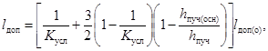
где hпуч(осн) - ожидаемое пучение грунтов под подошвой насыпи или в основании выемки, см; hпуч - ожидаемое суммарное пучение грунтов под дорожной одеждой, см; lдоп - допустимая величина поднятия покрытия проезжей части, см; lдоп(о) - допустимая величина поднятия покрытия проезжей части при однородном залегании грунтов, см; Kусл - коэффициент, учитывающий условия залегания грунтов под подошвой насыпи или в основании выемки.
В расчет следует включать следующие значения lдоп(о) см:
Капитальная одежда:
цементобетонное монолитное покрытие................... 3 (4,5)
сборное покрытие......................................................... 4
асфальтобетонное покрытие (горячая и теплая
смесь марок I и II.......................................................... 4 (6)
Облегченная одежда:
асфальтобетонное покрытие (горячая и теплая
смесь марки III.............................................................. 6
Переходная одежда...................................................................... 10
Значения lдоп(о) без скобок нужно применять при включении в расчет величины пучения, подсчитанной для среднемноголетнего года по условиям промерзания; значения в скобках - для года повторяемостью один раз в период между капитальными ремонтами дорожной одежды.
В зависимости от характера залегания грунтов под подошвой насыпи или в основании выемки необходимо включать в расчет следующие значения коэффициента Kусл:
однородное залегание грунтов................................................................................... 1
неоднородное залегание грунтов при 1-м типе увлажнения рабочего слоя.......... 1,5
то же, при 2-м и 3-м типах увлажнения рабочего слоя............................................ 2
В восточных районах II - III дорожно-климатических зон значения lдоп следует увеличивать на 20 - 40 % (большее значение - для облегченных и переходных дорожных одежд).
1.9. При оценке вариантов мероприятий по регулированию воднотеплового режима земляного полотна следует принимать в качестве основного критерия минимальные за срок сравнения приведенные затраты, которые представляют собой сумму приведенных капитальных вложений в дорожное строительство, транспортных расходов и расходов на эксплуатацию дороги.
2. ПРИТОК ВОДЫ В ГРУНТ ОТ АТМОСФЕРНЫХ ОСАДКОВ
2.1. Приток воды в грунт от атмосферных осадков следует устанавливать для трех периодов. Первый начинается осенью с момента влагонакопления в земляном полотне и заканчивается зимой при устойчивом промерзании грунта; второй имеет место при оттаивании грунтов под проезжей частью и обочинами во время зимних оттепелей; третий начинается весной с момента оттаивания рабочего слоя земляного полотна и заканчивается при превышении испарения воды над величиной впитывания осадков.
Прогнозировать приток воды в грунт в первый и третий периоды увлажнения следует для расчетного года с наибольшей суммарной продолжительностью выпадения осадков с периодичностью повторения одни раз за срок между капитальными ремонтами дорожной одежды. Прогнозировать приток осадков в грунт во второй период увлажнения нужно для года со среднемноголетней суммарной продолжительностью выпадения осадков (в виде дождя и снега) в течение зимы.
2.2. Для расчета притока воды в грунт необходимы следующие данные:
типы покрытия проезжей части и укрепления обочин, а также размеры конструктивных элементов дороги: ширина проезжей части и обочин, продольный уклон дороги, поперечный уклон проезжей части и обочин (проектные данные);
характеристика грунтов земляного полотна: коэффициент фильтрации, полная капиллярная влагоемкость, влажность на границе текучести и оптимальная влажность. При ориентировочных расчетах - коэффициент уплотнения грунта и оптимальная влажность;
метеорологические факторы в последний месяц осени *;
количество осадков и число дождей, суммарная продолжительность выпадения осадков и дефицит влажности воздуха заданной обеспеченности, среднемесячные значения интенсивности дождя и скорости ветра;
метеорологические факторы в первый месяц весны (такие же, как и в последний месяц осени);
метеорологические факторы в зимний период: количество осадков, число дождей и суммарная продолжительность осадков, выпадающих в виде дождя, за каждый месяц зимы по среднемноголетним данным. Допускается определять суммарную продолжительность осадков, выпадающих в виде дождя, и число дождей по формуле (3) и табл. 1. Для этого необходимы данные о суммарной продолжительности осадков, выпадающих в виде дождя и снега за каждый месяц зимы, и значения среднемесячных температур воздуха зимой по среднемноголетним данным.
Таблица 1
|
0 |
-2 |
-4 |
, °С … |
-6 |
-8 |
-10 |
|
|
Kд … |
12 |
11 |
9,5 |
Kд … |
7,5 |
6 |
5 |
|
mд … |
7 |
7 |
6 |
mд … |
5 |
4 |
3 |
Для зимы суммарная продолжительность осадков за месяц Tд, мин, выпадающих в виде дождя, устанавливается по формуле
Tд = Tд, сн[1 - (50 - Kд 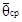
где Tд, сн - суммарная продолжительность осадков за месяц, выпадающих в виде дождя и снега, по среднемноголетним данным, мин; Kд - коэффициент, 1/°С; - среднемесячная температура воздуха (со знаком минус), °С.
Величину коэффициента Kд и число дождей зимой mд следует устанавливать по табл. 1 в зависимости от среднемесячной температуры воздуха.
Значение капиллярной влагоемкости грунта (Wкв, доли единицы) можно принимать равной полной влагоемкости (Wпв, доли единицы) минус величина Vвозд, которую определяют по табл. 2.
Таблица 2
|
WL, грунта, % |
Vвозд доли единицы, при Kу, равном |
WL, грунта, % |
Vвозд доли единицы, при Kу, равном |
||||
|
1 |
0,95 |
0,9 |
1 |
0,95 |
0,9 |
||
|
20 |
0,03 |
0,04 |
0,05 |
40 |
0,01 |
0,02 |
0,03 |
|
30 |
0,02 |
0,03 |
0,04 |
||||
|
* За конец осени и начало весны принята дата устойчивого перехода среднесуточной температуры воздуха через 0 °С. |
|||||||
Для песков мелких и пылеватых принимают те же значения Vвозд, что и для глинистых грунтов при WL = 20 % (где WL - влажность на границе текучести и Kу - коэффициент уплотнения грунта);
Wп.в = (ρгр - ρск)ρв/(ρгрρск), (4)
где ρгр, ρск, ρв - соответственно плотность частиц грунта, скелета грунта и воды, кг/м3.
При расчете по формуле (4) можно использовать осредненные значения плотности частиц грунта ρгр, кг/м3, приведенные ниже:
Песок мелкий и пылеватый......................................... 2650
Пылевая супесь.............................................................. 2660
Легкая супесь................................................................. 2680
Легкий пылеватый суглинок....................................... 2690
Легкий суглинок........................................................... 2700
Тяжелый суглинок........................................................ 2710
Пылеватая глина........................................................... 2720
Жирная глина................................................................ 2740
При установлении характерных участков дороги для расчета притока воды в земляное полотно необходимо учитывать подразделение территории II и III дорожно-климатических зон СССР на 5 районов по условиям увлажнения осадками (табл. 3). В основу районирования положены среднемноголетние значения дефицита влажности воздуха и осадков, выпавших в первый весенний и последний осенний месяцы.
Таблица 3
|
Географические границы района |
|
|
1 (II) |
Европейская часть II дорожно-климатической зоны западнее линии: Мерсрагс (ЛатССР) - Биржай - Укмерге - Лаздияй (ЛитССР) |
|
2 (II) |
Европейская часть II дорожно-климатической зоны до границы районов 1 (II) и 3 (II) |
|
3 (II) |
Европейская часть II дорожно-климатической зоны к югу от линии: Ковров (Владимирская обл.) - Чухлома (Костромская обл.) - Никольск (Вологодская обл.) - Опарино - Лойно (Кировская обл.) - Кудымкар (Коми-Пермяцкий автономный округ) - Оса (Пермская обл.) Азиатская часть II дорожно-климатической зоны севернее линии: Североуральск (Свердловская обл.) - Урай-Болчары (Ханты-Мансийский автономный округ) - Кунтики - Новая Жизнь (Томская обл.) |
|
4 (II) |
Азиатская часть II дорожно-климатической зоны к югу от границы района 3 (II) до линии: Артемовский - Тугулым (Свердловская обл.) - Омутинский (Тюменская обл.) |
|
5 (II) |
Азиатская часть II дорожно-климатической зоны к югу от границы района 4 (II) |
|
2 (III) |
Европейская часть III дорожно-климатической зоны севернее линии: Окница (Молдавская ССР) - Лохвица (Полтавская обл.) - Обоянь (Курская обл.) - Задонск (Липецкая обл.) - Ковров (Владимирская обл.) - Оса (Пермская обл.) - Аскино (Башкирская АССР) - Куса (Челябинская обл.) |
|
3 (III) |
Европейская часть III дорожно-климатической зоны до границы районов 2 (III) и 4 (III) |
|
4 (III) |
Европейская часть III дорожно-климатической зоны к югу от линии: Новоспасское - Ульяновск (Ульяновская обл.) - Чистополь (Татарская АССР) - Сарапул (Удмуртская АССР) - Люртюли - Миндяк (Башкирская АССР) Азиатская часть III дорожно-климатической зоны между линиями: Называевск - Марьяновка (Омская обл.) - Базой (Томская обл.) - Лебедево (Новосибирская обл.) |
|
5 (III) |
Азиатская часть III дорожно-климатической зоны к западу от границы района 4 (III) до линии Фершампенуаз - Аргаяш (Челябинская обл.) |
При расчете притока воды в грунт можно использовать метеорологические данные, приведенные в табл. 4 для указанных районов по условиям увлажнения осадками.
Таблица 4
|
Город |
Начало и конец периода |
Продолжительность осадков 5 %-ной обеспеченности, ч |
Средняя интенсивность дождя, мм/мин |
Число дождей 5 %-ной обеспеченности |
Дефицит влажности воздуха 5 %-ной обеспеченности, ГПа |
Средняя скорость ветра, м/с |
|
|
Первый весенний месяц |
|||||||
|
2 |
Архангельск |
21/IV - 21/V |
210 |
0,006 |
60 |
1,2 |
4 |
|
Вильнюс |
21/III - 20/IV |
230 |
0,006 |
55 |
1,1 |
4 |
|
|
Ленинград |
3/IV - 3/V |
210 |
0,006 |
55 |
1,5 |
4 |
|
|
Москва |
3/IV - 3/V |
165 |
0,007 |
50 |
1,8 |
4 |
|
|
Ржев |
5/IV - 5/V |
200 |
0,006 |
60 |
1,7 |
4 |
|
|
Сыктывкар |
13/IV - 13/V |
250 |
0,005 |
55 |
1,5 |
4 |
|
|
Чернигов |
21/III - 20/IV |
180 |
0,008 |
50 |
1,1 |
4 |
|
|
3 |
Александровское |
25/IV - 25/V |
180 |
0,007 |
50 |
2,1 |
5 |
|
Бугульма |
10/IV - 10/V |
200 |
0,007 |
55 |
2 |
5 |
|
|
Киров |
11/IV - 11/V |
190 |
0,007 |
55 |
2 |
5 |
|
|
Тамбов |
31/III - 30/IV |
180 |
0,007 |
55 |
1,7 |
4 |
|
|
4 |
Свердловск |
10/IV - 10/V |
190 |
0,005 |
55 |
1,8 |
6 |
|
Тюмень |
7/IV - 7/V |
150 |
0,006 |
40 |
2,1 |
4 |
|
|
5 |
Минусинск |
8/IV - 8/V |
100 |
0,007 |
40 |
2,2 |
3 |
|
Омск |
14/IV - 14/V |
110 |
0,009 |
45 |
2 |
5 |
|
|
Последний осенний месяц |
|||||||
|
2 |
Архангельск |
20/IX - 20/X |
270 |
0,007 |
80 |
0,5 |
5 |
|
Вильнюс |
21/X - 20/XI |
230 |
0,006 |
60 |
0,4 |
4 |
|
|
Ленинград |
11/X - 10/XI |
240 |
0,007 |
70 |
0,8 |
4 |
|
|
Москва |
5/X - 4/XI |
210 |
0,007 |
55 |
0,9 |
4 |
|
|
Ржев |
5/X - 4/XI |
230 |
0,005 |
65 |
0,8 |
4 |
|
|
Сыктывкар |
15/IX - 15/X |
380 |
0,005 |
80 |
0,6 |
4 |
|
|
Чернигов |
18/X - 17/XI |
200 |
0,007 |
40 |
0,5 |
4 |
|
|
3 |
Александровское |
14/IX - 14/X |
290 |
0,006 |
70 |
0,9 |
5 |
|
Бугульма |
23/IX - 23/X |
250 |
0,006 |
55 |
0,1 |
5 |
|
|
Киров |
21/IX - 21/X |
290 |
0,006 |
65 |
0,9 |
5 |
|
|
Тамбов |
7/X - 6/XI |
230 |
0,006 |
60 |
1 |
4 |
|
|
4 |
Свердловск |
18/IX - 18/X |
280 |
0,005 |
70 |
1 |
6 |
|
Тюмень |
21/IX - 21/X |
240 |
0,005 |
55 |
1 |
4 |
|
|
5 |
Минусинск |
18/IX - 18/X |
120 |
0,008 |
45 |
1,2 |
3 |
|
Омск |
20/IX - 20/X |
150 |
0,006 |
45 |
1,1 |
4 |
|
2.3. Приток воды в грунт в первый период увлажнения атмосферными осадками следует определять по формулам:
q'атм(пр.ч) = 10-3апрH'вп(пр.ч); (5)
q'атм(об) = 10-3апр(H'вп(об) - H'исп(об)), (6)
где q'атм(пр.ч) - приток воды в грунт от атмосферных осадков, выпадающих на поверхность проезжей части в осенний период влагонакопления и зимой до устойчивого промерзания грунта, м3 на 1 м2; q'атм(об) - приток воды в грунт от атмосферных осадков, выпадающих на поверхность обочин, и от стока воды с проезжей части на обочину в осенний период влагонакопления и зимой до устойчивого промерзания грунта, м3 на 1 м2; апр - коэффициент, учитывающий дополнительный приток воды, поступающей в грунт до и после расчетного месяца, безразмерная величина, апр = 1,3; H'вп(пр.ч) и H'вп(об) - количество воды, впитывающейся в последний осенний месяц расчетного года в грунт земляного полотна соответственно под проезжей частью и на обочинах, мм; H'исп(об) - количество воды, испаряющейся из грунта земляного полотна на обочинах в последний осенний месяц расчетного года, мм; ωгр - площадь, м2 (ωгр = 1 м2).
Приток воды во второй период увлажнения атмосферными осадками допускается определять (с запасом) по формулам:
q"атм(пр.ч) = 10-3H"вп(пр.ч); (7)
q"атм(об) = 10-3H"вп(об), (8)
где q"атм(пр.ч) - приток воды в грунт от атмосферных осадков, выпадающих на поверхность проезжей части в период зимних оттепелей, м3 на 1 м2; q"атм(об) - приток воды в грунт от атмосферных осадков, выпадающих на поверхность обочин и от стока воды с проезжей части на обочину в период зимних оттепелей, м3 на 1 м2; H"вп(пр.ч) и H"вп(об) - количество воды, впитывающейся в грунт соответственно под проезжей частью и обочиной в течение месяца, который характеризуется наибольшей суммарной продолжительностью выпадения осадков в виде дождя, мм.
Приток воды в грунт в третий период увлажнения атмосферными осадками следует определять по формулам:
q"'атм(пр.ч) = 10-3H"'вп(пр.ч); (9)
q"'атм(об) = 10-3(H"'вп(об) - H"'исп(об)), (10)
где q"'атм(пр.ч) - приток воды в грунт от атмосферных осадков, выпадающих на поверхность проезжей части весной в период оттаивания грунта, м3 на 1 м2; q"'атм(об) - приток воды в грунт от атмосферных осадков, выпадающих на поверхность обочин, и от стока воды с проезжей части на обочину весной в период оттаивания грунта, м3 на 1 м2; H"'вп(пр.ч) и H"'вп(об) - количество воды, впитывающейся в первый весенний месяц расчетного года в грунт земляного полотна соответственно под проезжей частью и на обочинах, мм; H"'исп(об) - количество воды, испаряющейся из грунта земляного полотна на обочинах в первый весенний месяц расчетного года, мм.
2.4. Впитывание воды в грунт следует определять за последний осенний и первый весенний месяцы, а в районах с частыми оттепелями - и для зимнего месяца с наибольшей величиной Tд.
Последовательность расчета впитывания воды
Суммарную величину смачивания поверхности проезжей части и обочин Hсм, мм, определяют по формулам:
* При расчете следует иметь в виду, что под знаком корня не показан коэффициент, равный единице, увязывающий принятые размерности.
Hсм ≤ mдmaxhсм, (12)
где асм, maxhсм - показатели смачивания поверхности проезжей части и обочин, мм; mд - число дождей расчетной повторяемости; d - дефицит влажности воздуха той же повторяемости, гПа; Tд - продолжительность дождя той же повторяемости, мин; T - продолжительность расчетного периода (месяца), мин.
Значения показателей смачивания поверхности проезжей части и обочин приведены ниже:
Покрытие: асм maxhсм
мм мм
асфальтобетонное 0,01 0,5
цементобетонное 0,02 1,0
Грунтовая обочина:
оголенная 0,04 1,5
с травяным покровом средней
густоты 0,10 3,0
с густым травяным покровом 0,15 4,0
Для обочин, укрепленных щебнем или песчано-гравийной смесью, значения показателей смачивания принимают те же, что для оголенной грунтовой поверхности.
Величину Hсм устанавливают для первого и третьего периодов увлажнения атмосферными осадками, для второго периода Hсм = 0.
Суммарное количество воды, впитывающейся в покрытие Hвп(о), мм, определяют по формуле
** При расчете следует иметь в виду, что под знаком логарифма, входящего в показатель степени, не показан коэффициент, равный единице, увязывающий принятые размерности.
где aо - показатель водопроницаемости покрытия (для асфальтобетонных покрытий, находящихся в удовлетворительном состоянии, aо = 0,003, для цементобетонных aо = 0,013 мм); bо - коэффициент, учитывающий степень заполнения влагой швов, микротрещин и пор бетонного камня перед дождем (для осеннего и зимнего периодов bо = 80; для весеннего bо = 100 мин/мм); iд - средняя интенсивность дождя, мм/мин; tвп(о) - продолжительность впитывания воды в покрытие, мин
tвп(о) = (iдTд - Hсм(пр.ч))/(iдmд), (14)
Hсм(пр.ч) - суммарная величина смачивания поверхности проезжай части, мм, определяемая по формулам (11) и (12).
При возникновении трещин в асфальтобетонном покрытии следует принимать значение коэффициента а0 таким же, как для цементобетонного покрытия.
Суммарное количество воды, впитывающейся в грунт земляного полотна под проезжей частью Hвп(пр.ч), мм, вычисляют по выражениям:
при 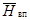
Нвп(пр.ч) = AодHвп(о);
при < AодHвп(о) (16)
Нвп(пр.ч) = ,
где - количество воды, которое может впитаться в грунт, покрытый водой, в течение всего рассматриваемого периода, мм (см. разд. 4); Aод - коэффициент, учитывающий испарение воды из дорожной одежды и нижележащего грунта и аккумуляцию влаги в слоях дорожной одежды в рассматриваемый период.
При расчете впитывания за месяц могут быть приняты приведенные ниже значения коэффициента Aод в зависимости от дефицита влажности воздуха d, гПа:
d 0 1 2 3 4
Aод 1,0 0,7 0,3 0,2 0,1
Интенсивность поступления воды на обочину iп.в, мм/мин, определяется по формуле
где
- ширина
односкатной или половины двускатной проезжей части по направлению стока воды,
м;  - ширина
обочины по направлению стока воды, м; iст(о) - интенсивность стока воды с проезжей части на
обочину, мм/мин.
- ширина
обочины по направлению стока воды, м; iст(о) - интенсивность стока воды с проезжей части на
обочину, мм/мин.
Допускается принимать = b и  = a, где b и a соответственно
ширина односкатной или половины двускатной проезжей части и ширина обочины, м;
= a, где b и a соответственно
ширина односкатной или половины двускатной проезжей части и ширина обочины, м;
iст(о) = iд - Hвп(о)/(mдtвп(о)). (18)
Коэффициент впитывания воды в грунт земляного полотна (безразмерная величина) рассчитывают по выражению
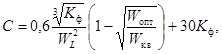
где Kф - коэффициент фильтрации, м/сут; WL - влажность на границе текучести грунта, доли единицы; Wопт - оптимальная влажность грунта, доли единицы; wк.в - капиллярная влагоемкость грунта, доли единицы; 0,6 и 30 - значения коэффициентов, увязывающих принятые размерности.
При ориентировочных расчетах можно определять величину коэффициента C по номограмме рис. 1.
Интенсивность впитывания воды в грунтовые обочины iвп, мм/мин, составит:
iп.в ≤ 0,02C
при iвп = iп.в; (20)
iп.в > 0,02C
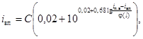
* При расчете следует иметь в виду, что перед вторым членом уравнения, а также под знаком логарифма не показаны коэффициенты, равные единице, увязывающие принятые размерности.
где 0,02 - интенсивность впитывания в грунт, принятая за эталон в момент появления стока воды в микрорусловой системе площадки, мм/мин; φ(l) - функция уклона поверхности, приведенная в табл. 5.
Рис. 1. Номограмма для определения коэффициента впитывания (цифры на кривых - коэффициенты уплотнения грунта)
1 - супеси; 2 - суглинки и глины
Для облегчения расчета интенсивность впитывания можно определять по номограмме рис. 2 методом подбора. Для этого при заданном значении интенсивности стока воды с обочины iст, мм/мин, устанавливают по графику величину Iвп, мм/мин. Затем вычисляют величину iвп по формулам:
iвп = (Iвп + 0,02)C и iвп = iп.в - iст.
При равенстве обоих значений iвп подбор закончен.
Таблица 5
|
I, % |
φ(l) |
I, % |
φ(l) |
I, % |
φ(l) |
I, % |
φ(l) |
|
2 |
1,59 |
8 |
1,82 |
50 |
3,02 |
200 |
5,62 |
|
3 |
1,66 |
9 |
1,85 |
60 |
3,17 |
300 |
6,96 |
|
4 |
1,7 |
10 |
1,86 |
70 |
3,47 |
400 |
7,8 |
|
5 |
1,74 |
20 |
2,14 |
80 |
3,59 |
600 |
9 |
|
6 |
1,78 |
30 |
2,4 |
90 |
3,8 |
800 |
9,5 |
|
7 |
1,8 |
40 |
2,75 |
100 |
3,98 |
1000 |
10 |
Рис. 2. Номограмма для определения интенсивности впитывания
Суммарное количество воды, впитывающейся в грунт земляного полотна на обочинах Hвп(об), мм, следует устанавливать по формуле
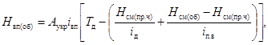
где Aукр - коэффициент, учитывающий влияние типа укрепления обочин на количество впитывающейся в грунт воды (значения приведены в табл. 6); Hсм(об) - суммарная величина смачивания поверхности обочины, мм, определяемая по формулам (11) и (12).
2.5. Испарение воды из грунта земляного полотна следует определять за последний осенний и первый весенний месяцы расчетного года. Величина испарения через обочины Hисп(об), мм, определяется по выражению
Hисп(об) = BукрiиспTисп, (23)
где Bукр - коэффициент, учитывающий влияние типа укрепления обочин на процесс испарения (см. табл. 6); iисп - интенсивность испарения воды через неукрепленные (грунтовые) обочины, мм/мин;
iисп = 25×10-5dlg(1 + 80/d)(1 + 0,15υ)*; (24)
* При расчете следует иметь в виду, что в формуле не показаны коэффициенты равные единице, увязывающие принятые размерности.
υ - скорость ветра, м/с (υ ≤ 5 м/с); Tисп - продолжительность периода испарения, мин:
Tисп = T - Tд. (25)
Таблица 6
|
Величина коэффициента |
Характеристика обочины |
Величина коэффициента |
|||
|
Aукр |
Bукр |
Aукр |
Bукр |
||
|
Неукрепленная (грунтовая) |
1 |
1 |
2000 |
0,55 |
0,4 |
|
Укрепленная щебнем при плотности, кг/м3: |
|
|
2180 |
0,4 |
0,35 |
|
1820 |
0,9 |
0,55 |
Укрепленная песчано-гравийной смесью |
0,6 |
0,7 |
|
1920 |
0,8 |
0,5 |
|
|
|
3. РАСЧЕТНЫЕ ГОРИЗОНТЫ ГРУНТОВЫХ ВОД
3.1. В качестве расчетных горизонтов грунтовых вод следует принимать их наивысшие уровни весной и осенью, а при наличии данных и в конце зимы, в период между капитальными ремонтами дорожной одежды и среднемноголетнее положение в летний период. При наличии верховодки за расчетный уровень этих вод принимают верхнюю линию оглеения грунтов.
Гидрогеологический прогноз осуществляют на базе многолетних наблюдений за режимом грунтовых вод по опорной наблюдательной сети Министерства геологии СССР и других ведомств, а также данных наблюдений за период изысканий. Обязательны региональные оперативные прогнозы режима грунтовых вод, составляемые ВСЕГИНГЕО.
При наличии многолетних (не менее 20 лет) наблюдений за режимом грунтовых вод определение расчетных уровней начинают с формирования на базе имеющихся рядов наблюдений выборок, состоящих из уровней грунтовых вод в рассматриваемый сезон года, например на период промерзания зоны аэрации.
Расчетные наивысшие уровни следует определять по кривой обеспеченности, построенной графически на клетчатке вероятностей.
Если ряд наблюдений включает менее 20 лет, то нужно его удлинять по данным о пункте-аналоге или по гидрометеорологическим факторам.
Аналог является эффективным и связь считается удовлетворительной для удлинения, если уравнение связи отвечает критериям Фишера и критерию Стьюдента, а коэффициенты парной или множественной корреляции являются существенно значимыми.
3.2. При отсутствии многолетних наблюдений за режимом грунтовых вод расчетные уровни можно определять, используя разовые замеры в период изысканий:
Hj(max) = Hj - (1 - λн)Aур, (26)
где Hj(max) - максимально возможный уровень грунтовых вод (минимальная глубина залегания от поверхности земли) в рассматриваемый сезон года, м; Hj - глубина залегания уровня грунтовых вод от поверхности земли в период изысканий, проводимых в рассматриваемый сезон года, м; λн - коэффициент относительного положения уровня грунтовых вод, безразмерная величина (определяется по карте прогнозов ВСЕГИНГЕО); Aур - амплитуда многолетних колебаний уровня грунтовых вод на глубине Hj, м (определяется по рис. 3 настоящего Пособия).
Рис. 3. Номограмма для определения амплитуды многолетних колебаний уровня грунтовых вод
1 - тяжелые супеси и суглинки; 2 - пески и легкие супеси; 3 - песчано-гравийные галечники
Коэффициент λн показывает, какую часть многолетней амплитуды составляет превышение уровня грунтовых вод в данном году (в котором проводились изыскания) от наиболее низкого за период наблюдений. Коэффициент λн изменяется от 0 до 1. При коэффициенте, равном нулю, уровень грунтовых вод в данном году занимает минимальное в многолетнем ряду положение и, наоборот, при наивысшем уровне - коэффициент λн равен единице. ВСЕГИНГЕО публикует и рассылает заинтересованным организациям карту значений коэффициента λн для каждого года.
Величину Hj можно определять по данным разовых замеров уровня грунтовых вод в любое время года. В этом случае нужно использовать типовые графики сезонных колебаний уровня грунтовых вод (рис. 4). Они характеризуют тип и размах сезонных колебаний на междуречьях и высоких террасах на глубине от 0 до 10 - 12 м. Они могут быть использованы для всей территории европейской части СССР за исключением горных районов и территорий с глубоким (более 15 м) залеганием грунтовых вод.
Из указанных графиков нужно выбрать типовую кривую сезонного колебания уровня грунтовых вод, соответствующую району изысканий. В качестве типовой следует принимать кривую, ближайшую к измеренному значению глубины залегания грунтовых вод.
Расчет величины Hj следует проводить по формуле
где
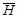
При расположении наблюдаемого уровня грунтовых вод выше соответствующего значения на типовой кривой следует принимать величину ΔH со знаком минус, в противном случае - со знаком плюс.
Рис. 4. Типовые графики сезонных колебаний уровня грунтовых вод в песках и легких супесях (а), в тяжелых супесях и суглинках (б) и в песчано-гравийных отложениях (в)
4. ЭПЮРЫ ВЛАЖНОСТИ ГРУНТОВ ПЕРЕД ПРОМЕРЗАНИЕМ ЗЕМЛЯНОГО ПОЛОТНА
4.1. Для прогноза эпюры влажности грунтов необходимо установить тип увлажнения рабочего слоя земляного полотна согласно прил. 1 настоящего Пособия.
Эпюру влажности некондиционных песков морозозащитного слоя нужно определять в соответствии с изложенным в разд. 7 настоящего Пособия.
При 1-м типе увлажнения рабочего слоя следует определять эпюру влажности глинистых грунтов насыпи, а также грунтов под подошвой насыпи или в основании выемки, по данным расчета перемещения в этих грунтах капиллярной воды, источником которой являются атмосферные осадки, выпадающие на поверхность проезжей части и обочин. Расчет нужно проводить по формулам (28) - (33).
При 2-м типе увлажнения рабочего слоя можно принимать без расчета влажность грунтов, равной капиллярной влагоемкости на участках дорог, проходящих в насыпи высотой не более 1,5 м, а также в выемках. Исключением являются некондиционные пески морозозащитного слоя, эпюру влажности которого определяют расчетом.
При 3-м типе увлажнения рабочего слоя можно принимать без расчета влажность грунтов равной капиллярной влагоемкости над горизонтом грунтовых вод и верховодки на участках дорог, проходящих в насыпи высотой не более 1,5 м, а также в выемках. Исключением являются некондиционные пески морозозащитного слоя, эпюру влажности которого определяют расчетом. Влажность грунтов ниже горизонта грунтовых вод, а также в пределах толщи грунта, где возможно образование верховодки, нужно принимать равной полной влагоемкости.
На участках дорог, проходящих в насыпи высотой более 1,5 м, нужно определять эпюру влажности грунтов расчетом по формулам (28) - (33).
Допускается прогнозировать эпюру влажности грунтов от атмосферных осадков, выпадающих на поверхность проезжей части и обочин, по данным расчета перемещения собственно капиллярной воды по вертикальному направлению сверху вниз, а эпюру влажности грунтов от грунтовых вод или верховодки снизу вверх.
Собственно капиллярная вода имеет, а капиллярно-подвешенная не имеет гидравлической связи с поверхностными и грунтовыми водами и с верховодкой.
4.2. Для прогноза перемещения капиллярной воды нужно выделить на чертеже профиля дороги слои грунта разной разновидности и плотности и обозначить их (рис. 5).
При определении эпюры влажности грунтов от атмосферных осадков, выпадающих на поверхность проезжей части, обозначают индексом i = 1 слой грунта непосредственно под дорожной одеждой; следующий слой - индексом i = 2 и т.д. При этом конечный слой грунта, в котором рассматривается перемещение капиллярной воды, обозначают индексом n. При наличии морозозащитного (дренирующего) слоя из некондиционных песков обозначают индексом i = 1 слой грунта под ними.
Аналогично обозначают слои грунта под обочинами при прогнозе перемещения капиллярной воды сверху вниз.
За начало отсчета глубин просачивания воды следует принимать: под проезжей частью - низ дорожной одежды, под обочинами - низ их укрепления, а при наличии морозозащитных (дренирующих) слоев из некондиционных песков - низ этих слоев.
При определении эпюры влажности от грунтовых вод или верховодки обозначают индексом i = 1 слой грунта непосредственно над горизонтом этих вод. В этом случае отсчет расстояния, на которое просочилась капиллярная вода, нужно начинать от горизонта грунтовых вод или верховодки.
Эпюру влажности грунта получают по данным расчета расстояний (SI, SII, SIII, SIV, м), на которые просочилась вода, по четырем группам капилляров, каждая из которых объединяет капилляры с одинаковыми размерами поперечного сечения.
Каждая группа капилляров характеризуется своими значениями удельной движущей силы мениска qк, Па, и коэффициента просачивания воды в грунте Kω, м/с.
Перемещение капиллярной воды в грунтах следует устанавливать по группам капилляров. Для слоистых грунтов расчет проводят по уравнениям:
Рис. 5. Эпюры влажности грунтов перед промерзанием земляного полотна
а - схема определения эпюры влажности грунта при его увлажнении грунтовыми водами; б - схема определения эпюры влажности грунта при его увлажнении атмосферными осадками; в - схема определения эпюры влажности многослойных грунтов при их увлажнении грунтовыми водами, г - эпюры влажности двухслойных грунтов на различные моменты времени.
I, II, III, IV - номера групп капилляров; 1, 2, i, n - номера слоев грунта; ΔS1, ΔS2, ΔSi - толщина слоев грунта; Wопт(1), Wопт(2) - оптимальная влажность соответственно 1-го и 2-го слоев грунта; Wкв(1), Wкв(2) - капиллярная влагоемкость соответственно 1-го и 2-го слоев грунта
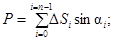
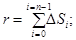
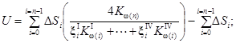
qк = qк(10)(1,02 - 0,002Θв); (32)
Kω = Kω(10)(0,7 + 0,03Θв), (33)
где tn - продолжительность перемещения воды в слое грунта, обозначенным индексом n, с; S - расстояние, на которое просочилась вода, м; Kω(i), Kω(n) - коэффициенты просачивания воды, в слоях грунта, обозначенных индексами i и n, м/с; αi, αn - угол между осью по направлению движения воды и горизонтальным радиусом тригонометрического круга, град (функциям sinα приписывается определенный знак в зависимости от того, в какой четверти тригонометрического круга лежит ось по направлению движения воды). При перемещении воды по вертикальному направлению вверх sinα = +1; при перемещении вниз sinα = -1; qк(n), qк(10) - удельная движущая сила мениска воды в слое грунта, обозначенном индексом n, соответственно при фактической температуре и температуре 10 °С, Па; g - ускорение свободного падения, м/с2; hв - толщина слоя воды на поверхности, м; ΔSi - - толщина слоя грунта, м; ξiI, ξiIV - коэффициенты соответственно для I и IV группы капилляров грунта, характеризующие степень их заполнения водой (при просачивании воды на всю толщину слоя грунта ξi = 1, в остальных случаях ξi = 0); Kω(10) - коэффициент просачивания воды в грунте при температуре 10 °С, м/с; Θв - температура воды в грунте, °С.
Для I группы капилляров грунта в расчет включают значения: S = SI, Kω(n) = KIω(n), qк(n) = qIк(n); для II, III и IV групп капилляров - соответствующие величины.
Значения удельных движущих сил менисков и коэффициентов просачивания, входящие в расчет, нужно устанавливать экспериментально, согласно прил. 2, или принимать по табл. 7 настоящего Пособия.
Температура незначительно влияет на перемещение капиллярной воды, поэтому для осени и весны можно использовать в расчетах средние значения температуры, равные 5 °С.
Для установления продолжительности просачивания воды через толщу слоистых грунтов нужно суммировать величины tn, полученные для отдельных слоев грунта.
При однослойном грунте значения P, r и U нужно принимать равными нулю. В этом случае перемещение капиллярной воды можно определять по номограммам на рис. 6.
Влажность грунта в сечении земляного полотна равна W = Wкв, когда все группы капилляров заполнены водой. В этом случае SI, SII, SIII, SIV больше расстояния до рассматриваемого сечения. При SI, SII, SIII, SIV меньше этого расстояния W = Wопт. При достижении рассматриваемого сечения водой в одной группе капилляров W = (Wкв + 3Wопт)/4, при двух - W = (Wкв + Wопт)/2, при трех - W = (3Wкв + Wопт)/4.
Таблица 7
|
Коэффициент уплотнения грунта |
Показатели капиллярных свойств грунта по группам капилляров |
||||||||
|
I |
II |
III |
IV |
||||||
|
qк(10) |
Kω(10) |
qк(10) |
Kω(10) |
qк(10) |
Kω(10) |
qк(10) |
Kω(10) |
||
|
Пески мелкие и пылеватые |
1 |
60 |
340×10-8 |
55 |
400×10-8 |
50 |
440×10-8 |
45 |
470×10-8 |
|
Супеси легкие крупные и легкие, супеси пылеватые |
0,9 |
105 |
100×10-8 |
90 |
165×10-8 |
85 |
200×10-8 |
80 |
235×10-8 |
|
0,92 |
110 |
65×10-8 |
85 |
135×10-8 |
70 |
185×10-8 |
60 |
225×10-8 |
|
|
0,95 |
135 |
25×10-8 |
80 |
65×10-8 |
60 |
110×10-8 |
50 |
150×10-8 |
|
|
0,97 |
170 |
5×10-8 |
125 |
10×10-8 |
95 |
20×10-8 |
75 |
25×10-8 |
|
|
0,9 |
175 |
25×10-8 |
110 |
40×10-8 |
100 |
50×10-8 |
90 |
60×10-8 |
|
|
Суглинки легкие и легкие пылеватые |
0,92 |
200 |
15×10-8 |
130 |
35×10-8 |
120 |
40×10-8 |
110 |
50×10-8 |
|
0,96 |
250 |
5×10-8 |
185 |
15×10-8 |
160 |
35×10-8 |
140 |
40×10-8 |
|
|
0,98 |
280 |
10×10-9 |
215 |
5×10-8 |
180 |
10×10-8 |
160 |
15×10-8 |
|
|
Суглинки тяжелые и тяжелые пылеватые, глины |
0,92 |
145 |
10×10-8 |
70 |
35×10-8 |
55 |
60×10-8 |
30 |
100×10-8 |
|
0,96 |
340 |
60×10-10 |
270 |
165×10-10 |
195 |
275×10-10 |
185 |
325×10-10 |
|
|
0,98 |
615 |
65×10-11 |
505 |
190×10-11 |
500 |
325×10-11 |
490 |
450×10-11 |
|
|
Примечание. qк(10) - удельная движущая сила мениска воды в грунте, гПа, при температуре 10 °С; Kω(10) - коэффициент просачивания воды в грунте, м/с, при температуре 10 °С. |
|||||||||
Рис. 6. Номограмма для расчета перемещения капиллярной воды вертикально вниз (а) и вверх (б)
qк - удельная движущая сила мениска; ρв - плотность воды; g - ускорение свободного падения; hв - слой воды на поверхности
4.3. Для конструкций без морозозащитного (дренирующего) слоя из песка эпюру влажности глинистых грунтов от атмосферных осадков устанавливают таким образом. Вначале с помощью номограммы (см. рис. 6, а) или по формулам (28) - (33) определяют глубины SI, SII, SIII, SIV, на которые может просочиться вода соответственно в I, II, III и IV группах капилляров грунта под проезжей частью на различные моменты времени.
По данным таких расчетов устанавливают объемы воды, которые поступают в грунт на те же моменты времени и сравнивают их с притоком воды в грунт от атмосферных осадков, выпадающих на проезжую часть, qатм(пр.ч). За искомые принимают глубины, при которых сравниваемые величины равны. Аналогично рассчитывают глубины, на которые может просочиться вода под обочинами. Объем воды Vω, м3 на 1 м2, который поступает в грунт на заданный момент времени, можно рассчитать по формуле
Vω = (SI + SII + SIII + SIV)(Wкв - Wопт)ρск/(4ρв). (34)
Затем определяют, согласно изложенному в 4.2, эпюры влажности грунта под проезжей частью и обочиной.
Аналогичным образом следует устанавливать эпюру влажности глинистых грунтов под морозозащитным (дренирующим) слоем из некондиционных песков от атмосферных осадков, выпадающих на поверхность проезжей части и обочин. Разница только в определении значения глубин SI, SII, SIII, SIV, на которые может просочиться вода соответственно в I, II, III, и IV группах капилляров глинистого грунта от низа морозозащитного (дренирующего) слоя. Эти величины нужно устанавливать согласно п. 7.3 настоящего Пособия.
4.4. При 3-м типе увлажнения рабочего слоя земляного полотна следует установить возможность поступления в этот слой капиллярной воды от уровня грунтовых вод в летний период. Такое явление может иметь место, когда расстояние по вертикали от среднемноголетнего положения горизонта грунтовых вод в летний период до подошвы рабочего слоя менее величины
(qIк(10) + qIIк(10) + qIIIк(10) + qIVк(10))/(4ρвg),
где qIк(10); qIIк(10); qIIIк(10); qIVк(10) - значения удельных движущих сил менисков воды в грунте с ненарушенной структурой.
При возможности указанного поступления капиллярной воды нужно определить эпюру влажности грунта рабочего слоя в летний период, включая в расчет следующие данные:
SI = qIк(10)/(ρвg); SII = qIIк(10)/(ρвg);
SIII = qIIIк(10)/(ρвg); SIV = qIVк(10)/(ρвg).
В этом случае значения qIк(10); qIIк(10); qIIIк(10); qIVк(10) нужно принимать для грунта рабочего слоя земляного полотна. Отсчет расстояний SI, SII, SIII, SIV следует проводить от среднемноголетнего положения горизонта грунтовых вод в летний период.
5. ТЕМПЕРАТУРНОЕ ПОЛЕ ЗЕМЛЯНОГО ПОЛОТНА В ЗИМНИЙ ПЕРИОД
5.1. Для прогноза плотности, влажности и пучения промерзающих грунтов следует проводить расчет температурного поля земляного полотна в зимний период. В результате этого расчета нужно установить на один и тот же момент времени значения глубин, на которых температура грунта равна Θлобр, Θа и Θб, где Θлобр - температура льдообразования при оптимальной влажности грунта, а Θа и Θб температуры, характеризующие кривую содержания незамерзшей воды в грунте (см. табл. 12). По данным расчета температурного поля следует также определить среднюю скорость промерзания грунта.
Температурное поле земляного полотна нужно прогнозировать с учетом процессов теплопередачи и массопереноса. Для этого следует проводить расчет температурного поля в два этапа. Первый расчет проводят при значениях коэффициента теплопроводности и количестве замерзшей воды, соответствующих плотности и влажности грунтов перед промерзанием. Второй расчет проводят при величине коэффициента теплопроводности, соответствующей среднеарифметическим значениям плотности и влажности в период промерзания и при количестве замерзшей воды, соответствующей влажности грунта после промерзания.
5.2. Для расчета температурного поля необходимы приведенные ниже данные:
климатические параметры для трех расчетных периодов: наиболее холодного и наиболее теплого года (периодичностью повторения 1 раз в период между капитальными ремонтами дорожной одежды) и года со среднемноголетними температурами (принимают по табл. 8 или устанавливают по прил. 3);
среднемесячная скорость ветра за зиму (по данным гидрометеослужбы);
конструкция дорожной одежды (материалы слоев, толщина и плотность слоев по проекту);
грунтовый разрез земляного полотна и основания насыпи или выемки (наименование грунта и толщина слоев из этих грунтов по данным проекта) в пределах предполагаемой зоны промерзания;
плотность грунтов перед промерзанием (плотность скелета грунта земляного полотна по проекту, то же, для грунтов в основании насыпи или выемки по данным изысканий или согласно изложенному в п. 1.6 Пособия;
влажность грунтов перед промерзанием (принимают по данным расчета согласно разд. 4);
среднее положение уровня грунтовых вод в зимний период (принимают согласно разд. 3).
5.3. С учетом указанных исходных данных следует определить значения коэффициентов теплопроводности слоев дорожной одежды, мерзлых грунтов земляного полотна и основания насыпи или выемки. Их нужно устанавливать экспериментально или принимать по табл. 9 и 10.
Нужно также определить температуру льдообразования и содержание незамерзшей воды в слоях грунта. Эти величины устанавливают экспериментально или принимают по табл. 12 и по формуле, где количество незамерзшей воды в грунте Wнз, доли единицы:
Wнз = KнзWр, (35)
где Kнз - коэффициент, зависящий от типа грунта, числа пластичности и температуры мерзлого грунта; Wр - влажность грунта на границе раскатывания, доли единицы.
Таблица 8
|
Температурная характеристика года |
Климатические параметры |
|||||
|
атемп.., - °С |
апон., сут |
азап., сут |
апр., м |
Rод(max), м2×К/Вт |
||
|
Архангельск |
Холодный |
23,3 |
129 |
140 |
0,79 |
2,33 |
|
Со среднемноголетними температурами |
16,8 |
98 |
125 |
0,69 |
2,13 |
|
|
Теплый |
13,7 |
116 |
143 |
0,66 |
1,91 |
|
|
Великие Луки |
Холодный |
14,9 |
75 |
127 |
0,69 |
1,98 |
|
Со среднемноголетними температурами |
6,1 |
103 |
104 |
0,48 |
0,88 |
|
|
Теплый |
4,6 |
71 |
98 |
0,18 |
0,66 |
|
|
Вильнюс |
Холодный |
11,9 |
50 |
102 |
0,62 |
1,72 |
|
Со среднемноголетними температурами |
8,3 |
43 |
80 |
0,15 |
0,4 |
|
|
Теплый |
3,3 |
36 |
62 |
0,1 |
0,3 |
|
|
Горький |
Холодный |
20,8 |
101 |
102 |
0,77 |
2,2 |
|
Со среднемноголетними температурами |
17,9 |
100 |
123 |
0,72 |
2,08 |
|
|
Теплый |
8,9 |
87 |
117 |
0,51 |
1,39 |
|
|
Ижевск |
Холодный |
21,3 |
154 |
155 |
0,81 |
2,37 |
|
Со среднемноголетними температурами |
19,6 |
117 |
141 |
0,77 |
2,27 |
|
|
Теплый |
14,8 |
99 |
136 |
0,61 |
1,84 |
|
|
Казань |
Холодный |
22,8 |
84 |
119 |
0,79 |
2,36 |
|
Со среднемноголетними температурами |
12,6 |
86 |
127 |
0,74 |
2,14 |
|
|
Теплый |
15,9 |
88 |
134 |
0,66 |
1,86 |
|
|
Калининград |
Холодный |
10,7 |
48 |
92 |
0,53 |
1,48 |
|
Со среднемноголетними температурами |
5,8 |
77 |
105 |
0,34 |
0,95 |
|
|
Теплый |
0,7 |
15 |
29 |
0,03 |
0,1 |
|
|
Киев |
Холодный |
14,5 |
45 |
90 |
0,58 |
1,59 |
|
Со среднемноголетними температурами |
12,4 |
21 |
69 |
0,42 |
1,15 |
|
|
Теплый |
3 |
67 |
87 |
0,15 |
0,4 |
|
|
Киров |
Холодный |
19,8 |
85 |
133 |
0,82 |
2,49 |
|
Со среднемноголетними температурами |
18,3 |
81 |
125 |
0,75 |
2,15 |
|
|
Теплый |
14 |
52 |
102 |
0,68 |
1,81 |
|
|
Кишинев |
Холодный |
13,4 |
65 |
85 |
0,45 |
1,29 |
|
Со среднемноголетними температурами |
4,6 |
36 |
70 |
0,15 |
0,43 |
|
|
Кострома |
Холодный |
20,3 |
87 |
148 |
0,8 |
2,36 |
|
Со среднемноголетними температурами |
16,5 |
102 |
121 |
0,72 |
2,09 |
|
|
Теплый |
9,1 |
85 |
110 |
0,45 |
1,22 |
|
|
Котлас |
Холодный |
24,4 |
48 |
108 |
0,8 |
2,37 |
|
Со среднемноголетними температурами |
21,3 |
108 |
150 |
0,77 |
2,25 |
|
|
Теплый |
11,6 |
96 |
102 |
0,52 |
1,5 |
|
|
Ленинград |
Холодный |
15,2 |
77 |
127 |
0,77 |
1,96 |
|
Со среднемноголетними температурами |
12,6 |
58 |
91 |
0,63 |
1,85 |
|
|
Теплый |
5,1 |
58 |
91 |
0,2 |
0,5 |
|
|
Львов |
Холодный |
11,7 |
61 |
106 |
0,56 |
1,5 |
|
Со среднемноголетними температурами |
7,2 |
68 |
94 |
0,37 |
1 |
|
|
Теплый |
3,1 |
48 |
70 |
0,15 |
0,38 |
|
|
Минск |
Холодный |
13,8 |
66 |
103 |
0,65 |
1,81 |
|
Со среднемноголетними температурами |
7,2 |
85 |
112 |
0,48 |
1,32 |
|
|
Теплый |
6,5 |
15 |
57 |
0,19 |
0,52 |
|
|
Москва |
Холодный |
17,5 |
86 |
135 |
0,76 |
2,32 |
|
Со среднемноголетними температурами |
14 |
117 |
120 |
0,62 |
1,81 |
|
|
Теплый |
8,8 |
67 |
70 |
0,41 |
1,03 |
|
|
Новгород |
Холодный |
15 |
77 |
119 |
0,69 |
2 |
|
Со среднемноголетними температурами |
8 |
72 |
124 |
0,38 |
1,05 |
|
|
Теплый |
6 |
71 |
101 |
0,22 |
0,6 |
|
|
Петрозаводск |
Холодный |
20,2 |
101 |
128 |
0,75 |
2,18 |
|
Со среднемноголетними температурами |
15,6 |
76 |
128 |
0,69 |
1,98 |
|
|
Теплый |
6,6 |
93 |
96 |
0,31 |
0,86 |
|
|
Пермь |
Холодный |
27,1 |
88 |
118 |
0,82 |
2,5 |
|
Со среднемноголетними температурами |
20,2 |
61 |
132 |
0,8 |
2,36 |
|
|
Теплый |
13,2 |
92 |
114 |
0,67 |
1,89 |
|
|
Псков |
Холодный |
14,3 |
57 |
108 |
0,69 |
1,99 |
|
Со среднемноголетними температурами |
13,3 |
76 |
112 |
0,49 |
1,36 |
|
|
Теплый |
4,4 |
74 |
97 |
0,14 |
0,53 |
|
|
Свердловск |
Холодный |
27,9 |
129 |
160 |
0,82 |
2,54 |
|
Со среднемноголетними температурами |
25,6 |
61 |
97 |
0,76 |
2,24 |
|
|
Теплый |
13,3 |
108 |
111 |
0,68 |
1,96 |
|
|
Таллин |
Холодный |
12 |
77 |
122 |
0,58 |
1,61 |
|
Со среднемноголетними температурами |
9,3 |
71 |
118 |
0,38 |
1,04 |
|
|
Теплый |
2,2 |
29 |
52 |
0,07 |
0,2 |
|
|
Ульяновск |
Холодный |
21 |
93 |
129 |
0,79 |
2,34 |
|
Со среднемноголетними температурами |
11,9 |
106 |
136 |
0,72 |
2,06 |
|
|
Теплый |
10,6 |
92 |
105 |
0,52 |
1,5 |
|
|
Усть-Цильма |
Холодный |
26 |
118 |
203 |
0,98 |
3,35 |
|
Со среднемноголетними температурами |
24 |
75 |
116 |
0,8 |
2,37 |
|
|
Теплый |
14,8 |
122 |
144 |
0,73 |
2,11 |
|
|
Уфа |
Холодный |
25,7 |
117 |
133 |
0,82 |
2,48 |
|
Со среднемноголетними температурами |
16,9 |
75 |
130 |
0,78 |
2,27 |
|
|
Теплый |
11 |
75 |
108 |
0,66 |
1,87 |
|
|
Примечания: 1. В таблице приведены значения климатических параметров для наиболее холодного и наиболее теплого года повторяемостью один раз в 20 лет и для среднемноголетнего года. 2. При проектировании автомобильных дорог в районах, для которых нет данных о климатических параметрах, необходимо устанавливать эти параметры по прил. 3. |
||||||
Таблица 9
|
Плотность, кг/м3 |
Коэффициент теплопроводности, Вт/(м×К) |
|
|
Цементобетон |
2400 |
1,74 |
|
Асфальтобетон: |
|
|
|
горячий плотный |
2400 |
1,4 |
|
пористый |
2300 |
1,25 |
|
высокопористый, в том числе битумо-песчаная смесь (ТУ 218 РСФСР 395-79) |
1900 - 2200 |
1 - 1,1 |
|
Одномерный гранитный щебень, обработанный вязким битумом |
1850 |
1,28 |
|
Слабопрочные известняки, укрепленные известью |
2000 |
1,16 |
|
Керамзитовый гравий, обработанный вязким битумом |
1100 - 1450 |
0,64 - 0,93 |
|
Аглопоритовый щебень, обработанный вязким битумом |
800 |
0,23 |
|
Аглопорит, укрепленный цементом (аглопоритовый щебень - 45 %, аглопоритовый песок - 45 %, цемент - 10 %, вода - 10 %) |
1540 |
0,35 |
|
Керамзитобетон |
1400 |
0,75 |
|
Шлакобетон |
1600 |
0,58 |
|
Стиропорбетон (на щебне из отходов жестких пенопластов) |
800 - 1400 |
0,2 - 0,5 |
|
Каменноугольная золошлаковая смесь, укрепленная 6 - 8 % цемента |
1600 |
0,7 |
|
Пенопласт: |
|
|
|
из полистирола ПС-4-60 |
60 |
0,05 |
|
«Стайрофоум» |
40 |
0,03 |
|
Песок: |
|
|
|
разномерный, укрепленный 6 - 10 % цемента |
2100 |
1,86 |
|
мелкий одномерный, укрепленный 10 % цемента |
2100 |
1,62 |
|
Супесь, укрепленная: |
|
|
|
10 % битумной эмульсией |
1800 |
1,45 |
|
8 - 10 % цемента |
1800 |
1,51 |
|
Суглинок, укрепленный: |
|
|
|
6 - 12 % цемента |
1850 |
1,45 |
|
2 - 6 % цемента и 6 - 2 % извести |
1850 |
1,33 |
|
Щебень: |
|
|
|
из гранита |
1800 |
1,86 |
|
из известняка |
1600 |
1,39 |
|
Гравий |
1800 |
1,86 |
|
Гравийно-песчаная смесь |
2000 |
2,1 |
Таблица 10
|
Влажность грунта, доли единицы |
Коэффициент теплопроводности, Вт/(м×К), мерзлых грунтов |
|||
|
песков |
супесей |
суглинков и глин |
||
|
1000 |
0,6 |
- |
2,04 |
1,92 |
|
1200 |
0,4 |
- |
1,92 |
1,8 |
|
1400 |
0,35 |
- |
1,86 |
1,69 |
|
0,3 |
- |
1,8 |
1,57 |
|
|
0,25 |
2,15 |
1,69 |
1,51 |
|
|
0,2 |
1,86 |
1,51 |
1,22 |
|
|
0,15 |
1,63 |
1,28 |
0,99 |
|
|
0,1 |
1,28 |
1,05 |
0,76 |
|
|
0,05 |
0,81 |
0,7 |
0,52 |
|
|
1600 |
0,3 |
- |
1,98 |
1,8 |
|
0,25 |
2,73 |
1,92 |
1,69 |
|
|
0,2 |
2,38 |
1,74 |
1,51 |
|
|
0,15 |
2,04 |
1,57 |
1,22 |
|
|
0,1 |
1,63 |
1,28 |
0,93 |
|
|
0,05 |
1,1 |
0,87 |
0,64 |
|
|
1800 |
0,2 |
2,85 |
1,98 |
1,8 |
|
0,15 |
2,62 |
1,8 |
1,57 |
|
|
0,1 |
2,21 |
1,57 |
1,22 |
|
|
0,05 |
1,51 |
0,99 |
0,76 |
|
|
2000 |
0,1 |
2,9 |
1,86 |
1,39 |
|
0,05 |
2,15 |
- |
- |
|
Применительно к расчету температурного поля содержание незамерзшей воды нужно устанавливать при температуре грунта, при которой определяется его коэффициент теплопроводности. Тогда можно принять следующие значения коэффициента Kнз:
Пески и супеси с числом пластичности 2 и менее......... 0
Остальные разновидности супеси................................... 0,25
Суглинки с числом пластичности:
13 и менее.................................................................. 0,4
более 13...................................................................... 0,45
Глины.................................................................................. 0,55
Устанавливают количество замерзшей воды (iзм(i), доли единицы) в слоях земляного полотна и в основании насыпи или выемки в пределах предполагаемой зоны промерзания:
iзм(i) = (Wо - Wнз)ρск(о)/ρв, (36)
где Wо - влажность грунта перед его промерзанием, доли единицы; ρск(о) - плотность скелета грунта перед его промерзанием, кг/м3.
Рис. 7. Номограмма для определения минимальной температуры грунта
Рис. 8. Номограмма для определения параметра , входящего в расчет глубины промерзания
Рис. 9. Номограмма для определения параметров A'пр, B'пр (а) и A"пр, B"пр (б), входящих в расчет глубины промерзания грунта
Для расчета температурного поля земляного полотна необходимо также определить величину термического сопротивления дорожной одежды
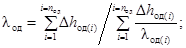
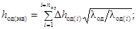
Rод = hод(экв)/λод + 1/α, (40)
где λод - коэффициент теплопроводности эквивалентного слоя дорожной одежды, Вт/(м×К); nод - количество конструктивных слоев дорожной одежды; Δhод(i) - толщина конструктивного слоя дорожной одежды, м; λод(i) - коэффициент теплопроводности слоя дорожной одежды, Вт/(м×К); hод(экв) - толщина эквивалентного по теплофизическим свойствам слоя дорожной одежды, м; α - коэффициент теплообмена на поверхности дорожной одежды, Вт/(м2×К); υ - среднемесячная скорость ветра, м/с; Rод - термическое сопротивление дорожной одежды, м2×К/Вт.
5.4. Расчет температурного поля следует проводить в предлагаемой далее последовательности.
Вначале задаются глубиной промерзания hпр и вычисляют значения iзм, λгр(м), Θлобр.
Под глубиной промерзания за зиму hпр, м, следует понимать расстояние от низа дорожной одежды до глубины с температурой, равной Θлобр. При устройстве морозозащитного слоя из некондиционных песков за низ дорожной одежды принимают верхнюю поверхность морозозащитного слоя:
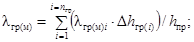
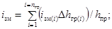
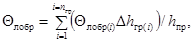
где λгр(м) - коэффициент теплопроводности эквивалентного по теплофизическим свойствам мерзлого слоя грунта, Вт/(м×К); λгр(м)i - коэффициент теплопроводности отдельного слоя мерзлого грунта, Вт/(м×К); nгр - количество слоев грунта в зоне промерзания; Δhгр(i) - толщина слоев грунта в зоне промерзания; iзм - количество замерзшей воды в эквивалентном слое грунта, доли единицы; Θлобр - температура льдообразования в эквивалентном слое грунта, °С; Θлобр(i) - температура льдообразования в отдельном слое грунта, °С.
По рис. 7 устанавливают минимальную температуру грунта под дорожной одеждой Θmin(о) в зимний период при известных значениях Rод/Rод(max), iзм и атемп. Затем определяют по рис. 8 параметр при известной величине отношения Θлобр/Θmin(о), по рис. 9, а - параметры A'пр и B'пр в зависимости от Rод/Rод(max), iзм. Аналогично устанавливают по рис. 9, б параметры A"пр и B"пр и вычисляют глубину промерзания по формуле
hпр = 0,86апр[A'прB'пр + 2,8(1 - апон/азап)(A"прB"пр - A'прB'пр)]λгр(м). (44)
Входящие в формулу (44) значения B'пр и B"пр не могут быть больше величин:
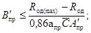
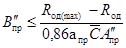
Расчет глубины промерзания можно считать законченным при разнице между заданным значением hпр и соответствующей величиной по формуле (44) менее 1 %. В противном случае нужно задаться новым значением hпр и повторить расчет.
Рис. 10. Номограмма для определения продолжительности периода понижения (а) и запаздывания (б) температуры грунта
Таблица 11
|
Разность величин Hз(ср) - hпр, м |
Коэффициент к величине Rод(max) при отношении Rод/Rод(max) |
||||||
|
0,1 |
0,2 |
0,3 |
0,4 |
0,5 |
0,6 |
0,7 |
|
|
0,2 |
0,3 |
0,65 |
0,8 |
0,85 |
0,90 |
0,95 |
1 |
|
0,4 |
0,55 |
0,75 |
0,85 |
0,9 |
0,95 |
1 |
1 |
|
0,6 |
0,75 |
0,85 |
0,9 |
0,95 |
1 |
1 |
1 |
|
0,8 |
0,85 |
0,9 |
0,95 |
1 |
1 |
1 |
1 |
|
1 |
0,9 |
0,95 |
1 |
1 |
1 |
1 |
1 |
|
1,2 |
0,95 |
1 |
1 |
1 |
1 |
1 |
1 |
|
1,4 |
1 |
1 |
1 |
1 |
1 |
1 |
1 |
|
Примечания: 1. Величину Hз(ср) следует принимать равной расстоянию от низа дорожной одежды до среднего положения уровня грунтовых вод в зимний период. 2. В разность Hз(ср) - hпр входит значение глубины промерзания по формуле (44) при величине коэффициента, равного 1. |
|||||||
Дополнительным источником тепла, который необходимо учитывать, прогнозируя температурное поле земляного полотна, являются грунтовые воды. Влияние грунтовых вод на температуру грунта можно учесть, введя коэффициент (см. табл. 11) к величине Rод(max).
С учетом указанного коэффициента определяют новое значение Rод(max) и повторяют расчет глубины промерзания по формуле (44).
Следующим этапом расчета является определение продолжительности понижения температуры грунта под дорожной одеждой от величины Θлобр до Θmin(о). Продолжительность этого периода tпон(о), сут, устанавливают по рис. 10, а в зависимости от Rод/Rод(max) и iзм при известных значениях Θmin(о), Θлобр и апон.
По рис. 10, б находят параметры Aзап и Bзап в зависимости от Rод/Rод(max) и iзм. После этого вычисляют продолжительность периода (в сутках) от начала зимы до перехода температуры грунта под дорожной одеждой через значение, равное Θлобр:
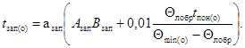
Затем вычисляют продолжительность периода (в сутках) от начала зимы до момента промерзания грунта на глубину Zпр:
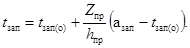
Значение глубины Zпр следует принимать равным расстоянию от низа дорожной одежды до середины каждого слоя грунта толщиной Δhгр(i).
На заключительном этапе работы устанавливают для каждого слоя грунта значения глубин, на которых температура грунта равна Θлобр, Θа и Θб на один и тот же момент времени. Расчет проводят по формуле
При Θ = Θлобр(i) имеем Z = Zпр(i); при Θ = Θа имеем Z = Zа; при Θ = Θб имеем Z = Zб.
Кроме этого, вычисляют среднюю скорость промерзания грунта υпр, м/с:
υпр = hпр/(азап - tзап(о)). (48)
6. ПЛОТНОСТЬ, ВЛАЖНОСТЬ И ПУЧЕНИЕ ПРОМЕРЗАЮЩИХ ГРУНТОВ
6.1. Для прогноза плотности, влажности и пучения грунтов, которые следует ожидать при эксплуатации дороги, необходимы следующие данные: местоположение дороги (область, район, пункт); тип увлажнения рабочего слоя земляного полотна (см. прил. 1); наивысшие уровни грунтовых вод осенью, в конце зимы и весной в период между капитальными ремонтами дорожной одежды и среднемноголетнее положение в летний период, а также расчетный уровень залегания верховодки (см. п. 3) на участках 3-го типа увлажнения земляного полотна; конструкция дорожной одежды (материалы, толщина и плотность слоев); грунтовый разрез земляного полотна и естественного основания (характеристика грунта по дорожной классификации и толщина слоев из этих грунтов) в пределах зоны промерзания и ниже до горизонта грунтовых вод или верховодки; плотность грунтов земляного полотна по проекту и плотность грунтов естественного основания по данным изысканий в конце осени. При отсутствии данных полевых испытаний грунтов естественного основания можно принимать значения их плотности согласно п. 1.6.
Помимо этого нужно знать: показатели капиллярных свойств грунтов, коэффициенты пучения грунтов, содержание незамерзшей воды и температуру льдообразования, коэффициенты, учитывающие влияние нагрузки на пучение грунтов, и коэффициенты линейной усадки грунтов. Эти величины определяют экспериментально (см. прил. 2 и 4). При ориентировочных расчетах их принимают по графикам рис. 11 и табл. 7, 12 и 13.
Для прогноза плотности, влажности и пучения промерзающих грунтов необходимо предварительно определить эпюру влажности грунтов перед промерзанием, согласно п. 4, и температурное поле земляного полотна в зимний период согласно п. 5 настоящего Пособия.
При отсутствии данных о положении грунтовых вод в различные периоды года можно определять плотность, влажность и пучение грунтов в зимний период, принимая (с запасом) в качестве расчетного уровня этих вод горизонт оглеения.
Рис. 11. Значение коэффициентов пучения грунтов в зависимости от их коэффициентов уплотнения
Iб - мелкий песок (содержание пыли и глины не более 10 %); Iа - пылеватый песок (содержание пыли и глины не более 10 %); II - супесь; III - суглинок; IV - глина
6.2. Прогноз значений плотности и влажности грунта и его пучения следует проводить для всех слоев грунта разного вида и плотности в пределах зоны промерзания, включая морозозащитный слой из некондиционного песка, рабочий слой земляного полотна и основание насыпи или выемки. Грунт, расположенный ниже горизонта грунтовых вод или верховодки в осенний период, следует выделять в отдельный слой с влажностью, равной полной влагоемкости.
Расчет начинают с определения средней скорости промерзания грунта по формуле (48). Затем устанавливают для каждого слоя грунта в пределах зоны промерзания характеристики кривой содержания незамерзшей воды: Θлобр, Θа, Θб, Wнз(а), Wнз(б), где Θлобр - температура льдообразования при оптимальной влажности грунта, °С, Θа и Θб - температуры, соответствующие точкам «а» и «б» на кривой содержания незамерзшей воды, °С; Wнз(а) и Wнз(б) - количество незамерзшей воды (доли единицы), соответствующие точкам «а» и «б» в табл. 12. После этого вычисляют по формуле (47) для всех слоев грунта в пределах зоны промерзания значения глубин Zпр, Zа, Zб, на которых температура грунта соответственно равна Θлобр, Θа и Θб на один и тот же момент времени.
Затем нужно на те же моменты времени определить для каждого слоя грунта значения градиентов незамерзшей пленочной воды на глубине промерзания по формулам:
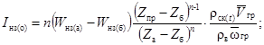
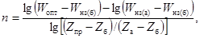
где
Iнз(о) -
градиент незамерзшей пленочной воды на глубине промерзания, безразмерная
величина; ρск(t) - плотность скелета грунта в зоне промерзания на
рассматриваемый момент, кг/м3; 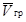
Таблица 12
|
Температура льдообразования при оптимальной влажности грунта Θлобр, -°С |
Температура грунта и соответствующее ей содержание незамерзшей воды в грунте для точек |
||||
|
а |
б |
||||
|
Θа, -°с |
Wнз(а), % |
Θб, -°с |
Wнз(б), % |
||
|
Песок мелкий и пылеватый |
|||||
|
8 |
0 |
0,3 |
3,5 |
0,5 |
2 |
|
10 |
0 |
0,3 |
4,5 |
0,5 |
3 |
|
12 |
0 |
0,3 |
6 |
0,5 |
4 |
|
Супесь |
|||||
|
10 |
0,1 |
0,3 |
6 |
0,5 |
5 |
|
12 |
0,1 |
0,3 |
7 |
0,5 |
6 |
|
14 |
0,1 |
0,3 |
8,5 |
0,5 |
7 |
|
16 |
0,1 |
0,3 |
9,5 |
0,5 |
8 |
|
18 |
0,1 |
0,3 |
10,5 |
0,5 |
9 |
|
Суглинок |
|||||
|
14 |
0,1/0,3 |
0,3/0,5 |
10/10,5 |
0,5/1 |
9/9 |
|
16 |
0,1/0,3 |
0,3/0,5 |
12/12,5 |
0,5/1 |
11/11 |
|
18 |
0,1/0,3 |
0,3/0,5 |
13,5/14,5 |
0,5/1 |
12,5/12,5 |
|
20 |
0,1/0,3 |
0,3/0,5 |
15,5/16,5 |
0,5/1 |
14,5/14,5 |
|
22 |
0,1/0,3 |
0,3/0,5 |
17/18 |
0,5/1 |
15,5/15,5 |
|
Глина |
|||||
|
18 |
0,6 |
1,5 |
14 |
2 |
12,5 |
|
20 |
0,6 |
1,5 |
16 |
2 |
13,5 |
|
22 |
0,7 |
1,5 |
17,5 |
2 |
15,5 |
|
24 |
0,8 |
1,5 |
19,5 |
2 |
17 |
|
26 |
0,9 |
1,5 |
21,5 |
2 |
19 |
|
28 |
0,9 |
1,5 |
23,5 |
2 |
20 |
|
Примечание. Перед чертой приведены показатели для суглинка с числом пластичности 12 и менее; после черты - с числом пластичности более 12. |
|||||
Таблица 13
|
Значение ап при коэффициенте уплотнения грунта перед промерзанием |
|||||
|
0,8 |
0,85 |
0,9 |
0,95 |
1 |
|
|
Песок мелкий |
- |
- |
- |
- |
1,5 |
|
Песок пылеватый |
- |
- |
- |
- |
1 |
|
Супесь |
- |
- |
- |
1 |
0,5 |
|
Суглинок |
- |
1 |
0,8 |
0,6 |
0,4 |
|
Глина |
0,6 |
0,5 |
0,4 |
0,4 |
0,3 |
Вначале в расчет включают плотность грунта перед промерзанием и определяют в первом приближении пучение грунта. По величине пучения устанавливают плотность грунта после промерзания. По плотности до и после промерзания определяют среднее значение плотности грунта в период промерзания, которое вводят в формулу (49) и повторяют расчет.
Затем нужно установить значения коэффициентов пучения грунта Kпуч, м/с (см. рис. 11). При промерзании многослойной грунтовой толщи их нужно устанавливать для каждого слоя земляного полотна.
По формуле нужно определить среднее за период промерзания земляного полотна значение функции влияния нагрузки на величину пучения, грунта f(P) (безразмерная величина):
f(P) = 1 - апlg(1 + P/P(о)), (51)
где ап - коэффициент, учитывающий влияние нагрузки на пучение грунта, безразмерная величина (см. табл. 13); P - нагрузка на зону пучения грунта, равная весу дорожной одежды и слоев грунта до глубины промерзания земляного полотна, Па; Pо - нагрузка на грунт, при которой устанавливается значение коэффициента ап, Па (Pо = 9,8 кПа).
Далее определяют величину расхода пленочной воды 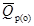
= 0,92KпучIнз(о)f(P). (52)
После этого переходят к определению величины расхода капиллярной воды в талом грунте, которая может поступить к границе промерзания. При всех типах увлажнения рабочего слоя земляного полотна нужно прогнозировать величину расхода капиллярно-подвешенной воды, а при 3-м типе увлажнения также и величину расхода собственно капиллярной воды. В последнем случае в качестве расчетной следует принимать наибольшее из двух полученных значений расходов капиллярной воды на границе промерзания.
Для определения указанных значений расходов воды следует предварительно вычислить по формулам (32) и (33) значения показателей капиллярных свойств грунта при температуре 0 °С. Затем нужно вычислить по формуле (4) величину полной влагоемкости грунта и величину его капиллярной влагоемкости согласно п. 2.2 настоящего Пособия. После этого нужно установить искомые значения расхода капиллярной воды.
Среднее значение расхода капиллярно-подвешенной воды Qр(A, z), м3/с, которая может поступить к границе промерзания, нужно вычислять для всех слоев грунта в пределах зоны промерзания:
При Wо > (3Wкв + Wопт)/4
При (3Wкв + Wопт)/4 ≥ Wо > (Wкв + Wопт)/2
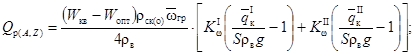
При (Wкв + Wопт)/2 ≥ Wо > (Wкв + 3Wопт)/4
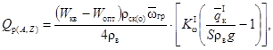
где
Wо -
начальная влажность грунта под границей промерзания, доли единицы; ρск(о)
- начальная плотность скелета грунта под границей промерзания, кг/м3;
S - среднее расстояние, на которое перемещается
капиллярно-подвешенная вода, м; 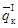 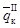 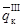
При определении расхода капиллярно-подвешенной воды в морозозащитном слое, в рабочем слое земляного полотна и в основании насыпи или выемки следует принимать величину S, равную половине толщины промерзшего слоя грунта, с влажностью более оптимальной.
Величину Wо допускается принимать равной среднему значению влажности в слое грунта:
при расчете по формуле (53) -
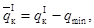 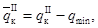
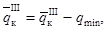
при расчете по формуле (54) -
при расчете по формуле (55) -
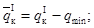
При определении величины расхода капиллярно-подвешенной воды в грунте рабочего слоя нужно включать в расчет значения qIк, qIIк, qIIIк, qIVк, KIω, KIIω, KIIIω, KIVω соответствующие этому слою. То же и для других слоев грунта, для которых определяют величину расхода Qр(A, z).
При ≤ Sρвg алгебраическая сумма величин в круглых скобках в формулах (53) - (55) принимается равной нулю. То же при ≤ Sρвg и ≤ Sρвg.
Среднее значение расхода собственно капиллярной воды Qр(A, z), м3/с, которая может поступить к границе промерзания, нужно вычислять по формуле (56) для всех слоев грунта в пределах зоны промерзания.
При определении величины Qр(A, z) в первом над горизонтом грунтовых вод или верховодки слоев грунта значения UI, UII, UIII и UIV, входящие в формулу (56), нужно принимать равными нулю.
При определении величины Qр(A, z) во втором над горизонтом грунтовых вод или верховодки слое грунта значения UI, UII, UIII, UIV следует определять по формулам (57) - (60). В этих формулах значения коэффициентов просачивания воды KIω, KIIω, KIIIω, KIVω относятся ко второму слою грунта, а величины KIω(1), KIIω(1), KIIIω(1), KIVω(1) - к первому слою грунта над горизонтом грунтовых вод или верховодки. Значения движущих сил менисков воды qIк, qIIк, qIIIк, qIVк, которые приведены в формуле (56), относятся ко второму слою грунта над горизонтом грунтовых вод или верховодки.
При определении величины Qр(A, z) в третьем и вышележащих слоях грунта над горизонтом грунтовых вод или верховодки значения UI, UII, UIII, UIV следует устанавливать по формуле (31).
Величина S в формуле (56) равна расстоянию от горизонта грунтовых вод или верховодки до середины промерзшей части слоя грунта, в котором устанавливают значение Qр(A, z):
(58)
(59)
где ΔSi - толщина первого слоя грунта над горизонтом грунтовых вод или верховодки, м.
В зависимости от начальной влажности грунта ряд значений в формуле (56) принимают равным нулю:
При (3Wкв + Wопт)/4 ≥ Wо > (Wкв + Wопт)/2
При (Wкв + Wопт)/2 ≥ Wо > (Wкв + 3Wопт)/4
При (Wкв + 3Wопт)/4 ≥ Wо > Wопт
Затем определяют влажность грунта W'о (доли единицы) под границей промерзания после оттока воды из талого грунта в мерзлый слой. Величина W'о ≥ Wопт:
Усадку грунта при промерзании определяют по формулам:
hус(м) = 102(Zпр(i) - Zпр(i-1))еусад, (63)
где еусад - относительная величина усадки грунта при промерзании, доли единицы; hус(м) - величина усадки грунта в пределах мерзлого слоя земляного полотна, см; аусад - коэффициент линейной усадки грунта, безразмерная величина; (Zпр(i) - Zпр(i-1)) - толщина мерзлого слоя грунта, м.
При начальной плотности грунтов не более максимальной величины по методу стандартного уплотнения можно использовать следующие значения коэффициента линейной усадки: для пылеватого песка и легкой супеси - 0,1; супеси пылеватой и тяжелой пылеватой - 0,2; суглинков легких и легких пылеватых - 0,3; суглинков тяжелых и тяжелых пылеватых и глин - 0,5.
При начальной плотности грунтов более максимальной величины по методу стандартного уплотнения можно не учитывать их усадку.
Затем нужно установить плотность скелета грунта ρ'ск(о), кг/м3, под границей промерзания после оттока воды из талого грунта в мерзлый слой по формуле
ρ'ск(о) = ρск(о)/(1 - еусад). (64)
Величина ρск(о) ≤ ρск(max). При ρск(о) > ρск(max) можно принять ρ'ск(о) = ρск(о).
Вычисляют значение критической влажности грунта Wкр, доли единицы, при которой воздухоемкость мерзлого грунта равна нулю:
Определяют среднее за период промерзания значение расхода пленочной воды , м3/с, поступающей из талого грунта в мерзлый слой:
при W'о > Wопт
при W'о = Wопт
При этом величина расхода по формуле (67) не может быть более значения, вычисленного по формуле (66). При промерзании слоев грунта, расположенных ниже горизонта грунтовых вод или горизонта верховодки, .
Затем нужно определить влажность грунта в мерзлом слое земляного полотна Wм, доли единицы:
После этого нужно рассчитать величину пучения грунта hпуч(о), см, за счет миграционного льдонакопления.
при Wопт < Wм < Wкр
где Zпр(i) - Zпр(i-1) - толщина мерзлого слоя грунта, для которого определяют величину пучения, м.
При этом величина пучения по формуле (69) не может быть больше значения:
При Wопт < Wм ≥ Wкр
Для слоя грунта с влажностью Wм = Wопт величина пучения равна нулю. Затем надо определить величину пучения грунта hпуч, см, по формуле
hпуч = hпуч(о) - hус(м) - hус(т), (72)
где hус(т) - величина усадки грунта в зимний период в пределах талого слоя земляного полотна, см.
При промерзании многослойной грунтовой толщи величины hпуч(о) и hус(м) определяют для каждого слоя (песчаного грунта морозозащитного слоя, глинистого грунта рабочего слоя и основания насыпи или выемки) и суммируют. Величина усадки грунта в зимний период в пределах талого слоя земляного полотна сравнительно невелика и ею можно пренебречь в запас прочности земляного полотна. Далее надо установить плотность грунта в конце зимы:
Kу(з) = Kу(ос)/(1 + епуч), (73)
где Kу(з) - коэффициент уплотнения после пучения грунта зимой; Kу(ос) - коэффициент уплотнения грунта осенью; епуч - относительная величина пучения грунта.
Величина епуч, входящая в формулу (73), равна отношению
hпуч/(Zпр(i) - Zпр(i-1)).
6.3. Плотность грунтов весной после оттаивания земляного полотна рассчитывают в предлагаемой последовательности.
Вначале нужно установить по графику рис. 12 минимальное значение коэффициента уплотнения грунта весной, который можно ожидать при многократном промерзании-оттаивании в условиях, когда не происходит усадки грунта в теплый период времени. Эту величину определяют в зависимости от плотности грунта в момент постройки дороги и давления на рассматриваемый слой земляного полотна от веса вышележащего грунта и дорожной одежды.
Затем по графику рис. 13 устанавливают осадку грунта hосад, см, при известных значениях коэффициента уплотнения грунта перед промерзанием, минимальном коэффициенте уплотнения после осадки и пучения грунта.
Рис. 12. Графики для определения минимального значения коэффициента уплотнения грунта после осадки
а - мелкий песок; б - пылеватый песок; в - супесь; г - легкий суглинок; д - тяжелый суглинок; г - глина
Рис. 13. График для определения осадки грунта в расчетном году
Далее вычисляют коэффициент уплотнения грунта после осадки весной Kу(в), безразмерная величина
Kу(в) = Kу(з)/(1 - еосад), (74)
где еосад - относительная величина осадки грунта.
Величина еосад, входящая в формулу (74), равна отношению
hосад/(Zпр(i) - Zпр(i-1) + hпуч).
6.4. Плотность грунтов в летний период рассчитывают в следующем порядке.
Определяют величину относительной усадки грунтов в летний период:
где Wл - влажность грунта в летний период, доли единицы; Wп.в - полная влагоемкость грунта при плотности грунта после осадки весной, доли единицы.
При 1-м и 2-м типах увлажнения рабочего слоя (см. прил. 1) Wл = Wопт; при 3-м типе влажность в летний период следует устанавливать по эпюре влажности (см. п. 4.4). При ориентировочных расчетах можно использовать значения коэффициентов линейной усадки грунта, приведенные в п. 6.2 настоящего Пособия.
Затем вычисляют значение коэффициента уплотнения после усадки грунта летом (Kу(л) - безразмерная величина):
Kу(л) = Kу(в)/(1 - еусад). (76)
Величина Kу(л) ≤ 1. При Kу(в) > 1 можно принять Kу(л) = Kу(в).
6.5. Для решения вопросов по обеспечению прочности и морозоустойчивости дорожной одежды необходимо знать минимальное значение плотности, максимальное значение влажности и максимальную величину пучения грунта в период эксплуатации дороги между капитальными ремонтами дорожной одежды (см. разд. 1 настоящего Пособия).
Для определения указанных величин следует установить возможность разуплотнения грунтов, при котором не происходит восстановления первоначальной плотности в процессе эксплуатации дороги. Такое явление имеет место, когда величина коэффициента уплотнения грунта в летний период, вычисленная по формуле (76), менее плотности грунта при строительстве дороги. В этом случае необходимо повторить весь расчет по разд. 2 - 6 при плотности, вычисленной по формуле (76). При этом набухание грунта осенью можно не учитывать, так как оно незначительно при влажности летом, равной или более оптимальной. При получении того же значения коэффициента уплотнения грунта в летний период, что и ранее, расчет заканчивают.
При Wм > Wкр расчетное среднее значение влажности грунта в рабочем слое земляного полотна Wрасч = Wм, где Wм - влажность грунта в мерзлом слое по формуле (68).
При Wм ≤ Wкр значение Wрасч определяют по данным о влажности грунта в конце зимы и притоке воды в весенний период от атмосферных осадков, выпадающих на поверхность проезжей части и обочин, и от поверхностных и грунтовых вод. Значение максимальной влажности грунта при Wм ≤ Wкр можно принимать (с запасом, равным Wрасч = Wкв) при коэффициенте уплотнения грунта по формуле (73).
При Wм > Wкр минимальное значение коэффициента уплотнения грунта весной расчетного года определяют по формуле
(77)
при Wм ≤ Wкр Kу(расч) = Kу(з), где Kу(з) - коэффициент уплотнения грунта в конце зимы по формуле (73).
7. ПРОЕКТИРОВАНИЕ МОРОЗОЗАЩИТНЫХ, ДРЕНИРУЮЩИХ И ТЕПЛОИЗОЛИРУЮЩИХ СЛОЕВ
7.1. Толщину морозозащитного слоя из некондиционных песков проектируют так, чтобы обеспечить морозоустойчивость дорожной одежды благодаря замене глинистых грунтов менее пучинистыми некондиционными песками. Толщина морозозащитного слоя должна быть также достаточной, чтобы обеспечить размещение поступающей в конструкцию воды без снижения прочности дорожной одежды при условии работы этого слоя по принципу поглощения.
Для устройства морозозащитного слоя можно применять некондиционные пески, которые удовлетворяют трем основным требованиям. Во-первых, коэффициент пучения песка должен быть таким, чтобы пучение покрытия не превышало допускаемой величины. При этом чем толще морозозащитный слой, тем может быть больше коэффициент пучения песка. Во-вторых, расчетные значения угла внутреннего трения и удельного сцепления в песке должны быть такими, чтобы не происходило сдвига в этом песке под действием транспортной нагрузки. Указанные прочностные характеристики нужно устанавливать с учетом длительного размещения в порах песка морозозащитного слоя свободной воды. В-третьих, коэффициент фильтрации песка должен быть таким, чтобы не происходило образования слоя воды под дорожной одеждой, а атмосферные осадки, поступающие через покрытие проезжей части в морозозащитный слой, полностью впитывались в поры песка этого слоя.
7.2. При устройстве земляного полотна морозозащитный слой в насыпи располагают на всю ширину земляного полотна для того, чтобы обеспечить условия для испарения воды через откосы.
В случае расположения морозозащитного слоя в зоне капиллярной каймы над горизонтом грунтовых вод в течение всего года (в том числе и в летний период) практически исключается отток воды из этого слоя в нижележащий грунт. При таких условиях морозозащитный слой может быть на длительное время полностью заполнен водой в результате притока атмосферных осадков и поступления влаги из нижележащего грунта. Для того чтобы этого не произошло, следует предусматривать устройство дренирующей прослойки из нетканых синтетических материалов для отвода свободной воды из морозозащитного слоя. Такую прослойку укладывают под морозозащитный слой на всю ширину земляного полотна с выпуском полотнищ на откосы насыпи.
В выемках морозозащитный слой устраивают на ширину проезжей части с трубчатыми дренами под краевыми полосами при 1-м и 2-м типах увлажнения земляного полотна; при 3-м типе морозозащитный слой нужно располагать на всю ширину земляного полотна между подкюветными дренажами. В западных районах (западнее линии Нарва - Псков - Смоленск - Орел - Воронеж) II - III дорожно-климатических зон нужно предусматривать устройство дренирующей прослойки из нетканых синтетических материалов для предохранения морозозащитного слоя от притока воды сверху в период, зимних оттепелей. В насыпи такую прослойку располагают над морозозащитным слоем на всю ширину земляного полотна, в выемке - между дренами.
7.3. В зависимости от источников поступления воды в морозозащитный слой в осенне-зимний период можно выделить три схемы расчета пучения песков этого слоя. Первая схема применяется при увлажнении песков морозозащитного слоя только атмосферными осадками, вторая - при поступлении в этот слой поверхностных и грунтовых вод и верховодки, третья - при горизонте грунтовых вод и верховодки выше отметки низа морозозащитного слоя.
Первая схема расчета пучения грунта соответствует 1-му типу увлажнения рабочего слоя земляного полотна (см. прил. 1). Эта же схема расчета применяется при 2-м и 3-м типах увлажнения рабочего слоя земляного полотна при условии, что расстояние (по вертикали) от горизонта поверхностных или грунтовых вод или верховодки до низа морозозащитного слоя больше величины капиллярного поднятия воды в песке.
При расчете пучения песка по первой схеме вначале устанавливают максимальное количество воды, которое может просочиться из морозозащитного слоя в нижележащий глинистый грунт. При устройстве морозозащитного слоя на всю ширину земляного полотна расчет проводят по формуле
q'отт(max) = (bq'атм(пр.ч) + 2aq'атм(об) - 2SмзH'исп(отк))/lмз, (78)
где q'отт(max) - максимально возможная величина оттока воды из морозозащитного слоя в нижележащий глинистый грунт (средневзвешенное значение по ширине земляного полотна) в осенний период влагонакопления и часть зимы до промерзания песка упомянутого слоя, м3 на 1 м2; b - ширина проезжей части, м; a - ширина обочины, м; lмз - ширина земляного полотна под морозозащитным слоем, м; H'исп(отк) - испарение воды из морозозащитного слоя через откосы земляного полотна в осенний период влагонакопления и часть зимы до устойчивого промерзания грунта, м3 на 1 м2; Sмз - протяженность зоны испарения воды из морозозащитного слоя по высоте откоса насыпи, м.
Величину Hисп(отк) определяют по формулам (23) и (24) за последний осенний месяц. При этом в расчет по формуле (23) дополнительно вводят коэффициент 1,3×10-3 для учета испарения воды до и после расчетного месяца.
Величина Sмз равна , где hк - высота капиллярного поднятия воды в песке, м, но не более толщины морозозащитного слоя; m - заложение откосов насыпи. Величину hк можно принимать равной qср(п)/(ρвg), где qср(п) - среднеарифметическое значение удельных движущих сил менисков воды в песке морозозащитного слоя по табл. 7.
Затем определяют по номограмме (см. рис. 6) или по формулам (28) - (33) глубины SI; SII; SIII; SIV, на которые просачивается вода соответственно в I, II, III и IV группах капилляров глинистого грунта от низа морозозащитного слоя на различные моменты времени, но не более чем за срок, равный 30 сут, плюс период запаздывания промерзания некондиционных песков [формула (45)].
В расчет вводят величины , KIω, , KIIω, , KIIIω, , KIVω, где = qIк - qср(п); = qIIк - qср(п); = qIIIк - qср(п); = qIVк - qср(п). В свою очередь qIк, qIIк, qIIIк, qIVк, KIω, KIIω, KIIIω, KIVω - характеристики глинистого грунта под морозозащитным слоем.
По данным таких расчетов устанавливают по формуле (34) объемы воды Vω, которые поступают в грунт на различные моменты времени.
За искомые глубины SI, SII, SIII, SIV принимают глубины, полученные на момент времени, соответствующий началу промерзания морозозащитного (дренирующего) слоя при условии, что объем воды, поступившей в грунт Vω, менее величины q'отт(max). В противном случае за искомые принимают глубины, при которых имеет место равенство величин Vω = q'отт(max).
После этого устанавливают величину оттока воды из морозозащитного слоя в нижележащий глинистый грунт в осенний период влагонакопления и часть зимы до промерзания песка упомянутого слоя q'отт, м3 на 1 м2. При Vω(max) < qотт(max) имеем q'отт = Vω(max); при Vω(max) ≥ q'отт(max) имеем q'отт = q'отт(max) (Vω(max) - объем воды, который может поступить в грунт за срок, равный 30 сут, плюс период запаздывания промерзания морозозащитного слоя). При 2-м и 3-м типах увлажнения рабочего слоя земляного полотна следует принимать величину q'отт = 0, после чего задаются толщиной морозозащитного слоя не менее 0,2 м и определяют среднюю по высоте влажность песка W'мз, доли единицы, перед его промерзанием в расчетный период. Расчет проводят по формуле
где ρск(max) - максимальная плотность скелета песка при оптимальной влажности, установленная по методу стандартного уплотнения, кг/м3; Kу(о) - нормативный коэффициент уплотнения песка, безразмерная величина; hмз - толщина морозозащитного слоя из песка, м.
Для морозозащитного слоя, устраиваемого только в пределах проезжей части с трубчатыми дренами под краевыми полосами, расчет по формуле (79) проводят при а = 0 и Sмз = 0. Затем нужно определить величину пучения песка морозозащитного слоя. Расчет проводят применительно к четырем типам эпюр влажности песка перед промерзанием морозозащитного слоя (рис. 14).
Эпюра влажности песка типа «а» применяется при w'мз < wкв. Эпюра состоит из двух участков по глубине. На первом (верхнем) участке влажность песка равна оптимальной, на втором - капиллярной влагоемкости.
Толщину слоя песка Δhмз(кв), м, с влажностью, равной капиллярной влагоемкости, на втором участке определяют по формуле
Эпюра влажности песка типа «б» применяется при W'мз = Wк.в. В этом случае влажность песка равна капиллярной влагоемкости по всей высоте морозозащитного слоя.
Рис. 14. Типы эпюр влажности песка перед промерзанием морозозащитного слоя
а - от Wопт до Wкв; б - Wкв; в - от Wкв до Wпв; г - от Wопт до Wпв
Эпюра влажности песка типа «в» применяется при W'мз > Wк.в и hмз ≤ qср(п)/(ρвg). Эпюра состоит из двух участков по глубине. На первом (верхнем) участке влажность песка равна капиллярной влагоемкости, на втором - полной влагоемкости грунта.
Толщину слоя песка с влажностью, равной полной влагоемкости, Δhмз(п.в), м, определяют по формуле
(81)
Эпюра влажности песка типа «г» применяется при W'мз > Wк.в и qср(п)/(ρвg) < (hмз - Δhмз(п.в)), где Δhмз(п.в) - величина, определяемая по формуле (82). Эпюра состоит из трех участков по глубине. На первом (верхнем) участке влажность песка равна оптимальной, на втором - капиллярной влагоемкости, на третьем - полной влагоемкости грунта.
Толщина слоя на втором участке равна qср(п)/(ρвg). Толщину слоя на третьем участке определяют по формуле
При W'мз > Wк.в и qср(п)/(ρвg) ≥ (hмз - Δhмз(п.в)) в расчет следует принимать эпюру типа «в».
Величину пучения песка морозозащитного слоя устанавливают по зависимостям, приведенным в разд. 6 настоящего Пособия. Расчет проводится для каждого участка эпюры влажности песка. При получении эпюр типа «а» и «б» расчет пучения слоя Δhмз(к.в) нужно проводить, принимая значения Qр(A, Z) по формулам (53) - (55) при S = Δhмз(к.в)/2. При получении эпюр типа «в» и «г» расчет пучения слоя Δhмз(к.в) нужно проводить, принимая значение Qр(A, Z) по формуле (56) при S = Δhмз(к.в)/2. Расчет пучения слоя Δhмз(п.в) проводят при .
После проведения указанных расчетов устанавливают суммарную величину пучения песка морозозащитного слоя и нижележащих глинистых грунтов. При получении величины не более допустимой по формулам (1) и (2) принимают к дальнейшему рассмотрению конструкцию морозозащитного слоя заданной толщины. В противном случае увеличивают толщину морозозащитного слоя и повторяют расчет.
Аналогичным образом определяют толщину морозозащитного слоя по второй расчетной схеме. Отличие есть только в расчете влажности W'мз по формуле (79). В эту формулу вводится вместо qотт величина притока воды q'пр от грунтовых вод или верховодки.
Максимально возможную величину притока воды в морозозащитный слой от грунтовых вод или верховодки в осенний период влагонакопления и часть зимы до промерзания всего слоя песка q'пр, м3 на 1 м2, устанавливают по формуле
где Δhгр.в - расстояние (по вертикали) от низа морозозащитного слоя до расчетного горизонта грунтовых вод или верховодки в осенний период, м; ρск - плотность скелета песка перед промерзанием, кг/м3.
Аналогичным образом определяют толщину морозозащитного слоя по третьей расчетной схеме. Отличие только в определении эпюры влажности песка перед промерзанием. В качестве расчетной принимается эпюра «в» или «г» (см. рис. 14). При этом толщина слоя песка Δhмз(п.в) определяется положением горизонта грунтовых вод или верховодки, а величина Δhмз(к.в) = qср(п)/(ρвg).
7.4. Наряду с расчетом толщины морозозащитного слоя по величине пучения песков следует проверить, достаточен ли объем незаполненных пор этого слоя для размещения поступающей в конструкцию воды без снижения прочности дорожной одежды. Это условие обеспечивается при соблюдении неравенства
hмз ≥ hнас + hзап, (84)
где hнас - толщина слоя песка, полностью насыщенного водой, м; hзап - запасная (дополнительная) толщина слоя, при которой сдвиг в песке под действием транспортной нагрузки невозможен, но не менее 0,10 - 0,12 м для крупных песков, 0,14 - 0,15 м для песков средней крупности и 0,18 - 0,2 м для мелких песков.
Для обеспечения условия (84) нужно, чтобы среднее значение влажности песка морозозащитного слоя не превышало величины:
Wмз(доп) = [Wк.вhзап + Wп.в(hмз - hзап)]/hмз. (85)
Наибольшее значение влажности песка следует ожидать весной, когда происходит осадка оттаявших глинистых грунтов с отжатием воды в морозозащитный слой. К этому добавляется отжатие воды из переувлажнения грунтов под действием динамической нагрузки, имеет место и приток атмосферных осадков, выпадающих на поверхность дороги.
Указанное значение влажности песка морозозащитного слоя, устраиваемого на всю ширину земляного полотна, следует определять по формуле
где W"'мз - средняя влажность песка морозозащитного слоя после оттаивания земляного полотна весной, доли единицы; q'"атм(пр.ч) - приток воды в морозозащитный слой от атмосферных осадков, выпадающих на поверхность проезжей части в весенний период, м3 на 1 м2; q'"атм(об) - приток воды в морозозащитный слой от атмосферных осадков, выпадающих на поверхность обочин, и от стока воды с проезжей части на обочину в весенний период, м3 на 1 м2; q'"отж.(пр.ч) - объем воды, поступающей в морозозащитный слой из лежащих под ним в пределах проезжей части грунтов при их осадке после оттаивания, м3 на 1 м2; q'"отж.(об) - объем воды, поступающей в морозозащитный слой из лежащих под ним в пределах обочин грунтов при их осадке после оттаивания, м3 на 1 м2; q'"отж.(р) - объем воды, поступающей в морозозащитный слой под действием динамической нагрузки от автомобилей, м3 на 1 м2; H'"исп(отк) - испарение воды из морозозащитного слоя через откосы земляного полотна в весенний период, м3 на 1 м2; W"мз - средняя влажность песка морозозащитного слоя в конце зимы, доли единицы; Kу(в), ρск(mах) - величины, характеризующие песок морозозащитного слоя.
Величины q'"атм(пр.ч) и q'"атм(об) определяют соответственно по формулам (5) и (6) при апр = 1, величину H'"исп(отк) - по формулам (23) - (25). В расчет включают метеорологические данные за первый весенний месяц расчетного года (см. табл. 3).
При влажности грунтов под морозозащитным слоем Wм > Wкр следует учитывать отжатие воды из этих грунтов при их осадке после оттаивания. Величину отжатия воды в морозозащитный слой нужно определять из грунта, который оттаивает сверху. Можно принимать, что отжатие воды происходит из всего промерзшего слоя грунта. В этом случае расчет величины отжатия воды из грунта рабочего слоя земляного полотна в насыпи высотой до 1,5 м или в выемке, а также из грунта в основании насыпи или выемки q'"отж.(пр.ч) следует определять по формуле
q'"отж.(пр.ч) = [ρск(max), нас(Kу(з)насWм(нас) - Kу(в)насWв(нас))×(hнас - hод - hмз) +
+ ρск(max), осн(Kу(з)оснWм(осн) - Kу(в)оснWв(осн))(hпр + hод - hнас)]/ρв, (87)
где ρск(max), нас, ρск(max), осн - максимальная плотность скелета грунта по методу стандартного уплотнения соответственно рабочего слоя земляного полотна и основания насыпи или выемки, кг/м3; Kу(з)нас, Kу(з)осн - коэффициент уплотнения грунта в конце зимы соответственно рабочего слоя земляного полотна и основания насыпи или выемки, безразмерная величина; Kу(в)нас, Kу(в)осн - коэффициент уплотнения грунта после его осадки в весенний период соответственно рабочего слоя земляного полотна и основания насыпи или выемки, безразмерная величина; Wм(нас), wм(осн) - влажность грунта в конце зимы соответственно рабочего слоя земляного полотна и основания насыпи или выемки, доли единицы; Wв(нас), wв(осн) - влажность грунта после его осадки в весенний период соответственно рабочего слоя земляного полотна и основания насыпи или выемки, доли единицы [Wв = Wпв, при плотности по формуле (74)].
Формула (87) действительна при hпр > hнас - hод. При hпр ≤ hнас - hод нужно определять величину отжатия воды только из грунта насыпи до глубины промерзания. При расчете величины отжатия воды из грунтов земляного полотна, проходящего в насыпи высотой более 1,5 м, нужно учитывать наличие слоев грунта разной плотности и влажности.
Величину q'"отж(об) следует определять аналогичным путем. Допускается принимать q'"отж(об) = q'"отж(пр.ч).
Значения плотности и влажности грунтов рабочего слоя земляного полотна и основания насыпи или выемки, входящие в формулу (87), следует определять согласно разд. 6 настоящего Пособия.
Для установления величины q'"отж(р) нужно предварительно вычислить значение удельной нагрузки от расчетного автомобиля на поверхность глинистого грунта под морозозащитным слоем σно, МПа:
где zэкв - толщина эквивалентного слоя грунта, см; hод - толщина дорожной одежды (с морозозащитным слоем), см; Eдо - средний модуль упругости дорожной одежды (с морозозащитным слоем), МПа; Eгр - модуль упругости грунта под морозозащитным слоем, МПа; P - среднее расчетное удельное давление колеса на покрытие, МПа; D - расчетный диаметр следа колеса автомобиля, см.
Далее следует вычислить толщину слоя грунта zотж, см, расположенного под морозозащитным слоем, из которого будет происходить отжатие воды под действием динамической нагрузки от автомобилей
где σотж - минимальное значение напряжений, при которых не будет отжатия воды, МПа.
Для супесчаных грунтов следует принимать σотж = 0,01 МПа, для суглинков и глин - σотж = 0,012 МПа.
Затем определяют по графикам на рис. 15 искомую величину q"'отж.(р) в зависимости от разновидности грунта и его влажности (относительного значения Wв/WL) в весенний период в слое грунта, из которого будет происходить отжатие воды, а также и от величины нагрузки σно от автомобилей на этот слой.
При устройстве морозозащитного слоя в пределах проезжей части расчет влажности песка W"'мз проводят по формуле (86) при а = 0 и H"'исп(отк) = 0. При такой конструкции морозозащитного слоя нужно устраивать трубчатые дрены под краевыми полосами. В этом случае в расчет дополнительно вводят величину оттока воды из морозозащитного слоя по трубчатым дренам, которую следует определять по формуле (105).
Затем нужно установить эпюру влажности песка морозозащитного слоя в весенний период расчетного года (см. рис. 14), вводя в расчет по формулам (80) - (82) величину W"'мз.
7.5. Морозозащитный слой из некондиционных песков должен помимо своего прямого назначения обеспечивать прочность дорожной одежды. В расчет на прочность нужно включать значения прочностных и деформационных характеристик песка, установленных по данным его испытаний в приборе трехосного сжатия при статическом режиме нагружения и в условиях повторного воздействия нагрузки согласно прил. 6 настоящего Пособия. Количество приложений нагрузки нужно принимать равным ожидаемому суммарному количеству проходов расчетных автомобилей по одной полосе проезжей части в расчетный период.
Рис. 15. Графики для определения объема воды, отжимаемой из супеси (а), суглинков и глин (б) под действием динамической нагрузки от автомобилей
1 - удельная нагрузка от расчетного автомобиля на поверхность грунта под морозозащитным слоем - 0,06 МПа; 2 - то же, 0,04 МПа; 3 - то же, 0,02 МПа
Образцы песка испытывают при влажности и плотности, соответствующих состоянию грунта в этот период. В расчет следует вводить коэффициент уплотнения песка по формуле (74) и значения влажности песка по эпюре влажности, установленной для морозозащитного слоя в весенний период расчетного года (см. рис. 14).
Допускается включать в расчет на прочность дорожной одежды значения прочностных и деформационных характеристик песка по табл. 14 и формуле
φN = φ(1 - αφlgN), (91)
где φN - расчетная величина угла внутреннего трения песчаного грунта в условиях динамического воздействия нагрузки от транспорта; φ - статическая расчетная величина угла внутреннего трения песчаного грунта (табл. 14); αφ - интенсивность снижения угла внутреннего трения песчаного грунта; N - суммарное количество проходов автомобилей за расчетный период.
Величина αφ зависит от влажности и коэффициента фильтрации грунта Kф, м/сут, и определяется по формулам:
для песчаных грунтов при их полной влагоемкости
αφп.в = 0,0343 Kф-0,11; (92)
для песчаных грунтов при оптимальной влажности
αφопт = 0,018.
Значения αφ при капиллярной влагоемкости грунта вычисляют как среднеарифметическое между соответствующими величинами αφ при оптимальной влажности грунта и его полной влагоемкости.
Таблица 14
|
Содержание пылеватых и глинистых частиц, % |
φ, град |
C, МПа |
E, МПа |
φN, град |
CN, МПа |
EN, МПа |
|
|
Крупный |
0 |
35 |
0,005 |
125 |
32 30 |
0,004 0,003 |
140 |
|
5 |
35 |
0,006 |
125 |
32 29 |
0,005 0,003 |
140 |
|
|
Средней крупности |
0 |
33 |
0,004 |
110 |
30 27 |
0,003 0,002 |
130 |
|
5 |
33 |
0,005 |
110 |
30 27 |
0,004 0,002 |
130 |
|
|
Мелкий |
0 |
32 |
0,003 |
100 |
29 26 |
0,003 0,002 |
120 |
|
5 |
32 |
0,005 0,004 |
100 |
29 25 |
0,004 0,003 |
120 |
|
|
8 |
32 31 |
0,007 0,006 |
100 |
29 24 |
0,005 0,002 |
120 |
|
|
Примечания: 1. Над чертой приведены значения характеристик грунта при оптимальной влажности, под чертой - при полной влагоемкости. 2. Значения характеристик грунта при капиллярной влагоемкости вычисляют как среднеарифметическое между соответствующими величинами при оптимальной влажности и полной влагоемкости. 3. Значения динамических характеристик получены при 100 тыс. приложениях нагрузки. |
|||||||
Суммарное количество проходов автомобилей N за расчетный период можно определять с достаточной точностью по формуле
N = NпрtωTк.р, (93)
где Nпр - перспективная интенсивность движения расчетных автомобилей на проектируемой автомобильной дороге, авт/сут; tω - продолжительность расчетного состояния песка морозозащитного слоя, сут; Tк.р - срок службы дорожной одежды между капитальными ремонтами, годы.
Величина tω равна 60 и 50 сут соответственно во II и III дорожно-климатических зонах. При залегании грунтовых вод в летний период на глубине менее высоты капиллярного поднятия воды в песке морозозащитного слоя следует принимать величину tω равной продолжительности теплого периода года (в сутках) с начала весны до устойчивого промерзания земляного полотна по среднемноголетним данным.
Значения прочностных и деформационных характеристик песка под дорожной одеждой не могут превышать величин, которые будет иметь грунт при капиллярной влагоемкости в условиях повторного воздействия нагрузки в период выпадения атмосферных осадков. В этом случае нужно принимать величину tω, равной суммарной продолжительности выпадения осадков (в сутках) с начала весны до устойчивого промерзания земляного полотна по среднемноголетним данным.
7.6. На участках дорог, на которых обеспечена морозоустойчивость дорожной одежды, но требуется отводить воду из нее и верхней части земляного полотна, нужно предусматривать устройство дренирующего слоя, который мог бы поглотить все количество воды, поступающей за расчетный период без снижения прочности дорожной одежды.
Проектирование дренирующего слоя по принципу поглощения следует проводить так же, как и морозозащитного слоя из некондиционных песков. Разница только в том, что для устройства дренирующего слоя нужно применять зернистые материалы с коэффициентом фильтрации не менее 0,5 м/сут, а для морозозащитного слоя - 0,2 м/сут.
Следует учитывать, что в процессе строительства и эксплуатации дороги возможно взаимопроникание глинистых грунтов земляного полотна и песков морозозащитного и дренирующих слоев. В связи с этим необходимо предусматривать утолщение морозозащитного и дренирующего слоев на 5 - 15 см в зависимости от влажности и плотности глинистых грунтов и зернового состава грунта (меньшее значение относится к мелкозернистым пескам).
При укладке между песчаными и глинистыми грунтами прослоек из нетканых синтетических материалов заиления песков не происходит и не требуется дополнительно увеличивать толщину морозозащитного и дренирующего слоев.
При устройстве морозозащитных и дренирующих слоев из некондиционных песков контроль качества грунта следует делать в карьере путем отбора не менее 10 проб из каждых 500 м3 песчаного грунта и проводить их испытания с определением содержания пыли, глины и величины коэффициента фильтрации по ГОСТ 25584-83.
Допускается устанавливать величину коэффициента фильтрации Kф, м/сут, расчетным путем или по графику на рис. 16 в зависимости от гранулометрического состава песчаного грунта:
Kф = Kф1(N1/N)4/3, (94)
где Kф1 - коэффициент фильтрации песка - эталона, т.е. песка, в котором содержится N1 = 2 % массы частиц мельче 0,1 мм, м/сут; N - содержание частиц мельче 0,1 мм в данном песке, % массы.
Для определения величины Kф1 песок из карьера предварительно просеивают через сито с отверстиями 0,1 мм. В оставшуюся часть грунта добавляют 2 % по массе отсеянной части песка мельче 0,1 мм. По подготовленной таким образом пробе песчаного грунта определяют коэффициент фильтрации Kф1 на приборе ПКФ СоюздорНИИ при максимальной плотности, установленной методом стандартного уплотнения. При наличии в карьере песка с постоянным коэффициентом неоднородности, можно для остальных проб песчаного грунта данного карьера находить коэффициент фильтрации только в зависимости от содержания в нем частиц мельче 0,1 мм.
Указанный коэффициент неоднородности песчаного грунта нужно определять по формуле
K60/10 = D60/D10; (95)
где D60 и D10 - диаметры частиц, мм, мельче которых в песке содержится соответственно 60 и 10 % массы.
При ориентировочных расчетах можно использовать значения Kф1, приведенные в табл. 15.
Рис. 16. Зависимость коэффициента фильтрации воды от содержания в песке частиц мельче 0,1 мм и коэффициента его неоднородности
1, 2, 3, 4 - кривые зависимости при коэффициенте неоднородности песка 3, 5, 10 и более 10
Таблица 15
|
K60/10 |
Kф1, м/сут |
Группа песка-эталона |
K60/10 |
Kф1, м/сут |
|
|
1 |
< 3 |
40 |
3 |
5 - 10 |
10 |
|
2 |
3 - 5 |
20 |
4 |
> 10 |
5 |
7.7. Теплоизолирующие слои проектируют так, чтобы обеспечить морозоустойчивость дорожной одежды и ее работу в упругой стадии. С помощью теплоизоляции можно уменьшить глубину промерзания земляного полотна и тем самым ограничить пучение допустимыми пределами или полностью предотвратить промерзание подстилающего грунта, исключить возможность его морозного пучения. В свою очередь уменьшение или исключение морозного пучения ограничивает или полностью устраняет разуплотнение грунтов в процессе эксплуатации дороги. Снижение глубины промерзания уменьшает также неравномерность морозного пучения и приводит к большей стабильности ровности покрытия.
Для установления требуемой толщины теплоизолирующего слоя нужно провести расчет величины пучения всех слоев грунта в зоне промерзания под дорожной одеждой. Расчет следует проводить, согласно разд. 6 настоящего Пособия, при нескольких заданных значениях толщины теплоизолирующего слоя. В качестве искомой нужно принимать толщину теплоизолирующего слоя, при которой суммарная величина пучения грунтов не превышает допустимого значения по формулам (1) и (2).
В расчет на прочность дорожной одежды следует включать значения плотности и влажности грунтов рабочего слоя земляного полотна, установленные, согласно настоящему Пособию, при принятой толщине теплоизолирующего слоя.
Теплоизолирующий слой является нижним слоем основания дорожной одежды. При его проектировании следует учитывать, что ширина теплоизоляционного слоя должна быть больше ширины проезжей части на 0,5 - 1 м, чтобы изолировать последнюю от действия холода со стороны обочин.
Теплоизоляционные материалы изменяют температурный режим покрытия и могут вызвать гололедицу на проезжей части, поэтому место расположения теплоизоляционного слоя следует выбирать так, чтобы обеспечить идентичный режим дорожных одежд с теплоизолирующими слоями и без них. Теплоизолирующие слои из материалов с коэффициентом теплопроводности менее 0,05 Вт/(м×К) нужно располагать на глубине более 0,5 м от поверхности покрытия. В этом случае частота образования гололедицы на участке с теплоизолирующим слоем не превышает 10 % по сравнению с участком, имеющим традиционную конструкцию дорожной одежды.
При переходе к участку дороги без теплоизолирующего слоя нужно постепенно уменьшать толщину плит пенопласта на протяжении не менее 10 м для предотвращения перепада (ступеньки) поверхности покрытия. При отсутствии пенопласта разной толщины следует укладывать плиты в шахматном порядке с окнами без плит.
Теплоизоляционные материалы должны сохранять свойства под воздействием влаги, температуры и агрессивных вод, быть биостойкими, обладать технологичностью в работе и выдерживать нагрузки, возникающие при укладке и уплотнении вышележащих слоев дорожной одежды.
Для устройства теплоизолирующих слоев можно применять полистирольные пенопласты ПС-4-60, ПСБ-60, «Стайрофоум» и другие пенопласта, удовлетворяющие требованиям: предел прочности при 10 %-ном сжатии не менее 0,25 МПа, прочность при изгибе - не менее 0,50 МПа, водопоглощение по объему - не более 1,5 %, коэффициент теплопроводности - не более 0,05 Вт/(м×К).
Теплоизоляционные плиточные материалы (пенопласт и др.) следует укладывать с обеспечением равномерного опирания плит на поверхность земляного полотна. При необходимости нужно выравнивать поверхность земляного полотна песком. На участках дорог, где требуется отводить воду из дорожной одежды и верхней части земляного полотна, следует укладывать плиты на песчаный дренирующий слой или на дренирующую прослойку из нетканых синтетических материалов.
При двух- и трехъярусном теплоизолирующем слое швы нижележащего ряда плит нужно перекрывать вышележащими плитами. Плиты, находящиеся по краям теплоизолирующего слоя, следует закреплять кольями.
Первый над плитами слой дорожной одежды нужно отсыпать на толщину не менее 0,25 м в плотном теле способом «от себя».
8. ПРОЕКТИРОВАНИЕ ДРЕНИРУЮЩИХ КАПИЛЛЯРОПРЕРЫВАЮЩИХ И ГИДРОИЗОЛИРУЮЩИХ ПРОСЛОЕК
8.1. При разработке конструкций земляного полотна следует предусматривать варианты регулирования водно-теплового режима с применением дренирующих и капилляропрерывающих прослоек из геотекстиля и гидроизолирующих прослоек.
Дренирующая прослойка предназначена для отвода атмосферных осадков, которые могут просочиться через дорожную одежду, а также для отвода воды, отжимаемой из грунта при его осадке после оттаивания и под действием динамической нагрузки; капилляропрерывающая - для уменьшения поступления капиллярной воды в верхнюю часть земляного полотна от грунтовых вод, а гидроизолирующая - для изоляции грунта от всех видов влаги.
Дренирующую прослойку из геотекстиля укладывают над и под морозозащитным дренирующим слоем, а также под дорожной одеждой при отсутствии таких слоев.
Дренирующую прослойку поверху морозозащитного слоя нужно предусматривать при устройстве этого слоя из некондиционных песков в районах с частыми зимними оттепелями и при применении некондиционных песков с коэффициентом фильтрации менее 0,2 м/сут. Дренирующую прослойку поверху дренирующего слоя нужно предусматривать в случае работы такого слоя по принципу поглощения в районах с частыми зимними оттепелями.
Дренирующую прослойку понизу морозозащитного и дренирующего слоев нужно предусматривать при необходимости понижения толщины этих слоев из песчаных грунтов, устранения их заиления при производстве работ и в процессе эксплуатации дороги и уменьшения притока воды в глинистый грунт рабочего слоя земляного полотна.
Рис. 17. Конструкции земляного полотна с дренирующими, армирующими, капилляропрерывающими и гидроизолирующими прослойками
а - с совмещенной дренирующей и армирующей прослойкой; б - с капилляропрерывающей прослойкой; в - с дренирующей и гидроизолирующей прослойками; г - с гидроизолирующей прослойкой; д, е, ж - грунт в обойме; 1 - песок; 2 - трубчатый дренаж; 3 - глинистый грунт; 4 - нетканый синтетический материал; 5 - полиэтиленовая пленка или изол; 6 - материал типа колетанш
На тех участках дорог, где обеспечена морозоустойчивость дорожной одежды, но требуется отводить воду из нее и верхней части земляного полотна, нужно предусматривать разработку варианта устройства дренирующей прослойки из геотекстиля вместо дренирующего слоя из песка.
Дренирующую прослойку из геотекстиля следует укладывать на всю ширину земляного полотна с выпуском полотнищ на откосы насыпи или в дренаж (рис. 17, а).
Капилляропрерывающие и гидроизолирующие прослойки нужно предусматривать при необходимости снижения высоты насыпи, уменьшения толщины морозозащитного и дренирующего слоев, а также основания дорожной одежды.
В конструкциях с грунтом в обойме (рис. 17, д, е, ж) не нужно устраивать морозозащитный и дренирующий слои.
Капилляропрерывающую прослойку (рис. 17, б) следует устраивать на глубине не менее 1,2 м от верха покрытия при условии, что прослойка возвышается над расчетным уровнем грунтовых или поверхностных вод, а полотнища выводятся на откосы или в дренаж. Для большей надежности конструкции возвышение над уровнем грунтовых вод следует принимать не менее 0,2 м и прослойку укладывать с поперечным уклоном для отвода воды на откос или в дренаж.
При необходимости ограничить увлажнение земляного полотна атмосферными осадками и грунтовыми водами устраивают дренирующую и капилляропрерывающую прослойки. Вместо капилляропрерывающей можно устраивать гидроизолирующую прослойку.
Гидроизолирующую прослойку под дорожной одеждой на всю ширину земляного полотна (рис. 17, е) целесообразно устраивать на участках с обеспеченным поверхностным стоком и глубоким залеганием грунтовых вод в районах, где атмосферные осадки могут существенно влиять на влажность грунтов. Для отвода атмосферных осадков, которые могут просочиться через дорожную одежду, необходимо предусматривать устройство дренирующей прослойки на всю ширину земляного полотна, укладываемой на гидроизолирующую прослойку.
Конструкцию, показанную на рис. 17, г, применяют на участках дорог, проходящих в насыпи при близких грунтовых водах или наличии поверхностной воды. Гидроизолирующую прослойку располагают на глубине не менее 1,2 м от верха покрытия, но не ниже 0,2 м от поверхности земли. Если существуют два источника увлажнения (осадки и грунтовые или поверхностные воды), то гидроизолирующую прослойку устраивают на всю ширину земляного полотна под дорожной одеждой, так же как в конструкции на рис. 17, в, и на глубине не менее 1,2 м от верха покрытия (рис. 17, ж).
Конструкцию (рис. 17, д) устраивают в насыпи и в выемках с двумя источниками увлажнения при условии, что продольный уклон проезжей части для отвода воды из трубчатых дрен составляет не менее 5 %. Для отвода атмосферных осадков, которые могут просочиться через дорожную одежду, необходимо предусматривать устройство дренирующей прослойки на ширину проезжей части, укладываемой на гидроизолирующую прослойку.
Конструкцию (рис. 17, е) применяют на участках, проходящих в равнинной местности при подтоплении грунтов активного слоя поверхностными или грунтовыми водами.
8.2. Дренирующие прослойки нужно устраивать из нетканых синтетических материалов, способных фильтровать воду в поперечном направлении в плоскости холста. Коэффициент фильтрации таких материалов должен быть не ниже 20 м/сут с учетом заиления.
В качестве капилляропрерывателя следует применять нетканые синтетические материалы, которые способны в «сухом» состоянии прекращать движение капиллярной воды снизу вверх (см. прил. 5), а при заполнении прослойки водой обеспечивают выполнение требований неравенства (106). Такие материалы должны также обладать способностью фильтровать воду в поперечном направлении. Коэффициент их фильтрации должен быть не ниже 30 м/сут с учетом заиления.
Прослойки должны отвечать следующим требованиям:
выдерживать без повреждений нагрузки, возникающие при укладке и уплотнении вышележащих слоев грунта и дорожной одежды, а также при движении автомобилей по дороге;
противостоять воздействию неравномерного морозного пучения и осадки грунтов без разрывов и проколов, а также влаги и температуры без изменения указанных выше свойств;
сопротивляться разрушающему действию микроорганизмов и агрессивных вод;
быть технологичными.
На пучинистых участках автомобильных дорог следует применять материалы, деформативные свойства которых позволяют выдерживать неравномерное морознее пучение, т.е.
εпуч ≤ Kεεразр, (96)
где εпуч - относительное удлинение материалов прослойки при неравномерном морозном пучении, %; Kε - коэффициент, учитывающий циклическое воздействие пучения - осадки на допустимую величину относительного удлинения материала (K < 1); εразр - относительное удлинение материала при разрыве, %.
Величину εразр следует устанавливать применительно к условиям работы прослойки в земляном полотне, которые характеризуются, во-первых, плоским напряженным состоянием прослойки; во-вторых, малой скоростью деформации, равной интенсивности пучения грунтов земляного полотна; в-третьих, работой материала при отрицательных температурах. Для учета работы материала прослойки в плоском напряженном состоянии можно проводить испытания с помощью надуваемой пленочной мембраны. Коэффициент Kε следует принимать равным величине, при которой прослойка выдерживает без разрывов более 100 циклов нагрузки и разгрузки.
Величину εпуч устанавливают с учетом эпюры пучения земляного полотна и защемления прослойки в грунте:
(98)
где hпр, hпл - соответственно глубина промерзания грунтов и заложения прослойки от низа дорожной одежды, м; Δhпуч - максимальная разница между величинами пучения грунта под прослойкой, м; Δlж.з - расстояние от контура пучения грунта до линии жесткого защемления прослойки, м.
8.3. Для устройства дренирующих прослоек можно применять иглопробивной нетканый синтетический материал дорнит Ф-2 (ТУ 21.29.81.81); для устройства дренирующих и капилляропрерывающих прослоек - нетканые синтетические материалы типа бидим.
Установление пригодности нетканых синтетических материалов для устройства капилляропрерывающей прослойки следует проводить согласно прил. 5 настоящего Пособия. Минимальная толщина капилляропрерывающей прослойки в уплотненном состоянии должна быть не менее 3 мм.
Гидроизолирующие прослойки можно устраивать из изола (ГОСТ 10296-79), полиэтиленовой пленки толщиной 0,2 мм, стабилизированной 2 % канальной сажи (ГОСТ 10354-82*), и материала типа колетанш (нетканый синтетический материал, пропитанный битумом).
Неравномерное морозное пучение на автомобильных дорогах, отвечающих техническим требованиям, обычно не вызывает разрыва нетканых синтетических материалов. Для изола и полиэтиленовой пленки нужно контролировать выполнение соотношения (96), принимая удлинение пленки при разрыве по табл. 16.
Таблица 16
|
Относительное удлинение пленки при разрыве, %, при температуре, °С |
|||||
|
0 |
-5 |
-10 |
-15 |
-20 |
|
|
Изол |
|||||
|
≤ 0,1 |
7 |
6 |
5 |
5 |
4 |
|
Полиэтиленовая пленка толщиной 0,2 мм, стабилизированная 2 % канальной сажи |
|||||
|
0,1 |
21 |
20 |
19 |
18 |
18 |
|
≤ 0,01 |
18 |
17 |
17 |
16 |
15 |
В расчет следует включать значение коэффициента Kε, равное 0,7 и 0,9 соответственно для изола и полиэтиленовой пленки.
При влажности грунта от оптимальной до полной влагоемкости и плотности от 1 до 0,8 от максимальной плотности, полученной по методу стандартного уплотнения, величина Δlж.з в уравнении (97) составляет для полиэтиленовой пленки от 10 до 20 мм. Для изола величина Δlж.з во всех случаях равна нулю.
8.4. Требуемую толщину дренирующей прослойки из нетканых синтетических материалов при ее устройстве поверху морозозащитного (денирующего) слоя нужно устанавливать в следующем порядке.
Рис. 18. Схема к определению интенсивности просачивания воды через дренирующую прослойку
а - поперечный профиль прослойки; б - составляющие водного баланса
Вначале разбивают поперечный профиль прослойки на участки длиной Δl (рис. 18). Затем для каждого из них рассчитывают интенсивность просачивания воды через прослойку в нижележащий грунт по формулам (99) - (101). Интенсивность просачивания воды через прослойку в грунт на n-м участке qпр(n), л/(сут×м2) определяют по формуле
где Iо - гидравлический градиент, при котором отсутствует просачивание воды через прослойку, безразмерная величина; для бидима Iо = 0,45; для дорнита Iо = 0,6; i - поперечный уклон прослойки, доли единицы; Hн.м - длина выпуска нетканого синтетического материала на откос или в дренаж, м; ln - расстояние от кромки прослойки до начала n-го участка (точка «А»), м; ан.м - коэффициент, характеризующий поровую систему нетканого синтетического материала, л/(сут×м2); для бидима ан.м = 60 л/(сут×м2); для дорнита ан.м = 100 л/(сут×м2); qп.в(n) - интенсивность поступления воды в прослойку на n-м участке, л/(сут×м2); Kф(гр) - коэффициент фильтрации грунта под прослойкой, м/сут; Kф(н.м) - коэффициент, фильтрации нетканого синтетического материала в поперечном (в плоскости холста) направлении с учетом заиления, м/сут; для бидима Kф(н.м) = 60 - 30 м/сут, для дорнита Kф(н.м) = 50 - 20 м/сут соответственно при нагрузке 10 и 200 кПа.
Формула (99) применима при qп.в(n) более 0,2 м/сут и qпр(n) не более интенсивности впитывания в грунт в случае, когда он покрыт сплошным слоем воды в течение всего рассматриваемого периода (см. разд. 4).
Величину qп.в(n) определяют с учетом воды, поступающей в прослойку непосредственно из грунта или дорожной одежды и стекающей по порам холста с верховой стороны:
qп.в(n) = qв.п(n) + qст(n-1)/fn, (100)
где qв.п(n) - интенсивность впитывания в прослойку воды, поступающей из дорожной одежды на n-м участке, л/(сут×м2); qст(n-1) - интенсивность стока воды по порам холста с участка n - 1, л/сут; fn - площадь n-го участка, м2 (fn = Δln×1, м2).
При этом
qст(n-1) = (qп.в(n-1) - qпр(n-1))fn-1 ≤ δн.мKф(н.м)(), (101)
где δн.м - толщина нетканого синтетического материала, мм.
Величину qв.п(n), л/(сут×м2), следует принимать равной количеству атмосферных осадков, л/м2, которые просачиваются через дорожную одежду и укрепление обочин в течение суток.
При определении значения qв.п(n) в пределах проезжей части нужно принимать в расчет наибольшую из величин: 103q'атм(пр.ч)/1,3×30; 103q"атм(пр.ч)/30; 103q'"атм(пр.ч)/30. То же, в пределах обочин: 103q'атм(об)/1,3×30; 103q"атм(об)/30; 103q'"атм(об)/30.
Входящие в эти выражения величины следует определять согласно разд. 2 настоящего Пособия.
Требуемую толщину дренирующей прослойки нужно определять из условия удовлетворения неравенства между величинами по формуле (101) для всех участков прослойки. При проектировании прослойки нужно учитывать ее уплотнение в конструкции.
Толщину нетканого синтетического материала в конструкции следует устанавливать по табл. 17 в зависимости от нагрузки при уплотнении вышележащих слоев грунта и дорожной одежды. Величина этой нагрузки зависит от параметров катка (давление в шинах, диаметр следа и другие показатели) и толщины уплотняемого слоя над прослойкой.
Таблица 17
|
Толщина материала, мм, при массе, кг/м2 |
Нагрузка, кПа |
Толщина материала, мм, при массе, кг/м2 |
|||||
|
0,3 |
0,4 |
0,6 |
0,3 |
0,4 |
0,6 |
||
|
10 |
2,4 |
3,1 |
4,9/4,5 |
80 |
1,5 |
2 |
3,5/2,5 |
|
20 |
2,1 |
2,7 |
4,6/3,5 |
120 |
1,3 |
1,8 |
3,1/2,3 |
|
40 |
1,8 |
2,4 |
4,1/3 |
200 |
1,1 |
1,5 |
2,7/2 |
|
Примечание. До черты - толщина бидима, после черты - дорнита Ф-2. |
|||||||
Требуемую толщину дренирующей прослойки под дорожной одеждой при отсутствии морозозащитного (дренирующего) слоя устанавливают таким же образом, но дополнительно учитывают объем воды, который может поступить в прослойку из лежащих под ней грунтов при их осадке после оттаивания и под действием динамической нагрузки от автомобилей. Величину объема воды, поступающей в пределах проезжей части, нужно определять по формуле
qв.п(n) = 103(q'"атм(пр.ч) + q'"отж(пр.ч) + q'"отж(р))/30. (102)
То же, в пределах обочин
qв.п(n) = 103(q'"атм(об) + q'"отж(об))/30. (103)
Входящие в эти формулы величины нужно определять согласно разд. 2 настоящего Пособия.
Требуемую толщину дренирующей прослойки понизу морозозащитного (дренирующего) слоя нужно устанавливать в следующем порядке.
Вначале определяют эпюру влажности песка перед промерзанием морозозащитного (дренирующего) слоя при наличии дренирующей прослойки. Расчет проводят, согласно разд. 7 настоящего Пособия, принимая величину q'отт = 0. При получении эпюры влажности песка типа «в» и «г» (см. рис. 14) следует определить толщину дренирующей прослойки, достаточную для отвода свободной гравитационной воды из морозозащитного (дренирующего) слоя перед его промерзанием. Расчет нужно проводить по формулам (99) - (101), принимая:
qв.п(n) = 103(Wп.в - Wкв)ρск×Δh'мз(п.в)/(1,3×30ρв), (104)
где Δh'мз(п.в) - толщина слоя песка с влажностью, равной полной влагоемкости перед промерзанием морозозащитного (дренирующего) слоя, м; Wп.в, Wкв, ρск - характеристика песка.
Затем определяют влажность песка в период оттаивания морозозащитного (дренирующего) слоя. При получении эпюры влажности песка типа «в» и «г» (см. рис. 14) вновь определяют по формулам (99) - (101) толщину прослойки, достаточную для отвода свободной гравитационной воды из морозозащитного (дренирующего) слоя. В этом случае
qв.п(n) = 103(Wп.в - Wкв)ρскΔh"'мз(п.в)/(30ρв), (105)
где Δh"'мз(п.в) - толщина слоя песка с влажностью, равной полной влагоемкости в период оттаивания морозозащитного (дренирующего) слоя, м.
Из двух полученных значений толщин дренирующей прослойки из нетканых синтетических материалов нужно принимать наибольшую.
8.5. При проектировании земляного полотна следует проверять возможность применения нетканого синтетического материала типа бидим в качестве капилляропрерывающей прослойки.
Прослойки из нетканых синтетических материалов могут быть заполнены водой в результате поступления атмосферных осадков или отжатия воды при осадке грунта. Прослойка работает в качестве капилляропрерывателя тогда, когда происходит ее осушение в результате разрыва водного потока на границе между материалом и нижележащим грунтом. Такой разрыв наблюдается в случае, когда расход капиллярно-подвешенной воды из прослойки будет больше расхода собственно капиллярной воды через прослойку. В этом случае имеет место соотношение
где qн.м - удельная движущая сила мениска воды в предварительно смоченном синтетическом материале, Па; ΔSI, ΔSIV - высота воды над прослойкой соответственно в I и IV группах капилляров грунта, м; hн.м - расстояние от горизонта грунтовых вод (ГГВ) до прослойки, м.
При одном и том же грунте над прослойкой и под ней
(107)
где n - пористость нетканого синтетического материала, доли единицы; для материала типа бидим n = 0,8 - 0,9; меньшее значение соответствует нагрузке 200 кПа.
Аналогичный вид имеют зависимости, по которым определяются значения и для остальных групп капилляров грунта.
Коэффициенты ξI и ξIV характеризуют степень заполнения капилляров грунта водой. При поднятии капиллярной воды от горизонта грунтовых вод до прослойки этот коэффициент равен единице, в остальных случаях - нулю.
Величину qн.м устанавливают по максимальной высоте поднятия воды в нетканом синтетическом материале hк(нм), м; при эффекте сифона qн.м = ρвghк(нм); для бидима qн.м = 12,7 гПа.
Прослойки из нетканых синтетических материалов типа бидим, как правило, выполняют функцию капилляропрерывателя в глинистых грунтах; в песчаных, особенно крупно- и среднезернистых, они в этом качестве не работают.
8.6. В конструкциях (см. рис. 17, а) нетканый синтетический материал укладывают на спланированное и уплотненное в соответствии с действующими нормативами земляное полотно. Поперечный уклон дренирующей прослойки из нетканых синтетических материалов принимают не менее 20 %о.
В конструкции (см. рис. 17, б) поперечный уклон капилляропрерывающей прослойки также должен быть не менее 20 %о. Допускается укладывать нетканый синтетический материал на грунтовое основание с местными понижениями глубиной не более 8 - 10 см. В этом случае поперечный уклон, следует увеличить до 60 - 80 %о, а длину выпуска полотнищ материала на откос или в дренаж - до 0,8 - 1 м.
При устройстве капилляропрерывающей и дренирующей прослоек полотнища скрепляют скобами при ширине нахлеста 0,1 м.
Передвижение транспортных средств или строительных механизмов непосредственно по нетканому синтетическому материалу не разрешается.
Вышележащие слои следует устраивать путем надвижки материалов или грунтов.
8.7. Минимальная толщина слоя грунта или материала дорожной одежды, при которой допускается проезд строительных машин, составляет в уплотненном состоянии не менее 0,2 - 0,3 м соответственно при коэффициенте уплотнения грунта под прослойкой не менее 0,98 и менее 0,95 от максимальной плотности, полученной по методу стандартного уплотнения.
8.8. Гидроизолирующие материалы (изол, полиэтиленовая пленка толщиной 0,2 мм и колетанш) без повреждений выдерживают нагрузки, возникающие при укладке и уплотнении вышележащих слоев грунта и дорожной одежды при условии, что плотность нижележащих слоев грунта составляет не менее 0,95 от наибольшей плотности, установленной по методу стандартного уплотнения. Если грунты уплотнить нельзя, то их следует заменить. Толщина слоя грунта над прослойкой должна быть не менее 0,25 м в уплотненном состоянии. Можно уменьшить эту толщину до 0,2 м при плотности грунта под прослойкой не менее 0,98 от наибольшей плотности.
Следует предусматривать устройство подстилающего и защитного слоев, между которыми нужно располагать гидроизолирующий материал. Эти слои устраивают из грунтов определенного зернового состава. При использовании изола грунт не должен содержать зерен крупнее 40 мм. Если в грунте имеются частицы размером 5 - 40 мм, то кривая зернового состава не должна выходить за пределы допустимого зернового состава, представленного в табл. 18. При использовании полиэтиленовой пленки толщиной 0,2 мм грунт не должен содержать частиц крупнее 20 мм, а кривая зернового состава не должна выходить за пределы области, указанной в той же табл. 18.
Таблица 18
|
Допустимое содержание зерен крупнее данного размера, %, в подстилающем и защитном слоях |
Размер зерен, мм |
Допустимое содержание зерен крупнее данного размера, %, в подстилающем и защитном слоях |
|||
|
для изола |
для полиэтиленовой пленки толщиной 0,2 мм |
для изола |
для полиэтиленовой пленки толщиной 0,2 мм |
||
|
40 |
0 |
0 |
10 |
75 |
25 |
|
30 |
35 |
0 |
5 |
90 |
45 |
|
20 |
60 |
0 |
|
|
|
Толщина подстилающего и защитного слоев должна быть не менее 0,1 м в плотном теле. При использовании материала типа колетанш подстилающий и защитный слои не устраиваются.
Поверхность подстилающего слоя следует поддерживать в состоянии, исключающем возможность образования скоплений и застоев воды. В грунте подстилающего слоя нельзя оставлять скопления льда и снега, при оттаивании которых могут происходить неравномерные просадки. По подготовленному подстилающему слою проезд механизмов и автотранспорта не допускается. Перед укладкой гидроизолирующего слоя следует удалить посторонние предметы и крупные включения.
Гидроизолирующие слои следует устраивать при положительных температурах. Укладывать полотнища полиэтиленовой пленки и изола при скорости ветра соответственно более 10 и более 15 м/с не рекомендуется.
Гидроизолирующий материал укладывают на подготовленное основание, начиная с низовой (по направлению стока воды) стороны.
Полотнища необходимо укладывать внахлестку (5 - 8 см) и сваривать газовой горелкой или склеивать предварительно нагретым битумом БНД-90/130 (ГОСТ 22245-76) соответственно при применении материала типа колетанш и изола. В последнем случае стыки следует уплотнять.
Сваривать полотнища полиэтиленовой пленки можно с помощью горячего воздуха, инфракрасного излучения, ультразвука или аппаратами контактного нагрева. Режимы сварки подбирают опытным путем в зависимости от толщины полиэтиленового материала. Прочность сварного шва должна составлять не менее 60 % прочности основного материала. Края свариваемых пленок соединяют между собой внахлестку или Т-образным швом. Ширину нахлеста следует принимать не менее 5 см.
Полотнища можно соединять лентой с липким слоем (СТУ 1422-64). Ширина нахлеста в этом случае 0,15 - 0,3 м.
За исключением конструкций с грунтом в обойме или подтопляемых поверхностными или грунтовыми водами вместо сварки или склеивания полотнищ полиэтиленовой пленки допускается устраивать стыки внахлестку и скручиванием при условии, что они находятся под нагрузкой от веса вышележащих слоев грунта и дорожной одежды не менее 9,8 кПа. Ширина нахлеста должна быть не менее 0,5 м. Пленку следует укладывать свободно, без натяжки; и ветреную погоду края полотнищ нужно закреплять. Ходить по полиэтиленовой пленке и изолу можно только в мягкой обуви.
Полиэтиленовая пленка не должна находиться под воздействием прямой солнечной радиации более 2 - 3 ч, поэтому отсыпку и надвижку грунта следует вести узким фронтом. Изол следует засыпать в день его укладки; срок засыпки синтетического материала типа колетанш не регламентируется, но засыпка осуществляется только при положительных температурах.
Грунт уплотняют в соответствии с действующими нормативами.
При сооружении земляного полотна с грунтом в обойме из изола или полиэтиленовой пленки существует вероятность повреждения этих материалов во время строительства, что недопустимо для указанной конструкции. Поэтому, устраивая грунт в обойме, необходимо проводить геофизический контроль герметичности уложенного материала методом комбинированного электропрофилирования трехэлектродной установкой. Полиэтиленовая пленки и изол являются высокоомными материалами, поврежденные же участки, скрытые под защитным грунтовым слоем, во время электропрофилирования проявляются в виде низкоомных зон. Разрывы полиэтиленовой пленки и изола фиксируются на графике электропрофилирования в виде перекрещивающихся ломаных линий в зоне низких значений удельных сопротивлений. Силу тока и разность потенциалов измеряют с помощью электронно-стрелочного компенсатора ЭСК-1. В качестве питающих электродов нужно использовать железные стержни, в качестве приемных - медные. Оптимальным расстоянием между точками наблюдений является шаг установки, равный 5 м, расстояние между профилями - 5 м.
9. КОНСТРУКЦИИ ЗЕМЛЯНОГО ПОЛОТНА С ПОВЫШЕННОЙ ПЛОТНОСТЬЮ ГРУНТОВ
9.1. В качестве одного из вариантов регулирования водно-теплового режима следует проектировать конструкции земляного полотна, в которых плотность грунта в рабочем слое превышает наибольшую плотность по методу стандартного уплотнения. Величину плотности грунта назначают с учетом технических показателей уплотняющих средств.
В случае сохранения стабильной плотности и влажности грунта в процессе эксплуатации дороги нужно учитывать при технико-экономическом обосновании конструкции эффект от снижения высоты насыпи и использования слоя грунта с повышенной плотностью в качестве нижнего конструктивного слоя дорожной одежды, а также учитывать дополнительные затраты на уплотнение грунта сверх нормативных величин.
Рис. 19. Поперечные профили насыпей с повышенной плотностью грунтов вблизи ирригационных сооружений
а, б - насыпи, размещаемые вдоль оросительных каналов; в, г - насыпи, размещаемые вдоль дренажно-коллекторной сети, понижающей уровень грунтовых вод; 1 - лоток; 2 - УГВ; 3 - расчетное возвышение низа дорожной одежды над УГВ; 4 - толщина снятия плодородного почвенного слоя; 5 - расчетный уровень воды в канале; 6 - фильтрационный максимум УГВ; 7 - закрытая трубчатая дрена (коллектор); 8 - УГВ, пониженной дреной (коллектором); Р - открытая дрена (коллектор); I - IV - конструкции с повышенной плотностью грунтов; V - традиционная конструкция
Прочностные и деформационные характеристики грунта с повышенной плотностью следует устанавливать экспериментальным путем. При ориентировочных расчетах можно принимать их значения, соответствующие величине влажности, равной оптимальной, по Инструкции ВСН 46-83.
9.2. Первой задачей, которую нужно решить при разработке конструкции, является установление возможности сохранения стабильной плотности и влажности грунта в процессе эксплуатации дороги. Прогноз ожидаемых значений плотности и влажности грунта рабочего слоя во II и III дорожно-климатических зонах следует проводить согласно изложенному в настоящем Пособии. Показатели пучения и осадки грунта с повышенной плотностью устанавливают экспериментальным путем согласно прил. 4. При ориентировочных расчетах можно использовать данные, приведенные в разд. 6 настоящего Пособия для грунта с наибольшей плотностью по методу стандартного уплотнения.
При возможности разуплотнения грунта следует рассмотреть варианты конструкций земляного полотна с дренирующими и гидроизолирующими прослойками, с теплоизолирующим слоем и с другими мероприятиями по регулированию водно-теплового режима, изложенными в настоящем Пособии, которые позволяют обеспечить стабильную плотность и влажность грунта в процессе эксплуатации дороги.
При проектировании земляного полотна в IV и V зонах следует предусматривать защиту связного набухающего грунта от доувлажнения в процессе эксплуатации.
9.3. При проектировании земляного полотна в засушливых районах южной части V дорожно-климатической зоны необходимо учитывать, что в этом регионе плотность грунтов практически не уменьшается в процессе эксплуатации дороги.
В этих районах можно применять грунты повышенной плотности при производстве работ по устройству верхней части земляного полотна в холодный период года, когда естественная влажность грунта близка к оптимальной, а потери влаги при испарении несущественны.
При проектировании земляного полотна повышенной плотности нужно иметь данные агрометеорологической станции, расположенной в районе проектируемой дороги, о глубине промачивания грунтовой толщи и температуре воздуха для составления проекта организации строительства и расчета потребности воды на доувлажнение грунта в зависимости от сезона производства работ.
На участках дорог вблизи ирригационных сооружений следует устраивать слои из грунтов повышенной плотности согласно конструкциям земляного полотна на рис. 19.
Конструкцию I с повышенной плотностью на всю толщину рабочего слоя нужно применять на дорогах I технической категории, а также на дорогах II - III категорий с цементобетонным покрытием. Конструкцию III нужно применять на дорогах II - III категории с асфальтобетонным покрытием. Конструкции II, IV и V нужно применять на дорогах IV - V технической категории.
ПРИЛОЖЕНИЕ 1
ТИПЫ УВЛАЖНЕНИЯ РАБОЧЕГО СЛОЯ ЗЕМЛЯНОГО ПОЛОТНА
Для проектирования мероприятий по регулированию водно-теплового режима необходимо предварительно установить тип увлажнения рабочего слоя земляного полотна по таблице настоящего приложения.
|
Тип увлажнения рабочего слоя земляного полотна |
Основные источники увлажнения |
Признаки данного типа увлажнения |
|
1 |
Атмосферные осадки |
Поверхностный сток на местности обеспечен, в выемке продольный уклон дороги не менее 20 %о. Грунтовые воды или верховодка залегают на «безопасной» глубине от верха покрытия проезжей части |
|
2 |
Атмосферные осадки + поверхностные воды, застаивающиеся вблизи дороги в осенний и весенний периоды года |
Поверхностный сток на местности не обеспечен, в выемке продольный уклон дороги менее 20 %. Отсутствуют специальные инженерные мероприятия по защите земляного полотна от увлажнения поверхностными водами. Положение расчетного горизонта грунтовых вод или верховодки то же, что и при первом типе увлажнения |
|
3 |
Атмосферные осадки + грунтовые воды или верховодка или атмосферные осадки + поверхностные воды при круглогодичном их стоянии у подошвы насыпи |
Расчетный горизонт грунтовых вод или верховодки залегает выше «безопасной» глубины. Почвы с признаками заболачивания и болотные почвы. Отсутствуют специальные инженерные мероприятия по защите земляного полотна от увлажнения поверхностными и грунтовыми водами и верховодкой |
Под рабочим слоем нужно понимать часть полотна, располагающуюся в пределах земляного полотна от низа дорожной одежды на 2/3 глубины промерзания, но не менее 1,5 м от поверхности покрытия проезжей части.
В качестве расчетных горизонтов грунтовых вод следует принимать их наивысшие уровни осенью и весной в период между капитальными ремонтами дорожной одежды (см. разд. 3 настоящего Пособия). При наличии верховодки за расчетный уровень этих вод принимают горизонт оглеения.
«Безопасную» глубину залегания грунтовых вод и верховодки от верха покрытия проезжей части осенью перед промерзанием земляного полотна Hб.ур(ос), м, и весной в период оттаивания Hб.ур(в), м, определяют по выражениям:
Hб.ур(ос) = hод + hпр + hк; (1)
Hб.ур(в) = 1,5 + hк, (2)
где hод - толщина дорожной одежды, м; hпр - глубина промерзания земляного полотна от низа дорожной одежды, м; hк - высота капиллярного поднятия воды в грунте, м; 1,5 - минимальная толщина рабочего слоя земляного полотна, м.
Следует иметь в виду, что формула (1) настоящего приложения применима при hод + hпр ≥ 1,5 м. В противном случае Hб.ур(ос) = 1,5 + hк.
При устройстве под рабочим слоем земляного полотна на всю его ширину гидроизолирующих или капилляропрерывающих прослоек нужно принимать, что грунтовые воды и верховодка залегают на «безопасной» глубине.
Глубину промерзания вычисляют по формуле (44) при предварительно намеченной конструкции дорожной одежды, требуемой плотности земляного полотна при строительстве дороги и плотности грунтов естественного основания ниже рабочего слоя (см. п. 1.6) и при влажности грунтов, равной капиллярной влагоемкости (см. п. 2.2 настоящего Пособия).
Для участков дорог, проектируемых в насыпи высотой менее 1,5 м, а также в выемках нужно принимать высоту капиллярного поднятия по формуле
hк = 1,01(qIк(10) + qIIк(10) + qIIIк(10) + qIVк(10))/(4ρвg), (3)
где 1,01 - величина по формуле (32) при температуре 5 °С; qIк(10), qIIк(10), qIIIк(10), qIVк(10) - удельные движущие силы менисков воды при температуре 10 °С соответственно в I, II, III, IV группах капилляров грунта, Па; ρв - плотность воды, кг/м3; g - ускорение свободного падения, м/с2.
Значения qIк(10), qIIк(10), qIIIк(10), qIVк(10) следует устанавливать экспериментально, согласно прил. 2, или принимать по табл. 7 для грунта естественного основания.
При расположении в основании насыпи или выемки нескольких слоев грунта разных типов или плотности толщиной не менее 0,2 м расчет по формуле (3) настоящего приложения следует начинать для слоя грунта над горизонтом грунтовых вод или верховодки. При величине hк менее толщины этого слоя расчет закончен. Полученная величина hк является искомой. В противном случае нужно определить величину hк для следующего слоя грунта над горизонтом грунтовых вод или верховодки. При величине hк менее суммарной толщины этого слоя и нижележащего слой грунта над горизонтом грунтовых вод или верховодки расчет закончен. Полученная величина hк является искомой. В противном случае нужно продолжить расчет для следующего слоя грунта и т.д.
Расчет «безопасных» глубин залегания грунтовых вод и верховодки на участках дорог, проектируемых в насыпи высотой более 1,5 м, нужно устанавливать по формулам (1) и (2) настоящего приложения с учетом капиллярного поднятия воды в грунтах насыпи.
Поступление капиллярной воды в насыпь можно ожидать в том случае, когда величина капиллярного поднятия воды в грунтах естественного основания по формуле (3) настоящего приложения больше расстояния по вертикали от подошвы насыпи до горизонта грунтовых вод и верховодки осенью или весной.
При наличии таких условий нужно устанавливать высоту капиллярного поднятия воды в грунтах насыпи по формуле
hк = (SI + SII + SIII + SIV)/4, (4)
где SI, SII, SIII, SIV - расстояния, на которые просочилась вода соответственно в I, II, III, IV группах капилляров грунта насыпи от горизонта грунтовых вод или верховодки, м.
Значения SI, SII, SIII, SIV следует устанавливать по формулам (28) - (33). При расчете «безопасной» глубины залегания грунтовых вод в весенний период следует принимать продолжительность капиллярного поднятия воды в грунтах насыпи равной 15 и 10 сут соответственно для II и III дорожно-климатических зон.
При расчете «безопасной» глубины залегания грунтовых вод в осенний период следует определять продолжительность капиллярного поднятия воды в грунтах насыпи tn, сут, по формуле
tn = (hк - Hос(max))Tос/(Hл(ср) - Hос(max)), (5)
где hк - высота капиллярного поднятия воды в грунтах естественного основания по формуле (3) настоящего приложения, м; Hос(max), Hл(ср) - глубина залегания уровня грунтовых вод от поверхности земли соответственно в осенний период [по формуле (26)] и в летний период (по среднемноголетним данным, м); Tос - продолжительность периода от начала осени до наступления устойчивого промерзания грунта, сут.
За начало осени следует принимать дату устойчивого перехода температуры воздуха через 10 °С, за начало промерзания грунта - через минус 5 °С.
На местности с необеспеченным поверхностным стоком, на котором выдерживается «безопасное» расстояние от уреза воды до бровки земляного полотна, следует принимать 1-й тип увлажнения рабочего слоя земляного полотна при условии залегания грунтовых вод или верховодки на «безопасной» глубине.
Величину «безопасного» расстояния от уреза поверхностной воды (отсутствующей не менее 2/3 летнего периода) нужно принимать: равным 5 - 10 м - при супесях; 2 - 5 м - при легких пылеватых суглинках и 2 м - при тяжелых пылеватых суглинках и глинах (меньшие значения следует принимать для грунтов с большим числом пластичности; при залегании различных грунтов - принимать наибольшие значения).
При отсутствии на дороге I технической категории устройств по отводу воды с разделительной полосы следует принимать 2-й тип увлажнения рабочего слоя земляного полотна.
ПРИЛОЖЕНИЕ 2
МЕТОД ЭКСПЕРИМЕНТАЛЬНОГО ОПРЕДЕЛЕНИЯ ПОКАЗАТЕЛЕЙ КАПИЛЛЯРНЫХ СВОЙСТВ ГРУНТА
Определение показателей капиллярных свойств нужно проводить на представительной пробе грунта. Для этого нужно отобрать из карьера не менее одной пробы из каждых 300 м3 грунта. Для проб, относящихся к одной разновидности грунта, выписывают статистический ряд их значений влажности на границе текучести. По этим данным определяют величину влажности на границе текучести грунта при уровне надежности не менее 0,9.
Показатели капиллярных свойств нужно определять на пробе грунта, влажность которого на границе текучести равна или более соответствующей величины при уровне надежности не менее 0,9.
Аналогично нужно отбирать пробу грунта из основания насыпи или выемки. В этом случае отбор проб грунта следует проводить до глубины промерзания, но не менее 2 м от подошвы насыпи или границы рабочего слоя в выемке.
Для некондиционных песков, предназначенных для устройства морозозащитных или дренирующих слоев, нужно отбирать в карьере не менее одной пробы из каждых 50 м3 грунта. Для проб песка, относящихся к одной разновидности, выписывают статистический ряд значений содержания в них пыли и глины. По этим данным устанавливают представительную пробу песка при уровне надежности не менее 0,9.
Показатели капиллярных свойств следует определять для каждой разновидности и плотности грунта с трехкратной повторяемостью. Из них в расчет следует принимать данные испытаний, при которых была получена наибольшая интенсивность впитывания воды в грунт.
Для подбора капиллярной системы необходимо иметь кривую изменения интенсивности впитывания во времени и эпюру влажности грунта от собственно капиллярной воды при движении вниз (рис. 2). Эти данные могут быть получены путем испытаний грунта при оптимальной влажности в приборе, состоящем из разъемных колец, оголовка, поддона и пьезометра (рис. 1).
Колонка из свинчивающихся колец (диаметром и высотой 100 мм) облегчает забивку грунта, а также измерение его послойной влажности. Максимальная высота колонки 100 см. Грунт поддерживается дырчатой металлической пластиной, находящейся в поддоне, в котором имеются отверстия для выхода воздуха. На верхнее кольцо навинчивается оголовок с прозрачной крышкой из оргстекла. В оголовок подается вода, напор которой можно регулировать. Для предотвращения набухания грунта при насыщении его водой оголовок оборудован арретирным винтом.
Интенсивность впитывания определяют с помощью пьезометрической трубки, по которой вода поступает в оголовок. Перед загрузкой в прибор грунт предварительно высушивают на воздухе, размельчают, просеивают через сито с диаметром отверстий 2 мм. Из просеянного грунта берут навеску, необходимую для заполнения в уплотненном состоянии одного кольца. В нее добавляют воду, количество которой определяют исходя из оптимальной начальной влажности грунта. После добавления воды грунт тщательно перемешивают, загружают в кольцо и уплотняют в два слоя трамбовкой; для устранения слоистости каждый слой грунта после уплотнения рыхлят на глубину около 1 см. Кольца свинчивают по мере их загрузки. Для контроля влажности грунта при загрузке из каждой навески грунта берут среднюю пробу.
Следующая операция-заполнение оголовка водой до ее слива через отверстие в крышке. Закрывая это отверстие пробкой и доводя воду в стеклянной градуированной трубке до определенного уровня, включают секундомер. За счет впитывания воды в грунт происходит опорожнение трубки. При достижении мениском воды заданного отсчета секундомер выключают. Одновременно регистрируют температуру воды по ртутному термометру, вмонтированному в крышку оголовка. При образовании пузырьков воздуха под крышкой оголовка воду сливают.
Рис. 1. Схема прибора для определения показателей капиллярных свойств грунта
1 - поддон; 2 - отверстие в поддоне; 3 - дырчатая пластина; 4 - разъемные кольца для заполнения грунтом; 5 - оголовок; 6 - пробка в крышке оголовка; 7 - арретирный винт; 8 - термометр; 9 - отверстие в оголовке; 10 - водоподводящая трубка; 11 - стеклянная градуированная трубка; 12 - держатель
Рис. 2. Подбор капиллярной системы грунта
а - изменение интенсивности впитывания воды в грунт во времени; б - распределение влажности в грунте; 1 - расчетная кривая; 2 - натурная кривая
Толщину слоя воды на поверхности грунта hв, м, вычисляют как среднеарифметическое между значениями напоров, соответствующих регистрируемым положениям мениска.
Интенсивность впитывания воды в грунт определяют делением объема просочившейся воды (в м3) на произведение из продолжительности интервала (в сек) на площадь впитывания (в м2).
По окончании опыта оголовок снимают и с поверхности грунта удаляют воду.
Образцы грунта для определения их влажности отбирают из прибора по окончании процесса впитывания в сжатые сроки для того, чтобы не произошло существенного перераспределения воды в грунтовой колонке. В песке трудно зафиксировать упомянутую эпюру влажности на момент окончания процесса впитывания, поэтому для такого грунта нужно определить эпюру влажности при движении собственно капиллярной воды вертикально вверх. В этом случае грунт в колонке насыщают водой снизу. Интенсивность впитывания определяют с помощью пьезометрической трубки, по которой вода поступает в поддон. Отбор грунта на влажность проводят после того, как прекратится перемещение капиллярной воды. В этот момент интенсивность впитывания равна нулю.
Затем определяют значения коэффициентов просачивания воды Kω для каждой из четырех групп капилляров:
где Kф - коэффициент фильтрации воды, м/с; N - порядковый номер группы капилляров (N = 1, 2, 3, 4); ψ - параметр, характеризующий капиллярную систему грунта, безразмерная величина.
При KIω = KIIω = KIIIω = KIVω, величина ψ = 1; при KIω < KIIω < KIIIω < KIVω величина ψ > 1.
Параметр ψ определяется подбором. Для этого задаются значением ψ, при котором устанавливают величины KIω, KIIω, KIIIω, KIVω. Затем по эпюре влажности глинистых грунтов определяют глубину, на которую просочилась вода в отдельных группах капилляров к моменту окончания опыта. Для этого эпюру влажности на отрезке от Wкв до Wопт разбивают на четыре равные части. Средняя глубина каждой из них и будет искомой. Наибольшая глубина, на которую просочилась вода, соответствует IV группе, наименьшая - I группе капилляров. После этого при известных значениях: KIω и SI; KIIω и SII; KIIIω и SIII; KIVω и SIV; hв и t (t - время проведения опыта) устанавливают по формуле (28) или по номограмме (см. рис. 6 Пособия) величины qIк, qIIк, qIIIк, qIVк. При ψ = 1 искомые величины должны удовлетворять определенным требованиям, а именно qIк = qIIк = qIIIк = qIVк. При ψ > 1 должны соблюдаться соотношения: qIк > qIIк > qIIIк > qIVк. Если не удовлетворены эти условия, необходимо принять большее значение ψ и повторить расчет. Определив, таким образом, движущие силы менисков и коэффициенты просачивания, вычисляют интенсивность впитывания воды в грунт на различные моменты времени iвп, м/с:
Входящие в формулу (2) настоящего приложения значения SI, SII, SIII и SIV устанавливают по уравнению (28) или по номограмме (см. рис. 6 Пособия) на рассматриваемый момент времени t.
Такие расчеты проводят при ряде значений ψ. За искомые значения qIк, qIIк, qIIIк, qIVк, KIω, KIIω, KIIIω, KIVω принимают те, при которых наилучшим образом совпадают расчетная и фактическая кривые интенсивности впитывания воды в грунт.
Показатели капиллярных свойств песчаных грунтов определяют аналогичным образом. Разница только в установлении значений движущих сил менисков. Их определяют по высоте капиллярного поднятия воды. При этом наибольшая высота, на которую поднялась вода, соответствует I группе капилляров, наименьшая - IV группе:
qIк = ρвghIк; qIIк = ρвghIIк; qIIIк = ρвghIIIк; qIVк = ρвghIVк,
где hIк, hIIк, hIIIк, hIVк - соответственно максимальная высота капиллярного поднятия воды в I, II, III и IV группах капилляров, м.
Затем вычисляют по формуле (1) настоящего приложения значения KIω, KIIω, KIIIω, KIVω, после чего проводят расчет и сравнивают полученный величины с фактическими значениями интенсивности впитывания воды в грунт при его увлажнении снизу:
Входящие в формулу (3) настоящего приложения значения SI, SII, SIII и SIV устанавливают по уравнению (28) или по номограмме (см. рис. 6 Пособия) на рассматриваемый момент времени t.
Затем по формулам (32) и (33) приводят значения показателей капиллярных свойств грунта к температуре 10 °С.
ПРИЛОЖЕНИЕ 3
УСТАНОВЛЕНИЕ КЛИМАТИЧЕСКИХ ПАРАМЕТРОВ
Для определения климатических параметров нужно иметь кривую хода температуры воздуха в зимний период (рис. 1, 2), где Tз - продолжительность зимнего периода, сут.
По этой кривой определяют Θmin - минимальную температуру воздуха, °С, и Tпон - период понижения температуры воздуха от 0° до Θmin, сут.
При заданном аэап устанавливают по кривой хода температуры воздуха показатели Σ(-Θ) и Θz, где Σ(-Θ) - сумма отрицательных среднесуточных температур воздуха с начала зимы до прекращения промерзания земляного полотна, град×сут; Θz - температура воздуха, °С, на момент времени T = азап.
Затем по графику на рис. 1 определяют соответствующие величинам Σ(-Θ) и Θz значения Rод(max). При совпадении полученных величин (разница между ними не более 10 %) подбор заканчивается. Таким образом, определяют параметры Rод(max) и азап.
Рис. 1. График для определения параметров Rод(max) и азап.
1 - расчет по шкале Σ(-Θ); 2 - расчет по шкале - Θz
Рис. 2. График для определения климатического параметра апр, характеризующего условия промерзания грунта
По графику на рис. 2 устанавливают величину параметра апр в зависимости от значения Σ(-Θ). Остальные климатические параметры, характеризующие ход температуры воздуха, равны
атемп = , апон = Tпон
ПРИЛОЖЕНИЕ 4
МЕТОД ЭКСПЕРИМЕНТАЛЬНОГО ОПРЕДЕЛЕНИЯ ПОКАЗАТЕЛЕЙ ПУЧЕНИЯ И ОСАДКИ ГРУНТА
Испытания следует проводить на той же пробе грунта, на которой были установлены показатели капиллярных свойств (см. прил. 2 настоящего Пособия).
Для определения значений плотности, влажности и пучения грунта, которые следует ожидать в процессе эксплуатации дороги, надо иметь кривую зависимости коэффициента пучения грунта от его плотности (см. рис. 11 Пособия). Ее нужно устанавливать по данным испытаний грунта на морозное пучение, эту кривую следует проводить таким образом, чтобы она огибала полученные максимальные значения коэффициента пучения грунта.
Коэффициент уплотнения образцов грунта, предназначенных для испытания на морозное пучение, должен составлять 1,05; 1; 0,95; 0,9. Для песка, из которого предполагается устраивать морозозащитный (дренирующий) слой, нужно испытывать образцы грунта только при коэффициенте, равном единице по методу стандартного уплотнения.
При устройстве конструкций земляного полотна с повышенной плотностью нужно дополнительно испытывать на морозное пучение образец грунта при плотности не менее 1,01 проектной. Величина повышения плотности образца грунта устанавливается исходя из того, чтобы этот образец прошел не менее трех циклов промерзания-оттаивания до того, как его плотность станет равной проектному значению.
Испытание грунта на морозное пучение следует проводить при его водонасыщении без напора в условиях, когда не происходит усадки грунта при промерзании. Для выполнения этих требований промораживание грунта нужно проводить при температуре минус 20 °С при подтоке воды к нижней поверхности образца грунта толщиной 50 мм.
Рис. 1. Прибор для определения пучения и осадки грунта
1 - контактный термометр; 2 - градуированная шкала; 3 - указатель уровня воды на поплавке; 4 - расходная камера; 5 - платформа; 6 - четыре стакана с грунтом; 7 - четыре штампа с отверстиями и бортиками; 8 - четыре индикатора часового типа; 9 - держатель; 10 - стойка; 11 - верхние направляющие кольца; 12 - цилиндрические грузы весом 9,8 кПа; 13 - кольца с пазами; 14 - войлок; 15 - нижние направляющие кольца; 16 - восемь датчиков температуры (термопары); 17 - корпус из пенопласта; 18 - стержни; 19 - выпускные трубопроводы с кранами; 20 - водоподводящие трубопроводы; 21 - две поплавковые камеры; 22 - запорная игла; 23 - нагреватели; 24 - водяная баня
Рис. 2. Кривые пучения и температуры легкой пылеватой супеси, полученные с помощью прибора
1 - температура сверху образца; 2 - температура снизу образца; 3 - кривая пучения
Испытания проводят в приборе для определения пучения и осадки грунта (рис. 1). Образцы грунта помещают в четыре стакана, состоящие из разъемных колец с пазами.
При испытании грунта без нагрузки вместо груза устанавливают опорный диск на стержне. Стаканы (внутренним диаметром 70 мм и общей высотой 50 мм) помещают в гнездо платформы, установленной в корпусе из теплоизолирующего материала, чтобы образцы грунта промораживались и оттаивали только сверху. Вода к образцам подается из расходной камеры по трубопроводам через дырчатое дно стаканов.
Для предотвращения замерзания воды камеры помещены в водяную баню с нагревателем, регулируемым контактным термометром. Прибор работает в комплексе с потенциометром КСП-4, позволяющим автоматически записывать температуру одновременно в четырех образцах.
Вместо индикаторов часового типа можно применять специальную приставку, при помощи которой на той же ленте потенциометра одновременно регистрируют пучение четырех образцов грунта. В приставку входят четыре датчика перемещения, схема питания датчиков и выделения полезного сигнала, блок питания приставки. Датчик состоит из двух обмоток, выполненных на двухсекционном каркасе, внутри которого свободно перемещается сердечник из магнитомягкого материала. Электронная схема состоит из генератора низкой частоты, стабилизатора, усилителя мощности, детектора полезного сигнала. При перемещении сердечника внутрь каркаса индуктивность одной катушки возрастает, а другой уменьшается.
В результате на выходе схемы возникает напряжение, пропорциональное перемещению сердечника.
Подготовка грунта к испытаниям ведется так же, как при определении оптимальной влажности и максимальной плотности. Образцы формуют в металлических разъемных формах при помощи ударника. Затем их выдавливают в стакан. Подготовка прибора к измерениям заключается в заполнении расходных камер дистиллированной водой до ее появления в гнездах. Туда помещают стаканы с грунтом и устанавливают штампы и индикаторы. Прибор в таком положении находится до полного водонасыщения образцов, что определяют по показаниям индикаторов и указателей уровня воды в расходных камерах. После этого прибор помещают в холодильную камеру, позволяющую поддерживать температуру минус 20 °С и имеющую окно для замеров по индикаторам в случае их применения вместо приставки.
В приборе испытывают одновременно четыре образца одного грунта при одной плотности скелета. Два из них находятся под нагрузкой 9,8 кПа, а два без нагрузки. Все образцы грунта испытывают при пяти циклах промораживания и оттаивания.
По испытаниям для каждого цикла промораживания получают графики (рис. 2). Обработку графика начинают с выбора прямолинейного участка на кривой пучения грунта hпуч = f(t). Начальный участок кривой в расчет не принимается, чтобы исключить влияние замерзания переохлажденной воды на процесс пучения. Конец прямолинейного участка должен соответствовать переходу температуры через 0 °С на нижней поверхности образца грунта. При этом допускается небольшое спрямление кривой.
Для прямолинейного участка hпуч = f(t) записывают размеры пучения грунта и температур на нижней и верхней поверхностях образца грунта на моменты tн и tк, соответствующие началу и концу этого участка. По этим данным определяют интенсивность пучения грунта как отношение величины пучения за интервал времени к продолжительности этого интервала.
Для установления коэффициента пучения грунта необходимо, кроме того, определить по табл. 12 значения Θлобр, Θа, Θб, Wнз(а), Wнз(б). Затем вычисляют глубину промерзания Zпр от верхней поверхности образца и глубины Zа и Zб расположения изотерм Θа и Θб от верхней поверхности образца грунта на моменты времени tн и tк. Расчет проводят по формулам:
Zпр = (Θверх - Θлобр)×hобр(t)/(Θверх - Θниз); (1)
Zа = (Θверх - Θа)hобр(t)/(Θверх - Θниз); (2)
Zб = (Θверх - Θб)hобр(t)/(Θверх - Θниз), (3)
где hобр(t) - высота образца грунта на рассматриваемый момент времени с учетом пучения, м; Θверх, Θниз - температура (со своим знаком) соответственно сверху и снизу образца грунта на рассматриваемый момент времени, °С.
После этого на моменты времени tн и tк определяют градиенты незамерзшей пленочной воды на глубине промерзания по формулам (49) - (50) при среднем за время опыта значении плотности скелета грунта:
ρск(t) = 0,5ρск(ос)[1 + hобр(о)/(hобр(о) + hпуч)], (4)
где ρск(ос) - плотность скелета грунта перед промерзанием, кг/м3; hобр(о) - высота образца грунта перед промерзанием, м; hпуч - пучение грунта на момент перехода температуры через 0 °С на нижней поверхности образца грунта, м.
По полученным данным устанавливают среднеарифметическое значение градиента незамерзшей воды. Затем для образцов грунта без нагрузки вычисляют коэффициент пучения:
Kпуч = iпуч(обр)/Iнз(о), (5)
где iпуч(обр) - интенсивность пучения водонасыщенного грунта без нагрузки, м/с; Iнз(о) - средний градиент незамерзшей пленочной воды на глубине промерзания в образце грунта без нагрузки, безразмерная величина.
При полученном Kпуч устанавливают коэффициент аn, учитывающий влияние нагрузки на интенсивность пучения
(6)
где i'пуч(обр) - интенсивность пучения водонасыщенного грунта под нагрузкой, м/с; I'нз(о) - средний градиент незамерзшей пленочной воды на глубине промерзания в образце грунта под нагрузкой, безразмерная величина.
По этим данным нужно установить кривую зависимости величины аn от коэффициента уплотнения грунта перед промерзанием. Эту кривую следует проводить таким образом, чтобы она огибала полученные минимальные значения коэффициента аn.
ПРИЛОЖЕНИЕ 5
МЕТОД ОПРЕДЕЛЕНИЯ ПРИГОДНОСТИ НЕТКАНЫХ СИНТЕТИЧЕСКИХ МАТЕРИАЛОВ ДЛЯ УСТРОЙСТВА КАПИЛЛЯРОПРЕРЫВАЮЩИХ ПРОСЛОЕК
Для испытания следует подготовить три образца синтетического материала круглой формы диаметром 100 мм. Влажность этих образцов должна соответствовать водоудерживающей способности материала при 65 %-ной относительной влажности воздуха и температуре 25 °С.
Допускается проводить испытания синтетического материала с влажностью, которую он будет иметь после нахождения в обычных комнатных условиях не менее суток.
Испытания проводят в приборе, состоящем из двух разъемных колец, оголовка, поддона и пьезометра (см. прил. 2).
Образец нетканого синтетического материала помещают в середине нижнего кольца между слоями грунта. Их влажность должна быть равна оптимальной влажности, а плотность - 0,95 от наибольшей плотности по методу стандартного уплотнения. Для испытания можно применять любые грунты, за исключением песков, супеси легкой крупной и супеси легкой.
Следующей операцией является заполнение поддона водой до ее появления в пьезометрической трубке. Уровень воды в этой трубке нужно довести до отметки, расположенной на 2 - 3 см ниже прослойки из нетканого синтетического материала, и поддерживать в этом положении в течение 10 сут. По истечении этого времени нужно слить воду, разобрать прибор и определить влажность грунта через 2 - 3 см по высоте.
Такие же испытания следует провести с остальными образцами синтетического материала. При влажности грунта над прослойкой не более оптимальной нетканый синтетический материал может быть использован в качестве капилляропрерывателя при условии выполнения требований неравенства (106).
ПРИЛОЖЕНИЕ 6
МЕТОДИКА ОПРЕДЕЛЕНИЯ РАСЧЕТНЫХ ЗНАЧЕНИЙ СОПРОТИВЛЕНИЯ ПЕСЧАНЫХ ГРУНТОВ СДВИГУ
Расчетные значения угла внутреннего трения φ и удельного сцепления C определяют при испытании образцов грунта в лаборатории.
Образцы испытывают на приборах трехосного сжатия (стабилометрах), оборудованных специальным устройством, позволяющим проводить испытания грунтов как в статическом режиме нагружения, так и в условиях повторного воздействия нагрузки.
Для получения расчетных величин прочностных характеристик образцы грунта испытывают при влажности и плотности, соответствующих состоянию грунта в расчетный период.
Испытания проводят на образцах-цилиндрах при отношении диаметра к высоте 1:2. Минимальный диаметр образца при максимальном размере зерен песчаного грунта 5 мм принимают равным 60 мм. Образцы из песчаных грунтов приготовляют в разъемной металлической форме, в которую предварительно устанавливают тонкую резиновую оболочку с перфорированным зажимом, поддерживающим образец снизу. Уплотненный послойно до требуемой плотности образец вместе с формой помещают в камеру прибора. После удаления разъемной формы камеру заполняют водой.
Рис. 1. Закономерность деформирования образцов грунта при статических испытаниях. Песок мелкий, Sr = 1, σ3 = 0,01 МПа
Рис. 2. Диаграмма Мора. Песок мелкий Sr = 1
Рис. 3. Закономерность деформирования грунта при повторном нагружении. Песок мелкий, Sr = 1, σ3 = 0,02 МПа, f = 2 Гц, N = 10 циклов
Рис. 4. Зависимость коэффициента динамической устойчивости грунта от количества циклов нагружения. Песок мелкий Sr = 1, σ3 = 0,02 МПа
Испытания проводят по открытой схеме при трех различных значениях бокового давления σз в диапазоне реально действующих напряжений в дорожной конструкции.
В начальной стадии статических испытаний нагружение осуществляется двумя - тремя ступенями (не превышающими величину бокового давления σз) с выдерживанием каждой ступени до условной стабилизации осевой деформации (0,01 мм за 5 мин), после чего производят разгрузку образца и фиксируют величину упругой восстанавливающейся деформации для расчета модуля упругости E грунта по формуле
E = Δσ1/λ, (1)
где Δσ1 - девиатор осевой нагрузки, МПа; λ - относительная величина восстанавливающейся деформации.
Необходимо отметить, что ступени нагрузки подбирают таким образом, чтобы их суммарная величина была меньше начальной критической нагрузки на грунт *.
* При нагрузке, называемой начальной критической, грунт переходит из фазы уплотнения в фазу сдвига с появлением отдельных площадок скольжения и сдвига.
Дальнейшее нагружение образца осуществляют непрерывно с помощью отрегулированной струи воды или песка с постоянной скоростью 0,01 - 0,02 МПа/мин.
В процессе нагружения фиксируют вертикальные и объемные деформации образца. Нагружение проводят до достижения интенсивного роста осевой или объемной деформации.
По результатам испытаний строят графики зависимостей осевой λ и объемной Θ деформаций от нагрузки Δσ1 (рис. 1 данного приложения), по которым определяют критические напряжения σ1кр = Δσ1кр + σз.
Величина критического напряжения соответствует минимуму объемной деформации образца грунта.
На основании данных определения σ1кр для различных значений σз после статистической обработки строят диаграмму Мора (рис. 2) и определяют статические значения расчетного угла внутреннего трения и удельного сцепления грунта при данных влажности и плотности.
Динамические испытания заключаются в приложении к испытываемому образцу грунта осевых повторных нагрузок с параметрами нагружения, соответствующими реально действующим на автомобильной дороге (амплитуда нагрузки σN = 0,02 … 0,15 МПа, время действия tд.н = 0,1 … 0,2 с при тех же значениях бокового давления, что и при статических испытаниях. В течение одного испытания повторные нагрузки остаются постоянными. Испытания проводятся во всем диапазоне действующих в реальных условиях нагрузок, начиная с минимальной. Последующие испытания осуществляют при нагрузках, больших предыдущих на величину, не превышающую значение бокового давления, при котором проводятся испытания.
При небольшой динамической нагрузке испытания проводят до 10 тыс. циклов нагружения. Серия испытаний при определенном значении бокового давления прекращается испытанием нагрузкой, воздействие которой вызывает интенсивное накопление осевых и объемных деформаций через 1000 циклов приложения нагрузки.
В ходе испытания с помощью специальной измерительной аппаратуры регистрируют изменения осевой и объемной деформаций образца, а также режим нагружения.
По результатам испытаний для определенного количества циклов воздействия нагрузки (100, 500, 1000, 5000 и 10000 циклов) строятся зависимости накопления осевой λN и объемной ΘN деформаций от действующей динамической нагрузки Δσ1(N) (рис. 3 настоящего приложения).
По этим и аналогичным им статическим зависимостям определяют коэффициенты динамической устойчивости песчаного грунта для указанного количества циклов:
KNλ = σλ1(N)/σ1λ, (2)
KNΘ = σΘ1(N)/σ1Θ, (3)
где σλ1(N), σΘ1(N) - напряжение, соответствующее определенной величине накопленной осевой (объемной) деформации образца при повторном воздействии нагрузки для определенного количества циклов ее приложения; σ1λ, σ1Θ - напряжение, соответствующее той же величине осевой (объемной) деформации образца при статическом воздействии нагрузки.
После статистической обработки результатов определения KNλ и KNΘ для определенного количества воздействий нагрузки N по расчетным значениям KN строится зависимость KN = f(lgN) (рис. 4), по которой графически (экстраполяцией) определяется значение KN для количества циклов воздействия нагрузки N > 10000.
По данным определения KN для различных значений σз вычисляют величины σ1(N)кр = σ1крKN, строят диаграмму Мора и определяют расчетные критические значения прочностных характеристик грунта φN и CN при повторном нагружении.
При невозможности проведения испытаний образцов грунта в условиях воздействия повторных нагрузок расчетные величины угла внутреннего трения φN и удельного сцепления CN крупных, средней крупности и мелких песков для заданного количества циклов нагружения можно приближенно определять по результатам статических испытаний.
По данным определения статических расчетных значений σ1кр, используя полученные в результате выполненных экспериментальных исследований эмпирические зависимости, устанавливают σ1(N)кр по формуле
σ1(N)кр = σ1крKN = σ1кр(1 - αlgN), (4)
где α - интенсивность снижения коэффициента динамической устойчивости.
Для песчаных грунтов при степени их влажности Sr = 1
α = 0,0535Kф-0,1; (5)
а при Sr = 0,3
α = 0,0323Kф-0,036. (6)
По данным определения σ1(N)кр для различных значений строят диаграмму Мора и определяют угол внутреннего трения φN и удельное сцепление CN.
ПРИЛОЖЕНИЕ 7
ПРИМЕРЫ РАСЧЕТА
Пример 1. Установление типа увлажнения рабочего слоя земляного полотна
Исходные данные. Дорога проходит в выемке. Толщина дорожной одежды 0,8 м. В основании выемки под рабочим слоем залегают суглинок легкий пылеватый на глубине 1,5 - 2,5 м и супесь легкая пылеватая на глубине 2,5 - 5 м от поверхности покрытия проезжей части. Глубина залегания горизонта грунтовых вод в осенний период - 3,5 м, в весенний период - 2,5 м от поверхности покрытия проезжей части. Глубина промерзания земляного полотна 1,1 м от низа дорожной одежды.
Решение. Согласно изложенному в п. 1.6 настоящего Пособия плотность грунтов естественного основания составляет 0,9 от наибольшей плотности по методу стандартного уплотнения. По табл. 7 имеем:
для супеси легкой - qIк(10) = 105, qIIк(10) = 90, qIIIк(10) = 85, qIVк(10) = 80 гПа;
для суглинка легкого пылеватого - qIк(10) = 200, qIIк(10) = 130, qIIIк(10) = 120, qIVк(10) = 110 гПа.
для супеси легкой
для суглинка легкого пылеватого
Толщина слоя супеси легкой над горизонтом грунтовых вод в осенний период составляет: 3,5 - 2,5 = 1 м.
При hк = 0,93 м < 1 м получаем по формуле (1) прил. 1 Hб.ур(ос) = 0,8 + 1,1 + 0,93 = 2,83 м.
Толщина слоя супеси легкой над горизонтом грунтовых вод в весенний период составляет: 2,5 - 2,5 = 0. При hк = 0,93 м > 0 может иметь место поднятие капиллярной воды в суглинке легком пылеватом.
При hк = 1,44 м получаем по формуле (2) прил. 1 Hб.ур(в) = 1,5 + 1,44 = 2,94 м. Итого имеем: Hб.ур(ос) = 2,83 м < 3,5 м; Hб.ур(в) = 2,94 м > 2,5 м.
Ввиду того, что расстояние от поверхности покрытия проезжей части до горизонта грунтовых вод в весенний период меньше «безопасной» глубины залегания грунтовых вод в этот период принимается 3-й тип увлажнения рабочего слоя земляного полотна.
Исходные данные. Дорога проходит в насыпи высотой 2,5 м во II дорожно-климатической зоне. Толщина дорожной одежды 0,8 м. Насыпь устраивают из суглинка легкого пылеватого, коэффициент уплотнения грунта 0,98 от наибольшей плотности по методу стандартного уплотнения. В основании насыпи залегают суглинок легкий пылеватый на глубине 2,5 - 3,5 м и супесь легкая пылеватая на глубине 3,5 - 6 м от поверхности покрытия проезжей части. Глубина залегания горизонта грунтовых вод в осенний период - 4,5 м, в весенний период - 3,5 м, и летний период - 5,5 м от поверхности покрытия проезжей части. Глубина промерзания земляного полотна - 1,1 м от низа дорожной одежды. Начало осени - 16.IX, начало устойчивого промерзания грунта - 29.XI.
Решение. Толщина слоя супеси легкой над горизонтом грунтовых вод в осенний период составляет: 4,5 - 3,5 = 1 м. При hк = 0,93 м < 1 м получаем по формуле (1) прил. 1 Hб.ур(ос) = 0,8 + 1,1 + 0,93 = 2,83 м.
Толщина слоя супеси легкой над горизонтом грунтовых вод в весенний период составляет: 3,5 - 3,5 = 0. При hк = 0,93 > 0 может иметь место поднятие капиллярной воды в суглинке легком пылеватом.
Суммарная толщина слоя суглинка легкого пылеватого под подошвой насыпи и супеси легкой над горизонтом грунтовых вод в весенний период составляет 1 + 0 = 1 м.
При hк = 1,44 м > 1 м капиллярная вода в весенний период поднимается от грунтовых вод до подошвы насыпи. При наличии таких условий определяют высоту капиллярного поднятия воды в грунтах насыпи. Согласно изложенному в прил. 1 Пособия продолжительность перемещения капиллярной воды в грунтах насыпи составляет 15 сут.
По табл. 7 имеем:
для суглинка легкого пылеватого, предназначенного для устройства насыпи: qIк(10) = 280; qIIк(10) = 215; qIIIк(10) = 180; qIVк(10) = 160 гПа; KIω(10) = 10×10-9; KIIω(10) = 5×10-8; KIIIω(10) = 10×10-8; KIVω(10) = 15×10-8 м/с.
Для суглинка легкого пылеватого в основании насыпи: KIω(10) = 15×10-8; KIIω(10) = 35×10-8; KIIIω(10) = 40×10-8; KIVω(10) = 50×10-8 м/с.
По формулам (32) и (33) имеем при температуре 5 °С:
для суглинка легкого пылеватого в насыпи - qIк = 283; qIIк = 217; qIIIк = 182; qIVк = 162 гПа; KIω = 8,5×10-9; KIIω = 4,3×10-8; KIIIω = 8,5×10-8; KIVω = 13×10-8 м/с;
для суглинка легкого пылеватого в основании насыпи - KIω = 12,8×10-8; KIIω = 29,8×10-8; KIIIω = 34×10-8; KIVω = 42,5×10-8 м/с.
По формулам (29) и (30) имеем: P = 1×1 = 1 м, r = 1 м.
По формуле (31) получаем:
UII = -0,85 м; UIII = -0,71 м; UIV = -0,56 м.
По формуле (28) имеем:
для I группы капилляров грунта в насыпи
откуда SI = 1,17 м.
Аналогично получаем: SII = 1,23 м; SIII = 1,21 м; SIV = 1,18 м.
По формуле (4) прил. 1 высота капиллярного поднятия воды в насыпи над горизонтом грунтовых вод равна hк = (1,17 + 1,23 + 121 + 118)/4 = 1,2 м.
По формуле (2) прил. 1 получаем Hб.ур(в) = 1,5 + 1,2 = 2,7 м.
Итого имеем: Hб.ур(ос) = 2,83 м < 4,5 м; Hб.ур(в) = 2,7 м < 3,5 м.
Следовательно, грунтовые воды в осенний и весенний периоды года залегают на «безопасной» глубине от верха покрытия проезжей части.
Исходные данные. Те же, что в предыдущем примере, за исключением глубины залегания грунтовых вод в осенний период, которая составляет 3,8 м от поверхности покрытия проезжей части.
Решение. Толщина слоя супеси легкой над горизонтом грунтовых вод в осенний период составляет: 3,8 - 3,5 = 0,3 м. При hк = 0,93 м > 0,3 м капиллярная вода в осенний период поднимается от грунтовых вод до слоя суглинка легкого пылеватого под подошвой насыпи.
Суммарная толщина слоя суглинка легкого пылеватого под подошвой насыпи и супеси легкой над горизонтом грунтовых вод в осенний период составляет 1 + 0,3 = 1,3 м. При hк = 1,44 м > 1,3 м капиллярная вода в осенний период поднимается от грунтовых вод до подошвы насыпи. При наличии таких условий определяют высоту капиллярного поднятия воды в грунтах насыпи.
По формуле (5) прил. 1 устанавливают продолжительность поднятия капиллярной воды в насыпи в осенний период:
По табл. 7 имеем для супеси легкой пылеватой в основании насыпи: KIω(10) = 25×10-8; KIIω(10) = 40×10-8; KIIIω(10) = 50×10-8; KIVω(10) = 60×10-8 м/с.
По формуле (33) имеем при температуре 5 °С: KIω = 21×10-8; KIIω = 34×10-8; KIIIω = 43×10-8; KIVω = 51×10-8 м/с.
По формулам (29) и (30) имеем: P = (0,3 + 1,0)1 = 1,3 м; r = 0,3 + 1 = 1,3 м.
По формуле (31) получаем:
UII = -1,12 м; UIII = -0,95 м; UIV = -0,76 м.
По формуле (28) имеем для I группы капилляров грунта в насыпи
откуда SI = 1,38 м.
Аналогично получаем SII = 1,39 м; SIII = 1,36 м и SIV = 1,34 м. Средняя по группам капилляров грунта высота капиллярного поднятия воды в насыпи над горизонтом грунтовых вод в осенний период равна: hк = (1,38 + 1,39 + 1,36 + 1,34)/4 = 1,37 м.
По формуле (1) прил. 1 получаем Hб.ур(ос) = 0,8 + 1,1 + 1,37 = 3,27.
Итого имеем: Hб.ур(ос) = 3,27 м < 3,8 м; Hб.ур(в) = 2,7 м < 3,5 м.
Следовательно, грунтовые воды в осенний и весенний периоды года залегают на «безопасной» глубине от верха покрытия проезжей части.
Пример 2. Определение притока атмосферных осадков в грунт на обочинах перед промерзанием земляного полотна
Исходные данные. Дорога проходит по территории Калининской области. Повторяемость выпадения осадков один раз в 20 лет. Местность равнинная. Ширина проезжей части 7 м, обочин - 2,5 м, поперечный уклон обочин 40 %о. Покрытие проезжей части - асфальтобетон. Обочины укреплены песчано-гравийной смесью. Грунт земляного полотна - тяжелый пылеватый суглинок. Оптимальная влажность 14 %. Коэффициент уплотнения грунта в расчетный период - 0,93.
Расчетные значения метеорологических факторов принимают по табл. 4:
Tд = 230 ч (13800 мин); iд = 0,005 мм/мин; m = 65; d = 0,8 гПа; υ = 4 м/с.
Последовательно определяют:
1) суммарную величину смачивания поверхности проезжей части по формулам (11) и (12): Hсм(о) = 0,01×65 мм; Hсм(о) ≤ 65×0,5 = 32,5 мм;
принимают Hсм(о) = 4,6 мм;
2) суммарную величину смачивания поверхности обочин по формулам (11) и (12): Hсм = 0,04×65 мм; Hсм ≤ 65×1,5 = 97,5 мм; принимают Hсм = 18,5 мм;
3) суммарное количество воды, впитывающейся в покрытие:
по формуле (14) tвп(о) = (0,005×13800 - 4,6)/(0,005×65) = 198 мин;
по формуле (13) Hвп(о) = 0,003×65 ln(1 + 80×0,005)100,4ln198 = 8,6 мм;
4) интенсивность поступления воды на обочину: по формуле (18) iст(о) = 0,005×8,6/(65×198) = 0,004 мм/мин;
по формуле (17) iп.в = 0,005 + 1/2,5×7/2×0,004 = 0,011 мм/мин;
5) коэффициент впитывания воды в грунт земляного полотна по графику (рис. 1); для суглинка с коэффициентом уплотнения 0,93 и оптимальной влажностью 14 % получают C = 0,1;
6) интенсивность впитывания в грунтовые обочины: задаются iст = 0,007 мм/мин. По графику (рис. 2) при iст = 0,007 мм/мин и I = 40 %о получают Iвп = 0,018 мм/мин, тогда iвп = (0,018 + 0,02)0,1 = 0,004 мм/мин.
С другой стороны, iвп = 0,011 - 0,007 = 0,004 мм/мин.
Ввиду равенства обоих значений интенсивности впитывания подбор закончен. Принимают iвп = 0,004 мм/мин;
7) суммарное количество воды, впитывающейся в грунт земляного полотна на обочинах, по формуле (22) Hвп(об) = 0,6×0,004[13800 - 4,6/0,005 - (18,5 - 4,6)/0,011] = 27,9 мм;
8) испарение воды из грунта земляного полотна на обочинах:
по формуле (24) iисп = 25×10-5×0,8lg(1 + 80/0,8)(1 + 0,15×4) = 0,00064 мм/мин;
по формуле (25) Tисп = 43200 - 13800 = 29400 мин;
по формуле (23) Hисп(об) = 0,70×0,00064×29400 = 13,2 мм;
9) приток воды в грунт на обочинах по формуле (6) q'ат.л(об) = 10-3 ´ 1,3(27,9 - 13,2) = 0,019 м3 на 1 м2.
Пример 3. Установление влажности глинистого грунта перед его промерзанием на участках дорог, увлажняемых в основном атмосферными осадками
Рассмотрим два примера определения влажности. Один - для конструкции с морозозащитным слоем из некондиционного песка на всю ширину полотна, другой - без такого слоя. В остальном исходные данные для расчета одни и те же.
Исходные данные. Ширина земляного полотна 12 м, проезжей части 7 м, краевой полосы 0,5 м. Последняя имеет то же покрытие, что и проезжая часть. Заложение откосов насыпи 1:3. Толщина дорожной одежды без морозозащитного слоя 0,5 м. Грунт земляного полотна - легкий пылеватый суглинок с коэффициентом уплотнения 0,98. Максимальная плотность этого грунта, установленная методом стандартного уплотнения, 1810 кг/м3, оптимальная влажность 15 %. Морозозащитный слой толщиной 0,3 м устроен из мелкого песка. Влажность грунтов перед влагонакоплением равна оптимальной.
Влагонакопление атмосферных осадков в грунте происходит в осенний период и часть зимы до устойчивого перехода среднесуточной температуры воздуха через минус 5 °С.
В течение этого срока приток воды в грунт составляет 7 л/м2 под проезжей частью и 16,5 л/м2 под обочинами за пределами краевой полосы; отток воды из морозозащитного слоя через откосы земляного полотна - 25 л/м2. С учетом запаздывания промерзания песка морозозащитного слоя просачивание воды из него в нижележащий глинистый грунт может происходить в течение 50 сут. Температура грунта в этот период составляет в среднем 5 °С.
В расчет включают показатели капиллярных свойств грунтов из табл. 7. Эти показатели приводим к температуре 5 °С по формулам (32) и (33):
для мелкого песка - qIк = 59,4 гПа, qIIк = 54,5 гПа, qIIIк = 49,5 гПа, qIVк = 44,6 гПа;
для легкого пылеватого суглинка - qIк = 277,2 гПа, qIIк = 212,9 гПа, qIIIк = 178,2 гПа, qIVк = 158,4 гПа, KIω = 0,9×10-8 м/с, KIIω = 4,3×10-8 м/с, KIIIω = 8,5×10-8 м/с, KIVω = 12,8×10-8 м/с.
Вычисляем по формуле (4) Wпв = 0,192, а затем Wкв = 0,192 - 0,03 = 0,162 для легкого пылеватого суглинка.
Для конструкции без морозозащитного слоя определяют глубину, на которую может просочиться вода под обочинами на различные моменты времени.
Принимают t = 25 сут. В этом случае для I группы капилляров KIωt = 0,9×10-8×25×24×60×60 = 0,0194 м; qIк/(ρвg) = 277,2×100/(1000×9,8) = 2,83 м.
При этих величинах получаем по номограмме (рис. 6, а) SI = 0,35 м. Аналогично устанавливают SII = 0,71 м, SIII = 0,94 м, SIV = 1,15 м.
При заданной продолжительности просачивания определяют по формуле (34) объем воды, который поступает в грунт под обочиной: (0,35 + 0,71 + 0,94 + 1,15)(0,162 - 0,150)0,98×1810/(4×1000) = 16,7 л/м2.
Результаты расчета практически совпадают с величиной притока воды в грунт, равной 16,5 л/м2. При этом условии глубины просачивания, вычисленные при t = 25 сут, являются искомыми.
Такой же расчет проводят для определения глубин, на которые может просочиться вода от низа дорожной одежды. В этом случае объем воды, который поступает в грунт, должен быть приблизительно равен 7 л/м2. Получаем, что SI = 0,14 м, SII = 0,3 м, SIII = 0,39 м, SIV = 0,47 м.
Затем устанавливают, согласно п. 4.2 Пособия, влажность грунта по слоям земляного полотна.
Влажность грунта под проезжей частью и краевой полосой составляет: на глубине 0,3 м - W = 16,2 - (16,2 - 15)/4 = 15,9 %; на глубине 0,39 м - W = 16,2 - 2(16,2 - 15)/4 = 15,6 %; на глубине 0,47 м - W = 16,2 - 3(16,2 - 15)/4 = 15,3 %.
По этим данным подсчитывают среднюю влажность грунта по слоям земляного полотна под проезжей частью:
h, м 0 - 0,1 0,1 - 0,2 0,2 - 0,3 0,3 - 0,4 0,4 - 0,5 0,5 - 0,6 0,6-0,7
W, % 16,2 16,1 16 15,7 15,3 15,1 15
Аналогично устанавливают среднюю влажность грунта на обочине для тех же слоев земляного полотна:
h, м 0 - 0,3 0,3 - 0,4 0,4 - 0,5 0,5 - 0,6 0,6 - 0,7
W, % 15,9 15,8 15,6 15,5 15,3
В этом случае отсчет расстояний проводят от отметки низа дорожной одежды у кромки проезжей части.
Затем переходят к расчету влажности глинистого грунта в конструкции с морозозащитным слоем из некондиционного песка на всю ширину земляного полотна. В этом случае приток воды в грунт под морозозащитным слоем [(7 + 2×0,5)7 + 2×2×16,5 - 2×0,9×25] : 13,8 = 5,6 л/м2, где 0,9 м - протяженность зоны испарения воды из морозозащитного слоя по высоте откоса насыпи; 13,8 м - ширина земляного полотна под морозозащитным слоем.
Аналогично изложенному определим значения глубин, на которые может просочиться вода от низа морозозащитного слоя на различные моменты времени, но не более чем за 50 сут. Предварительно вычислим значения удельных движущих сил менисков капиллярно-подвешенной воды при ее перемещении из песка морозозащитного слоя в нижележащий суглинок.
Имеем, что qср(п) = (59,4 + 54,5 + 49,5 + 44,6) : 4 = 52 гПа. Тогда: = 277,2 - 52 = 225,2 гПа; = 212,9 - 52 = 160,9 гПа; = 178,2 - 52 = 126,2 гПа; = 158,4 - 52 = 106,4 гПа. Задаемся t = 4,5 сут.
В этом случае KωIt = 0,9×10-8×4,5×24×60×60 = 0,0035 м; qIк/(ρвg) = (225,2×102) : (103×9,8) = 2,30 м. По номограмме (рис. 6, а) SI = 0,13 м, для других групп капилляров SII = 0,25 м, SIII = 0,32 м, SIV = 0,37 м. Эти глубины являются искомыми, так как соответствующий им объем воды, который поступает в грунт, приблизительно равен 5,6 л/м2.
Включая полученные величины в расчет, получаем средние значения влажности грунта по слоям земляного полотна под морозозащитным слоем:
h, м 0 - 0,1 0,1 - 0,2 0,2 - 0,3 0,3 - 0,4 0,4 - 0,5
W, % 16,2 16,1 15,8 15,5 15,0
Пример 4. Установление на различные моменты времени в осенний период распределения собственно капиллярной воды в двухслойных грунтах
Исходные данные. Верхний слой грунта - супесь легкая толщиной 1 м, нижний слой - тяжелый пылеватый суглинок толщиной 0,5 м, расположенный над горизонтом грунтовых вод.
Супесь характеризуется показателями: Kу(ос) = 0,98; ρск = 1900 кг/м3; Wкв = 12 %; Wопт = 10,2 %; qIк(10) = 170 гПа; qIIк(10) = 125 гПа; qIIIк(10) = 95 гПа; qIVк(10) = 75 гПа; KIω = 5×10-8 м/с; KIIω = 10×10-8 м/с; KIIIω = 20×10-8 м/с; KIVω = 25×10-8 м/с.
Тяжелый пылеватый суглинок характеризуется показателями: Kу(ос) = 0,96; ρск = 1850 кг/м3; Wкв = 15,2 %; Wопт = 13,2 %; qIк(10) = 340 гПа; qIIк(10) = 210 гПа; qIIIк(10) = 195 гПа; qIVк(10) = 185 гПа; KIω(10) = 60×10-10 м/с; KIIω(10) = 165×10-10 м/с; KIIIω(10) = 275×10-10 м/с; KIVω(10) = 385×10-10 м/с.
Здесь Kу(ос) коэффициент уплотнения грунта осенью; ρск - плотность скелета грунта; Wкв - капиллярная влагоемкость; Wопт - оптимальная влажность; qIк(10), qIIк(10), qIIIк(10), qIVк(10), KIω(10), KIIω(10), KIIIω(10), KIVω(10) соответственно удельные движущее силы менисков и коэффициенты просачивания воды по группам капилляров при 10 °С.
Температуру грунта осенью принимают равной 5 °С. Тогда по формулам (32) и (33) имеем для супеси *: qIк(2) = 170(1,02 - 0,002×5) = 168,3 гПа; KIω(2) = 5×10-8(0,7 + 0,03×5) = 4,3×10-8 м/с.
* Слой супеси - второй по порядку слой по направлению движения собственно капиллярной воды от горизонта грунтовых вод. В соответствии с изложенным этот порядковый номер вводится в качестве индекса при обозначении показателей капиллярной системы этого слоя грунта.
Для других групп капилляров: qIIк(2) = 123,8 гПа; KIIω(2) = 8,5×10-8 м/с; qIIIк(2) = 94,1 гПа; KIIIω(2) = 17×10-8 м/с; qIVк(2) = 74,3 гПа; KIVω(2) = 21,3×10-8 м/с.
Аналогично для тяжелого пылеватого суглинка: qIк(1) = 336,6 гПа; KIω(1) = 51×10-10 м/с; qIIк(1) = 207,9 гПа; KIIω(1) = 140,3×10-10 м/с; qIIIк(1) = 193,1 гПа; KIIIω(1) = 233,8×10-10 м/с; qIVк(1) = 183,2 гПа; KIVω(1) = 327,3×10-10 м/с.
Для тяжелого пылеватого суглинка установим распределение воды через 38 сут с момента ее перемещения от горизонта грунтовых вод. Для I группы капилляров: KIω(1) = 51×10-10×38×24×60×60 = 0,0167 м; qIк(1)/(ρвg) = 3,43 м. При этих значениях по номограмме (рис. 6, б) SI = 0,33 м. Аналогично SII = 0,42 м и SIII = 0,5 м.
Установим распределение собственно капиллярной воды в слое супеси за 8 сут после подхода воды к этому слою. При расчете последовательно находим:
по формуле (29) P = 0,5×1 = 0,5 м;
по формуле (30) r = 0,5 м;
по формуле (31) для I группы капиллярной системы слоя супеси UI = 0,5×4,0×4,3×10-8/(1×327,3×10-10) - 0,5 = 2,13 м.
Аналогично для остальных групп капиллярной системы супеси UII = 4,69 м, UIII = 9,89 м; UIV = 12,52 м. Затем по формуле (28) для I группы капиллярной системы супеси устанавливаем высоту поднятия воды над слоем тяжелого пылеватого суглинка. В этом случае искомая величина SI - r определяется методом подбора. При SI - r = 0,015 м t = -0,015 - (168,3×102/(103×9,8) - 0,5 + 2,13 + 0,5)ln(1 - 0,015×103×9,8)/(168,3×102)/(4,3×10-8) = 7×105 с.
Ввиду того, что t = 7×105 с, т.е. примерно 8 сут, подбор закончен.
Аналогично для остальных групп капиллярной системы SII - r = 0,009; SIII - r = 0,006 м; SIV - r = 0,004 м. Тогда эпюра влажности над горизонтом грунтовых вод на высоте: 0,33 м и ниже W = 15,2 %; 0,42 м W = 14,7 %; 0,5 м W = 14,2 %; 0,5 + 0,004 = 0,504 м W = 12 %; 0,5 + 0,006 = 0,506 м W = (3×12,0 + 10,2)/4 = 11,6 %; 0,5 + 0,015 = 0,515 м W = (12 + 3×10,2)/4 = 10,7 %; на высоте выше 0,515 влажность грунта равна начальной.
Пример 5. Определение расчетного горизонта грунтовых вод
Исходные данные. Дорога проектируется в Московской области. Грунтовые воды залегают в тяжелой супеси. 15 сентября 1979 г. они находились на глубине 2,4 м от поверхности земли. Нужно определить максимально возможный уровень грунтовых вод перед промерзанием.
По карте распределения прогнозных летне-осенних минимальных уровней грунтовых вод на 1979 г., которая составлена Центральной партией прогнозов режима подземных вод ВСЕГИНГЕО, район изысканий характеризуется коэффициентом λн = 0,5. По рис. 3 имеем Aур = 2,8 м. По рис. 4, б определяем, что району изысканий соответствует типовая кривая 7-я сверху. По этой кривой глубина залегания грунтовых вод составляет 2,5 м на 15 сентября. Тогда ΔH = 2,4 - 2,5 = -0,1 м. По той же типовой кривой максимальный уровень грунтовых вод перед промерзанием составляет H = 2 м. Тогда по формуле (27) имеем Hj = 2,0 - 0,1 = 1,9 м. Затем по формуле (26) определяем искомую величину Hj(max) = 1,9 - (1 - 0,5)2,8 = 0,5 м.
Пример 6. Определение глубины промерзания земляного полотна
Исходные данные. Дорога проходит по территории Московской области. Глубину промерзания надо установить для холодного года повторяемостью один раз в 20 лет. Конструкция дорожной одежды: цементобетон 24 см на гравийно-песчаной смеси, укрепленной 10 % цемента, толщиной 18 см. Грунт земляного полотна - пылеватая супесь. Число пластичности - 6, оптимальная влажность - 13,6 %, влажность на границе раскатывания - 14 %.
Плотность скелета грунта перед промерзанием 1660 кг/м3, влажность грунта перед промерзанием 17,6 %, плотность скелета грунта после промерзания 1630 кг/м3, влажность грунта в зоне промерзания 21,7 %.
Глубину промерзания устанавливают следующим образом:
1) находят значения климатических параметров для холодного года по табл. 8: атемп = -17,5 °С; апов = 86 сут; азап = 135 сут; апр = 0,76 м; Rод(max) = 2,32 м2×К/Вт;
2) определяют коэффициенты теплопроводности слоев дорожной одежды λод; по табл. 9 для цементобетона и гравийно-песчаной смеси, укрепленной 10 % цемента, λод = 1,86 Вт/(м×К);
3) определяют коэффициенты теплопроводности мерзлого грунта λгр(м). Без учета массопереноса в расчет включают значения плотности и влажности пылеватой супеси перед промерзанием грунта. По табл. 10 находят λгр(м) = 1,73 Вт/(м×К). С учетом массопереноса в расчет включают данные для грунта после промерзания. По табл. 10 находят λгр(м) = 1,81 Вт/(м×К);
4) находят значение температуры льдообразования для грунта по табл. 12 - Θлобр = -0,1 °С;
5) определяют приведенное термическое сопротивление дорожной одежды Rод. Предварительно находят среднемесячное значение скорости ветра; по табл. 4 υ = 4 м/с. Затем вычисляют по формуле (39) величину коэффициента теплообмена на поверхности дорожной одежды: α = 12√4 = 24 Вт/(м2×К). После этого определяют по формуле (40) искомую величину термического сопротивления: Rод = 0,42/1,86 + 1/24 = 0,27 м2×К/Вт;
6) устанавливают количество замерзшей воды iзм. Предварительно вычисляют по формуле (35) содержание незамерзшей воды: Wнз = 0,25×14 = 3,5 %. Тогда без учета массопереноса по формуле (36) iзм = (0,176 - 0,035)1660/1000 = 0,23, а с учетом массопереноса iзм = (0,217 - 0,035)1660/1000 = 0,3;
7) определяют минимальную температуру грунта под дорожной одеждой Θmin(о). Предварительно вычисляют отношение Rод/Rод(max) = 0,27/2,32 = 0,12. Затем по номограмме (см. рис. 7) устанавливают искомую температуру грунта. Без учета массопереноса расчет проводят в зависимости от Rод/Rод(max) = 0,12 и iзм = 0,23. При этих значениях Θmin(о)/атемп = 0,74. Тогда Θmin(о) = -17,5×0,74 = -13 °С. С учетом массопереноса расчет проводят в зависимости от Rод/Rод(max) = 0,12 и iзм = 0,3. При этих значениях Θmin(о)/атемп = 0,68. Тогда Θmin(о) = -17,5×0,68 = -11,9 °С;
8) находят параметр , входящий в расчет глубины промерзания. Предварительно вычисляют отношение Θлобр/Θmin(о). Для грунта без учета массопереноса получают Θлобр/Θmin(о) = 0,1/13 = 0,008; для грунта с учетом массопереноса - Θлобр/Θmin(о) = 0,1/11,9 = 0,008. Тогда при Θлобр/Θmin(о) = 0,008 по номограмме (см. рис. 8) C = 0,98;
9) находят параметры A'пр, B'пр и A"пр, B"пр, входящие в расчет глубины промерзания. Искомые параметры устанавливают по номограммам (рис. 9). Без учета массопереноса расчет проводят в зависимости от Rод/Rод(max) = 0,12 и iзм = 0,23. При этих значениях: A'пр = 0,77; B'пр = 2,2; A"пр = 0,8; B"пр = 2,6. С учетом массопереноса расчет проводят в зависимости от Rод/Rод(max) = 0,12 и iзм = 0,3. При этих значениях: A'пр = 0,7; B'пр = 1,6; A"пр = 0,76; B"пр = 1,8;
10) вычисляют по формуле (44) глубину промерзания для грунта без учета массопереноса: hпр = 0,86×0,76×0,98[0,77×2,2 + 2,8(1 - 86/135)(0,8×2,6 - 0,77×2,2)]1,73 = 2,31 м; с учетом массопереноса - hпр = 0,86×0,76×0,98[0,7×1,6 + 2,8(1 - 86/135)(0,76×1,8 - 0,7×1,6)]1,81 = 1,59 м.
Пример 7. Расчет плотности-влажности и пучения грунта
Исходные данные. Дорога проходит по территории Московской области Конструкция дорожной одежды: цементобетонное покрытие 24 см, основание 18 см из песка, обработанного 12 % цемента, морозозащитный слой толщиной 50 см из кондиционного песка. Грунт земляного полотна - легкий пылеватый суглинок, число пластичности 9, влажность на границе раскатывания 17 %, оптимальная влажность 16 %, максимальная плотность скелета грунта по методу стандартного уплотнения 1700 кг/м3, коэффициент уплотнения грунта 0,98, плотность частиц грунта 2690 кг/м3. Влажность грунта перед промерзанием равна капиллярной влагоемкости; в летний период влажность равна оптимальной. Грунтовые воды не оказывают влияния на влажность грунтов земляного полотна. Земляное полотно промерзает в течение 70 сут до глубины 1,92 м от верха покрытия.
По табл. 12: Θлобр = -0,3 °С; Θа = -0,5 °С; Θб = -1 °С; Wнз(а) = 12,5 %; Wнз(б) = 11 %. По данным температурного поля, Zпр - Zб = 0,1 и Zа - Zб = 0,07 м. Определяем градиент незамерзшей пленочной воды по формулам (49) - (50):
На пучение легкого пылеватого суглинка оказывает влияние вес дорожной одежды. Нагрузка от нее составляет P = 17,2 кПа. При этой величине по формуле (51) решаем функцию нагрузки на грунт. В расчет вводим значение коэффициента аn = 0,48 из табл. 13: f(P) = 1 - 0,48lg(1 + 17,2/9,8) = 0,79.
Затем по графику на рис. 11 устанавливаем коэффициент пучения левого пылеватого суглинка: Kпуч = 0,88×10-8 м/с и по формуле (52) вычисляем величину расхода пленочной воды, поступающей в мерзлый слой: = 0,92×0,88×10-8×2,97×0,79 = 1,9×10-8 м3/с.
Устанавливаем по формуле (4) значение полной влагоемкости, а по ней и величину полной капиллярной влагоемкости грунта:
Wпв = (2690 - 0,98×1700)1000/(0,98×1700×2690) = 0,228; Wкв = 0,228 - 0,03 = 0,198.
Вычисляем соотношение величин Wо, Wкв и Wопт, определяющих возможность использования формулы (53) для прогноза расхода капиллярноподвешенной воды Qр(A, Z), которая может поступать к зоне промерзания: (3×0,198 + 0,160)/4 = 0,189 < 0,198. При полученном соотношении указанных величин можно применять формулу (53). Для расчета по этой формуле предварительно определяем величины qк и Kω по зависимостям (32) и (33), принимая Θ = 0 °С. В расчет включаем значения qк(10) и Kω(10) по табл. 7: = 122 гПа; = 56 гПа; = 20 гПа; KIω, = 7×10-9 м/с; KIIω = 3,5×10-8 м/с; KIIIω = 7×10-8 м/с.
Устанавливаем также величину S, входящую в формулу (53). Она равна S = (1,92 - 0,92)/2 = 0,50 м. Подставляя указанные величины в формулу (53), имеем
По формуле (61) устанавливаем, что влажность грунта под границей промерзания W'о уменьшается до величины, равной оптимальной влажности. При этом происходит усадка грунта при промерзании. Величину относительной усадки грунта определяем по формуле (69): еусад = 1 - (1 + 0,3×0,160)/(1 + 0,3×0,198) = 0,011.
За счет усадки плотность скелета грунта под границей промерзания составит: ρ¢ск(о) = 0,98×1700/(1 - 0,011) = 1685 кг/м3.
По формуле (67) определяем среднее значение расхода пленочной воды, поступающей в мерзлый слой: = 2,44×10-10 + (0,198 - 0,160)0,98×1700×1653,4×10-10/100 = 107,1×10-10 м3/с.
Входящая в расчет величина 1653,4×10-10 является скоростью промерзания грунта 1/(70×24×60×60) = 1653,4×10-10 м/с.
По формуле (65) определяем значение критической влажности грунта, а по формуле (68) - влажность в мерзлом слое земляного полотна: Wкр = 0,92×1000/1685 - 0,92×1000/2690 + 0,08×0,4×0,17 = 0,209; Wм = 0,160 + 107,1×10-10×1000/(1685×1653,4×10-10) = 0,198.
При соотношении Wм = 0,198 < Wкр = 0,209 расчет величины пучения грунта за счет миграционного льдонакопления проводим по формулам (69) - (70): hпуч(о) =1,09×102×1(0,198 - 0,160)1685/1000 = 7 см; maxhпуч(о) = 0,09×102×1(0,198 - 0,4×0,17)1685/1000 = 2 см, в расчет принимаем hпуч(о) = 2 см.
По формуле (63) устанавливаем величину усадки грунта в пределах мерзлого слоя земляного полотна: hус(м) = 102×1×0,011 = 1,1 см.
Затем по формуле (72) определяем величину пучения грунта: hпуч = 2 - 1,1 = 0,9 см. В данном случае практически не происходит уменьшения влажности грунта ниже глубины промерзания, поэтому величина hус(т) = 0. После этого вычисляем относительную величину пучения грунта 0,9/100 = 0,009. Подставляя эту величину в формулу (73), вычисляем значение коэффициента уплотнения грунта в конце зимы: Kу(з) = 0,98/(1 + 0,009) = 0,97.
По номограмме на рис. 12 устанавливаем минимальное значение коэффициента уплотнения грунта весной, которое можно ожидать при многократном промерзании-оттаивании в условиях, когда не происходит усадки грунта. Он равен 0,94. Затем по номограмме на рис. 13 определяем, что hосад/hпуч = 0,85, откуда hосад = 0,85×0,009 = 0,008 м. При этой осадке определяем по формуле (74) значение коэффициента уплотнения грунта весной: Kу(в) = 0,98/[1 - 0,008/(1 + 0,008)] = 0,97.
Затем по формуле (75) определяем относительную усадку грунта летом. Она равна 0,011. Подставив эту величину усадки в формулу (76), получаем коэффициент уплотнения грунта летом: Kу(л) = 0,97/(1 - 0,011) = 0,98.
Устанавливаем минимальное значение влажности грунта весной расчетного года. При wм < wкр она равна wм = 0,198. Минимальное значение коэффициента уплотнения грунта весной расчетного года равно Kрасч = Kу(з) = 0,98 (см. п. 6.5). Указанные расчетные значения плотности и влажности являются средними величинами для слоя грунта от низа дорожной одежды до глубины промерзания.
Пример 8. Определение количества воды, отжимаемой из грунта земляного полотна в морозозащитный слой под действием динамической нагрузки от автомобилей
Исходные данные. Расчетная нагрузка - автомобили группы А. Среднее расчетное удельное давление колеса на покрытие P = 0,6 МПа. Расчетный диаметр следа колеса автомобиля D = 37 см.
Дорожная одежда состоит из асфальтобетонного покрытия (толщина 10 см, модуль упругости 1200 МПа), щебеночного основания (толщина 18 см, модуль упругости 200 МПа) и морозозащитного слоя из песка (толщина 25 см, модуль упругости 100 МПа). Толщина дорожной одежды (с морозозащитным слоем ) - 53 см.
Под морозозащитным слоем находится суглинок легкий пылеватый. Влажность грунта после его осадки в весенний период равна: 0,8 в верхней части толщиной 50 см и 0,9 от границы текучести в нижней части до глубины промерзания. Модуль упругости суглинка легкого пылеватого соответственно равен 32 и 26 МПа. Объем воды, который может поступить в морозозащитный слой, устанавливают за период консолидации грунта.
Последовательно определяют:
средний модуль упругости дорожной одежды (с морозозащитным слоем)
Eд.о = (1200×10 + 200×18 + 100×25)/53 = 342 МПа;
толщину грунта, из которого будет происходить отжатие воды, по формуле (90)
(при Zотж = 34 см < 50 см отжатие происходит из верхней толщи грунта с влажностью 0,8 от границы текучести);
толщину эквивалентного слоя грунта по формуле (89)
Zэкв = 1,1×53 = 128 см;
значение удельной нагрузки от расчетного автомобиля на поверхности глинистого грунта под морозозащитным слоем
σн.о = 0,6/[1 + 1,5(128/37)2] = 0,03 МПа;
количество воды, отжимаемой из грунта, по графику (рис. 15, б). При Wв/Wт = 0,8 и σн.о = 0,03 МПа имеем q"'отж.(р) = 4,3 л/м2.
Пример 9. Определение толщины морозозащитного слоя из некондиционного песка
Исходные данные. Автомобильная дорога II технической категории проектируется в насыпи высотой 1,5 м. Трасса дороги проходит в Московской области на местности с верховодкой, уровень которой совпадает с поверхностью земли. Толщина слоя грунта, где возможна верховодка, 1 м. Грунт естественного основания - суглинок тяжелый. Влажность на границе текучести - 31 %, влажность на границе раскатывания - 17 %, оптимальная влажность - 15 %, максимальная плотность скелета грунта по методу стандартного уплотнения - 1800 кг/м3, коэффициент уплотнения - 0,92 *. Под насыпью залегает однородный грунт.
* При отсутствии фактических данных значение коэффициента уплотнения грунта под подошвой насыпи принимают равным величине, приведенной в п. 1.6 настоящего Пособия.
Принимаем в первом приближении, что насыпь на всю высоту отсыпается из мелкого песка с содержанием пыли и глины 10 % и коэффициентом фильтрации 0,25 м/сут. Оптимальная влажность песка - 10 %, наибольшая плотность - 1800 кг/м3, коэффициент уплотнения - 0,98. Заложение откоса насыпи 1:1,5. Интенсивность движения расчетных автомобилей по одной полосе проезжей части - 250 автомобилей в сутки.
Материалы для устройства дорожной одежды: плотный асфальтобетон БНД-40/60; пористый асфальтобетон БНД-40/60, щебень, обработанный цементом, марки 75. Продолжительность периода между капитальными ремонтами дорожной одежды составляет 20 лет. На обочинах предусматривается устройство асфальтобетонного покрытия на щебеночном основании.
Для расчета толщины дорожной одежды принимают в первом приближении значения прочностных и деформационных характеристик песка в весенний период, соответствующие капиллярной влагоемкости этого грунта (п. 2.2).
Согласно изложенному в п. 7.5 Пособия продолжительность расчетного периода влияния нагрузки от транспорта на грунт весной составляет 60 сут, тогда по формуле (93) суммарное количество проходов автомобилей равно: N = 250×60×20 = 300 тыс. автомобилей.
По табл. (14): φ = (32 + 31)/2 = 31,5°; CN = (0,005 + 0,002)/2 = 0,0035 МПа; Eн = 120 МПа.
По формуле (92) αφп.в = 0,0343×0,25-0,11 = 0,04, тогда αφк.в = (0,04 + 0,018)/2 = 0,029. По формуле (91) φN = 31,5(1 - 0,029lg300000) = 26,5°.
По Инструкции по проектированию дорожных одежд нежесткого типа ВСН 46-83 определяют конструкцию дорожной одежды из условия обеспечения ее прочности. В первом приближении она следующая: покрытие - асфальтобетон толщиной 12 см (верхний слой 5 см из плотного асфальтобетона БНД-40/60, нижний слой 7 см из пористого асфальтобетона БНД-40/60, основание толщиной 23 см из щебня, обработанного цементом, марки 75). Толщина дорожной одежды 35 см.
Расчет начинают с установления притока воды в морозозащитный слой от атмосферных осадков, выпадающих на поверхность проезжей части и обочин в осенний период влагонакопления и в начале зимы до промерзания земляного полотна.
Для этого предварительно определяют по табл. 4 значения метеорологических факторов в последний осенний месяц расчетного года повторяемостью один раз в 20 лет. Они равны: Tд = 210 ч (12600 мин); iд = 0,007 мм/мин; mд = 55; d = 0,9 гПа; υ = 4 м/с.
Последовательно определяют:
суммарную величину смачивания поверхности проезжей части и обочин в последний осенний месяц расчетного года:
по формуле (11) Hсм = 0,01×553 = 4,4 мм; по формуле (12) Hсм ≤ 55×0,5 = 27,5 мм; принимаем Hсм = 4,4 мм;
приток воды в морозозащитный слой от атмосферных осадков, выпадающих на поверхность проезжей части в осенний период влагонакопления и в начале зимы расчетного года до промерзания земляного полотна:
по формуле (14) tвп(о) = (0,007×12600 - 4,4)/(0,007×55) = 218 мин;
по формуле (13) Hвп(о) = 0,003×55ln(1 + 80×0,007)×100,4ln218 = 10,4 мм;
на с. 15 Aод = 0,8;
по формуле (15) Hвп(пр.ч) = 0,8×10,4 = 8,3;
по формуле (5) q'атм(пр.ч) = 10-3×1,3×8,3 = 0,011 м3 на 1 м2;
интенсивность поступления воды на обочину:
по формуле (18) iст(о) = 0,007 - 10,4/(55×218) = 0,006 мм/мин:
по формуле (17) iпв = 0,007 + 3,75×0,006/3,75 = 0,013 мм/мин;
приток воды в морозозащитный слой от атмосферных осадков, выпадающих на поверхность обочины, и от стока воды с проезжей части на обочину в осенний период влагонакопления и в начале зимы расчетного года до промерзания земляного полотна:
по формуле (13) Hвп(о) = 0,003×55ln(1 + 80×0,013)×100,41ln218 = 16,7 мм;
по формуле (15) Hвп(об) = 0,8×16,7 = 13,4 мм;
по формуле (6) q'атм(об) = 10-3×1,3(13,4 - 0) = 0,017 м3 на 1 м2.
Затем устанавливают возможную величину притока воды в морозозащитный слой от верховодки. Для этого предварительно определяют по табл. 7 значения удельных движущих сил менисков капиллярной воды в песке. При температуре 10 °С имеем: qIк(10) = 60 гПа; qIIк(10) = 55 гПа; qIIIк(10) = 50 гПа; qIVк(10) = 45 гПа.
Значения удельных движущих сил менисков капиллярной воды в песке при температуре 5 °С устанавливают по формуле (32): qIк = 60(1,02 - 0,002×5) = 55,2 гПа. Аналогично имеем: qIIк = 50,6 гПа; qIIIк = 46 гПа; qIVк = 41,4 гПа. После этого определяют среднее арифметическое значение удельных движущих сил менисков капиллярной воды в песке при температуре 5 °С: qср(о) = (55,2 + 50,6 + 46,0 + 41,4)/4 = 48,3 гПа.
Затем устанавливают значения полной влагоемкости по формуле (4) и полной капиллярной влагоемкости песка (см. п. 2.2): Wп.в = (2650 - 0,98×1800)1000/(2650×0,98×1800) = 0,19; Wк.в = 0,19 - 0,03 = 0,16.
По формуле (83) определяют искомую величину притока воды в морозозащитный слой от верховодки: qIпр = (0,16 - 0,1)(48,3×100/(1000×9,8) - 0)0,98×1800/1000 = 0,052 м3 на 1 м2, после чего устанавливают величину испарения воды из морозозащитного слоя через откосы земляного полотна в осенний период влагонакопления и в начале зимы до промерзания грунта. Для этого предварительно вычисляют протяженность зоны испарения воды по высоте откоса (см. п. 7.3 Пособия).
При высоте капиллярного поднятия воды в песке hк = 48,3×100/(1000×9,8) = 0,49 м < hмз = (1,5 - 0,35) = 1,15 м Sмз = 0,49 = 0,88 м. По формуле (24) iисп = 25×10-5×0,9lg(1 + 80/0,9)(1 + 0,15×4) = 0,0007 мм/мин; по формуле (25) Tисп = 43200 - 12600 = 30600 мин; по формуле (23) Hисп(отк) = 1,3×10-3×0,0007×30600 = 0,028 м3 на 1 м2 откоса в насыпи в пределах зоны испарения воды из морозозащитного слоя.
Затем устанавливают влажность песка морозозащитного слоя перед его промерзанием. Толщина этого слоя принята в первом приближении hмз = 1,5 - 0,35 = 1,15 м.
По формуле (79) имеем:
При полученных расчетных данных определяют эпюру влажности грунтов земляного полотна перед промерзанием. Расчет начинают с установления эпюры влажности песка морозозащитного слоя (рис. 14). При W'мз = 0,13 < Wкв = 0,16 в расчет принимают эпюру типа «а».
По формуле (80) Δhмз(к.в) = (0,131 - 0,1)/(0,16 - 0,1)1,15 = 0,58 м. Тогда имеем в верхней части морозозащитного слоя толщиной 1,15 - 0,58 = 0,57 м влажность песка Wопт = 0,1, а в нижней части толщиной 0,58 м - влажность Wкв = 0,16 в долях единицы. Влажность суглинка тяжелого под подошвой насыпи равна Wпв (см. п. 4.1). По формуле (4) Wпв = (2710 - 0,92×1800)1000/(2710×0,92×1800) = 0,24.
Затем переходят к расчету температурного поля земляного полотна в зимний период.
Для этого предварительно определяют по табл. 8 значения климатических параметров для холодного года повторяемостью один раз в 20 лет в Москве. Они равны: атемп = -17,5 °С; апон = 86 сут; азап = 135 сут; апр = 0,76 м; Rод(max) = 2,32 м2×К/Вт.
По табл. 12 устанавливают значения температуры льдообразования грунтов. Для песка с оптимальной влажностью 10 % Θлобр(i) = 0, для суглинка с числом пластичности 14 % и оптимальной влажностью, равной 15 % Θлобр(i) = -0,3 °С.
По табл. 9 устанавливают значения коэффициентов теплопроводности материалов дорожной одежды; асфальтобетон горячий плотный λод(i) = 140 Вт/(м×К), то же, пористый - λод(i) =1,25 Вт/(м×К), щебень, обработанный цементом, - λод(i) = 1,86 Вт/(м×К).
Первый расчет температурного поля проводят при значениях коэффициента теплопроводности и количестве замерзшей воды, соответствующих плотности и влажности грунтов перед промерзанием.
По табл. 10 устанавливают значения коэффициентов теплопроводности мерзлых грунтов: песок с плотностью скелета 1760 и влажность 10 % - λгр(м),i = 2,09 Вт/(м×К), то же, с влажностью 16 % - λгр(м),i = 2,55 Вт/(м×К); суглинок с плотностью скелета 1650 кг/м3 и влажностью 24 % - λгр(м),i = 1,76 Вт/(м×К).
По формулам (35) и (36) определяют количество замерзшей воды в грунтах. Для мелкого песка в верхней части морозозащитного слоя Wнз = 0 и iзм(i) = (0,10 - 0)×0,98×1800/1000 = 0,18. Для мелкого песка в нижней части морозозащитного слоя Wнз = 0 и iзм(i) = (0,16 - 0)×0,98×1800/1000 = 0,28. Для суглинка тяжелого под подошвой насыпи Wнз = 0,40 × 0,17 = 0,068 и iзм(i) = (0,24 - 0,068)0,92×1800/1000 = 0,28.
После этого определяют величину термического сопротивления дорожной одежды:
по формуле (39) α = 12√4 = 24 Вт/(м2×К);
по формуле (37)
по формуле (38) hод(экв) = ;
по формуле (40) Rод = 0,35/1,63 + 1/24 = 0,26 м2×К/Вт.
Задаемся глубиной промерзания hпр = 2,4 м. При этой величине последовательно определяют:
по формуле (41) λгр(м) = [2,09×0,57 + 2,55×0,58 + 1,76(2,40 - 1,15)]/2,4 = 2,03 Вт/(м×К);
по формуле (42) iзм = [0,18×0,57 + 0,28×0,58 + 0,28(2,40 - 1,15)]/2,4 = 0,26;
по формуле (43) λл.обр = [0×0,57 + 0×0,58 + 0,3×(2,4 - 1,15)]/2,4 = -0,16 °С.
По графику (см. рис. 7) устанавливают минимальную температуру грунта под дорожной одеждой. При значениях Rод/Rод(max) = 0,26/2,32 = 0,11 и iзм = 0,26 имеем Θmin(о)/атемп = 0,74, тогда Θmin(о) = -17,5×0,74 = -13 °С.
Затем определяют по графику на рис. 8 параметр . При значении Θлобр/Θmin(о) = (-0,16)/(-13) = 0,01 имеем = 0,97.
После чего устанавливают по графику на рис. 9, а параметры A'пр и B'пр. При значениях Rод/Rод(max) = 0,11 и iзм = 0,26 имеем: A'пр = 0,77; B'пр = 1,8. То же, по графику на рис. 9, б: A"пр = 0,8 и B"пр = 2,3.
Значение B'пр не должно быть более величины (см. п. 5.4) (2,32 - 0,25)/(0,86×0,76×0,97×0,77) = 4,24; B'пр = 1,8 ≤ 4,24 - условие выполняется. То же, для B"пр (2,32 - 0,25)/(0,86×0,76×0,97×0,8) = 4,08; B"пр = 2,3 < 4,08 - условие выполнятся.
По формуле (44) определяют глубину промерзания: hпр = 0,86×0,76×0,97[0,77×1,8 + 2,8(1 - 86/135)×(0,8×2,3 - 0,77×1,8)]2,03 = 2,38 м.
Расчет глубины промерзания можно считать законченным, так как величина, полученная по формуле (44), отличается менее чем на 1 % от заданного значения hпр = 2,4 м. В расчет принимают hпр = 2,4 м.
Затем устанавливают значения tпон(о) и tзап(о), определяющие ход температуры грунта под дорожной одеждой. При Rод/Rод(max) = 0,11 и iзм = 0,26 имеем по графику на рис. 10, а: -13 tпон(о)[(-13 + 0,16)×86] = 0,77, откуда tпон(о) = 0,77(-13 + 0,16)×86/-13 = 65,4 сут.
По графику на рис. 10, б Aзап = 0,16; Bзап = 0,75.
По формуле (45) tзап(о) = 135(0,16×0,75 + 0,01×(-0,16)×65,4/(-13 + 0,16) = 17,3 сут.
Затем переходят к установлению величины пучения грунтов. Для этого предварительно определяют по табл. 12 характеристики точек «а» и «б» на кривой содержания незамерзшей воды в грунте.
Для мелкого песка с оптимальной влажностью 10 % Θа = -0,3 °С, Wнз(а) = 4,5 % и Θб = -0,5 °С, Wнз(б) = 3 %.
Для суглинка легкого пылеватого с числом пластичности 14 и оптимальной влажностью, равной 15 %: Θа = -0,5 °С, Wнз(а) = 11,5 % и Θб = -1 °С, Wнз(б) = 10 %. После чего определяют положение изотерм, соответствующих температурам Θлобр(i), Θа и Θб в мелком песке на момент промерзания морозозащитного слоя на глубину Zпр. = hмз/2 = 1,15/2 = 0,58 м при Θлобр = 0,16 °С.
По формуле (46) tзап = 17,3 + 0,58(135 - 17,3)/2,4 = 45,7 сут.
По формуле (47) при Θ = Θлобр(i) = 0
По формуле (47) при Θ = Θа = -0,3 °С
По формуле (47) при Θ = Θб = -0,5 °С
Затем определяют положение изотерм, соответствующих температурам Θлобр(i), Θа, Θб в тяжелом суглинке. На момент промерзания грунта под подошвой насыпи на глубину Zпр = hмз + (hпр - hмз)/2 = 1,15 + (2,40 - 1,15)/2 = 1,78 м от низа дорожной одежды.
По формуле (46) tзап = 17,3 + 1,78×(135 - 17,3)/2,4 = 104,6 сут.
По формуле (47):
при Θ = Θлобр(i) = -0,3 °С
при Θ = Θа = -0,5 °С
при Θ = Θб = -1 °С
После этого определяют значение градиента незамерзшей пленочной воды на глубине промерзания по формулам (50) и (49):
для мелкого песка:
для тяжелого суглинка:
Затем устанавливают значение коэффициента пучения грунта по графику на рис. 11. Для мелкого песка Kпуч = 0,33×10-8, для тяжелого суглинка Kпуч = 0,7×10-8 м/с, после чего определяют среднее за период промерзания значение функции влияния нагрузки на величину пучения грунта.
Влияние нагрузки на верхнюю часть морозозащитного слоя не учитывают, так как пучение мелкого песка практически равно нулю при влажности, равной оптимальной. Нагрузка на зону пучения мелкого песка в нижней части морозозащитного слоя толщиной Δhмз(кв) = 0,58 м составляет: P = [0,05×2400 + 0,07×2300 + 0,23×1850 + 0,57×0,98×1800(1 + 0,1) + 0,58×0,98×1800(1 + 0,16)/2]0,0098 = 23,6 кПа.
Нагрузка на зону пучения суглинка тяжелого под подошвой насыпи составляет: P = [0,05×2400 + 0,07×2300 + 0,23×1850 + 0,57×0,98×1800(1 + 0,1) + 0,58×0,98×1800(1 + 0,16) + (2,4 - 1,15)0,92×1800(1 + 0,24)/2)0,0098 = 41,9 кПа.
По табл. 13 имеем: для мелкого песка ап = 1,5; для суглинка тяжелого ап = 0,72.
По формуле (51) для мелкого песка f(P) = 1 - 1,5lg(1 + 23,6/9,8) = 0,2; для суглинка тяжелого f(P) = 1 - 0,72lg(1 + 41,9/9,8) = 0,48.
Затем определяют по формуле (52) величину расхода пленочной воды, поступающей в мерзлый слой из талого грунта с влажностью, более оптимальной. Для мелкого песка = 0,92×0,33×10-8×3,99×0,20×1 = 0,24×10-8 м3/с; для суглинка тяжелого = 0,92×0,7×10-8×4,01×0,48×1 = 1,24×10-8 м3/с.
Далее определяют среднее значение расхода собственно капиллярной воды, которая может поступать к границе промерзания из нижележащих слоев грунта в период промерзания нижней части морозозащитного слоя толщиной Δhмз(кв) = 0,58 м. Для этого предварительно устанавливают по табл. 7 значения показателей капиллярных свойств мелкого песка: qIк(10) = 60 гПа, KIω(10) = 340×10-8 м/с; qIIк(10) = 55 гПа, KIIω(10) = 400×10-8 м/с; qIIIк(10) = 50 гПа, KIIIω(10) = 440×10-8 м/с; qIVк(10) = 45 гПа, KIVω(10) = 470×10-8 м/с.
Значения этих показателей при температуре 0 °С вычисляют по формулам (32) и (33): qIк = 60(1,02 - 0,002×0) = 61,2 гПа; KIω = 340×10-8(0,7 + 0,03×0) = 238×10-8 м/с.
Аналогично имеем: qIIк = 56,1 гПа, KIIω = 280×10-8 м/с; qIIIк = 51 гПа, KIIIω = 308×10-8 м/с; qIVк = 45,9 гПа, KIVω = 329×10-8 м/с.
По формулам (57) - (60): UI = 0, UII = 0, UIII = 0, UIV = 0 при Hj = 0.
Согласно изложенному в п. 6.2 Пособия S = Δhмз(кв)/2 = 0,58/2 = 0,29 м.
По формуле (56) имеем
Затем определяют усадку мелкого песка в нижней части морозозащитного слоя при его промерзании.
При Qр(A, Z) = 26,29×10-8 > Qр(о) = 0,24×10-8 м3/с получаем по формуле (61) значение влажности песка под границей промерзания равное W'о = Wо = Wкв = 0,16. Тогда по формулам (62) и (63) величина усадки песка равна нулю. В этом случае получаем по формуле (64), что плотность скелета песка под границей промерзания равна ρ'ск(о) = ρск(о) = 0,98×1800 = 1764 кг/м3.
Усадка суглинка тяжелого также равна нулю, так как грунт находится ниже горизонта верховодки (см. п. 6.2). Для этого грунта W'о = Wо = Wкв = 0,24, а ρ'ск(о) = ρск(о) = 0,92×1800 = 1660 кг/м3. После чего вычисляют по формуле (65) значение критической влажности грунта, при которой воздухоемкость мерзлого грунта равна нулю. В расчет включают величину Wнз по формуле (35) и значения ρгр, приведенные в п. 2.2 Пособия. Для мелкого песка в нижней части морозозащитного слоя Wкр = 0,92×1000/1764 - 0,92×1000/2640 + 0,08×0 = 0,173. Для суглинка тяжелого под подошвой насыпи Wкр = 0,92×1000/1660 - 0,92×1000/2710 + 0,08×0,4×0,17 = 0,22.
Затем определяют по формуле (66) среднее значение расхода пленочной воды, поступающей из талого грунта в мерзлый слой. Для мелкого песка в нижней части морозозащитного слоя при W'о = 0,16 > Wопт = 0,1 = 0,24×10-8 м3/с. Для слоя суглинка тяжелого под подошвой насыпи: = 1,24×10-8 м3/с (см. п. 6.2).
Затем определяют по формуле (48) скорость промерзания земляного полотна: υпр = 2,4×1,15×10-5/(135 - 17,3) = 23,4×10-8 м/с.
После чего определяют по формуле (68) влажность мерзлого слоя грунта. Для мелкого песка в нижней части морозозащитного слоя Wм = 0,16 + 0,24×10-8×1000/(1764×23,4×10-8×1) = 0,166, тогда средняя влажность песка морозозащитного слоя составит в конце зимы: W"мз = (0,57×0,10 + 0,58×0,166)/1,15 = 0,133. Для суглинка тяжелого под подошвой насыпи Wм = 0,24 + 1,24×10-8×1000/(1647×23,4×10×8×1) = 0,272.
Наконец, определяют величину пучения грунтов. Вначале устанавливают величину пучения за счет миграционного льдонакопления.
При Wм = 0,166 < Wкр = 0,173 имеем для мелкого песка в нижней части морозозащитного слоя толщиной 0,58 м: по формуле (69) hпуч(о) = 102×0,58[1,09(0,166 - 0,16) + 0,09(0,16 - 0,1)]1764/1000 = 1,2 см;
по формуле (70) maxhпуч(о) = 9×0,58 (0,166 - 0)×1764/1000 = 1,5 см; принимаем hпуч(о) = 1,2 см.
При Wм = 0,272 > Wкр = 0,22 имеем для суглинка тяжелого по формуле (71): hпуч(о) = 109(2,40 - 1,16)[1,24×10-8/(23,4×10-8) - (0,22 - 0,240)1660/1000] = 7,1 см.
По формуле (72) вычисляют величину пучения грунтов: для мелкого песка морозозащитного слоя: hпуч(мз) = 1,2 + 0 + 0 = 1,2 см; для суглинка; тяжелого под подошвой насыпи: hпуч(осн) = 7,1 +0 + 0 = 7,1 см. Затем определяют суммарную величину пучения грунтов: hпуч = 1,2 + 7,1 = 8,3 см.
После чего переходят к уточнению глубины промерзания земляного полотна с учетом массопереноса. Для этого последовательно определяют:
по формуле (73) плотность мелкого песка в нижней части морозозащитного слоя толщиной hмз(кв) = 0,58 м в конце зимы: епуч. = 10-2×0,6/0,58 = 0,010, Kу(з) = 0,98/(1 + 0,02) = 0,96, а также плотность суглинка тяжелого под подошвой насыпи в конце зимы: епуч = 10-2×7,1/[2,4 - (1,5 - 0,34)] = 0,057; Kу(з) = 0,92/(1 + 0,057) = 0,87;
по табл. 10 значения коэффициентов теплопроводности мерзлых грунтов для мелкого песка с плотностью скелета (0,98 + 0,96)×1800/2 = 1750 кг/м3 и влажностью (16 + 16,6)/2 = 16,4 % имеем λгр(м),i = 2,55 Вт/(м×К); для суглинка тяжелого с плотностью скелета (0,92 + 0,87)1790/2 = 1602 кг/м3 и влажностью (24,0 + 27,2)/2 = 25,6 % имеем λгр(м),i = 1,7 Вт/(м×К);
по формулам (35) и (36) количество замерзшей воды в грунтах для мелкого песка в нижней части морозозащитного слоя Wнз = 0, iзм(i) = [(0,166 - 0)0,98×1800]/1000 = 0,29; для суглинка тяжелого под подошвой насыпи: Wнз = 0,4×0,17 = 0,068; iзм(i) = (0,272 - 0,068)0,92×1800/1000 = 0,34.
После этого задаемся глубиной промерзания hпр = 2,0 м. При этой величине последовательно определяют:
по формуле (41) λгр(м) = [2,09×0,57 + 2,55×0,58 + 1,70(2,0 - 1,15)]/2,0 = 2,05 Вт/(м×К);
по формуле (42) iзм = [0,18×0,57 + 0,29×0,58 + 0,34(2,0 - 1,15)]/2,0 = 0,28;
по формуле (43) Θлобр = [0×0,57 + 0,0×0,58 + 0,3(2,0 - 1,15)]/2,0 = -0,13 °С.
По графику на рис. 7 устанавливают минимальную температуру грунта под дорожной одеждой. При значении Rод/Rод(max) = 0,11 и iзм = 0,28 имеем Θmin(о)/атемп = 0,72, тогда Θmin(о) = -17,5×0,72 = -12,6 °С.
По графику на рис. 8 имеем C = 0,97 при Θлобр/Θmin(о) = -0,13/-12,6 = 0,01.
По графику на рис. 9, а имеем A'пр = 0,72, B'пр = 1,7; по графику на рис. 9, б имеем A"пр = 0,76, B"пр = 2.
По формуле (44) hпр = 0,86×0,76×0,97[0,72×1,7 + 2,8(1 - 86/135)(0,76×2 - 0,76×1,7)]2,05 = 1,98 м.
Расчет глубины промерзания можно считать законченным, так как величина, полученная по формуле (44), отличается меньше чем на 1 % от заданного значения hпр = 2,0 м. В расчет принимают hпр = 2,0 м.
Затем уточняют величину пучения суглинка тяжелого под подошвой насыпи. Величине hпр = 240 м соответствует hпуч(осн) = 7,1 м, тогда для hпр = 2,0 м имеем: hпуч(осн) = 7,1(2,0 - 1,15)/(2,4 - 1,15) = 4,8 см.
После чего определяют суммарную величину пучения грунтов hпуч = 1,2 + 4,8 = 6 см.
Допустимую величину пучения грунтов вычисляют, согласно изложенному в п. 1.8 Пособия, при hпуч(осн) = 4,8 см > 6/3 = 2,0 см расчет проводят по формуле (2): lдоп = [1/1 + 3/2(1 - 1/1)(1 - 4,8/6)]×6 = 6 см; при hпуч = 6 = lдоп = 6 см обеспечивается морозоустойчивость дорожной одежды.
Затем устанавливают плотность и влажность грунтов весной после оттаивания земляного полотна. Вначале определяют плотность мелкого песка в нижней части морозозащитного слоя толщиной Δhмз(кв) = 0,58 м. По графику на рис. 12 при Kу(о) = 0,98 и P = 23,6 кПа имеем Kу(min) = 0,98. По графику на рис. 14 при Kу(о) = 0,98 и Kу(min) = 0,98 имеем hосад/hпуч = 1; откуда hосад = 1×1,2 = 1,2 см; еосад = 10-2×1,2/(0,58 + 102×1,2) = 0,02. По формуле (74) Kу(в) = 0,97/(1 - 0,02) = 0,98.
Затем определяют плотность и влажность суглинка тяжелого под подошвой насыпи после оттаивания грунта в весенний период.
По графику на рис. 12 при Kу(о) = 0,92 и P = 41,8 кПа имеем Kу(min) = 0,92. По графику на рис. 13 при Kу(о) = 0,92 и Kу(min) = 0,92 имеем hосад/hпуч = 1, откуда hосад = 1×4,8 = 4,8 см; еосад = 10-2×4,8/[2,0 - (1,5 - 0,34) + 10-2×4,8] = 0,054.
По формуле (74) Kу(в) = 0,87/(1 - 0,054) = 0,92. При Wм(осн) = 0,272 > Wкр(осн) = 0,222 влажность грунта после оттаивания весной равна полной влагоемкости при Kу(в) = 0,92. По формуле (4) Wв = Wпв = (2710 - 0,92×1800)1000/(2710×0,92×1800) = 0,24.
После этого переходят к определению толщины морозозащитного слоя из условия размещения в этом слое всей поступающей воды без снижения прочности дорожной одежды. Вначале определяют величину притока воды в морозозащитный слой от атмосферных осадков, выпадающих на поверхность проезжей части и обочин весной в период оттаивания грунта.
Для этого предварительно определяют по табл. 4 значения метеорологических факторов в первый весенний месяц расчетного года повторяемостью один раз в 20 лет. Они равны: Tд = 165 ч (9900 мин); iд = 0,007 мм/мин; mд = 50; d = 1,8 гПа; υ = 4 м/с.
Последовательно определяют:
суммарную величину смачивания поверхности проезжей части и обочин в первый весенний месяц расчетного года - по формуле (11) Hсм = 0,01×50 = 5,3 мм; по формуле (12) maxHсм ≤ 50×0,5 = 25 мм, принимаем Hсм = 5,3 мм.
Приток воды в морозозащитный слой от атмосферных осадков, выпадающих на поверхность проезжей части в первый весенний месяц расчетного года по формуле (14) tвп(о) = (0,007×9900 - 5,3)/(0,007×50) = 183 мин; по формуле (13) Hвп(о) = 0,003×50ln(1 + 100×0,007)×100,4ln183 = 9,7 мм; на с. 15 Aод = 0,38; по формуле (15) Hвп(пр.ч) = 0,38×9,7 = 3,7 мм; по формуле (9) qIIIатм(пр.ч) = 10-3×3,7×1 = 0,004 м3 на 1 м2.
Интенсивность поступления воды на обочину - по формуле (18) iст(о) = 0,007 - 9,7/(50×183) = 0,006 мм/мин; по формуле (17) iвп = 0,007 + 3,75/3,75 = 0,013 мм/мин.
Приток воды в морозозащитный слой от атмосферных осадков, выпадающих на поверхность обочин и от стока воды с проезжей части на обочину в первый весенний месяц расчетного года - по формуле (13) Hвп(о) = 0,003×50ln(1 + 100×0,013)100,4ln183 = 15,2 мм; по формуле (15) Hвп(об) = 0,38×15,2 = 5,8 мм; по формуле (10) qIIIатм(об) = 10-3(5,8 - 0)1 = 0,006 м3 на 1 м2.
Затем определяют объем воды, поступающей в морозозащитный слой из лежащих под ним грунтов при их осадке после оттаивания. При Wм(осн) = 0,272 > Wкр(осн) = 0,22 получаем по формуле (87) qIIIотж = 1800[(0,87×0,272 - 0,92×0,24)(2,0 + 0,35 - 1,5)]1/1000 = 0,026 м3 на 1 м2.
Затем определяют объем воды, поступающей в морозозащитный слой под действием динамической нагрузки от автомобилей.
По табл. 14 модуль упругости мелкого песка морозозащитного слоя равен Eмз = 100 МПа. При Wв/WL = 24/31 = 0,77, по Инструкции ВСН 46-83, Eгр = 32 МПа для суглинка тяжелого. По той же Инструкции средний модуль упругости дорожной одежды (с морозозащитным слоем) равен: Eд.о = (2600×5 + 1700×7 + 1000×23 + 100×115)/150 = 396 МПа. По формуле (89) Zэкв = 1,1× = 231 см; по формуле (88) σн.о = 0,6/[1 + 1,5(231/37)]2 = 0,010 МПа. При σн.о = 0,010 МПа < σотж = 0,012 МПа qIIIотж(р) = 0 (см. п. 7.4 Пособия).
После чего устанавливают величину испарения воды из морозозащитного слоя через откосы земляного полотна в первый весенний месяц расчетного года.
По формуле (24) iисп = 25×10-5×1,8lg(1 + 80/1,8)(1 + 0,154) = 0,0012 мм/мин. По формуле (25) Tисп = 43200 - 9900 = 33300 мин; по формуле (23) HIIIисп(отк) = 10-3×0,0012×33300 = 0,040 м3 на 1 м2 откоса насыпи в пределах зоны испарения воды из морозозащитного слоя.
Затем устанавливают среднюю влажность песка морозозащитного слоя после оттаивания земляного полотна весной расчетного года. По формуле (86) имеем: WIIIмз = [7,5(0,004 + 0,026 + 0,0) + 2×3,75(0,006 + 0,026) - 2×0,88×0,040]×1000/[0,98×1800×1,15(7,5 + 2×3,75)] + 0,132 = 0,144. По формуле (85) определяют допустимое среднее значение влажности песка морозозащитного слоя: Wмз(доп) = = [0,16×0,20 + 0,19(1,15 - 0,20)]/1,15 = 0,185. При WIIIмз = 0,144 < Wмз(доп) = 0,185 не происходит полного водонасыщения песка морозозащитного слоя под дорожной одеждой.
Наконец переходят к установлению эпюры влажности песка морозозащитного слоя после оттаивания земляного полотна весной расчетного года.
При WIIIмз = 0,144 < Wкв = 0,16 эпюра влажности песка состоит из двух участков (рис. 14, а).
По формуле (80)
Влажность песка 16 %. Тогда ΔhIIIмз(опт) = 1,15 - 0,84 = 0,31 м. Соответствующая этому слою влажность песка равна 10 %. Согласно п. 7.5 Пособия влажность песка под дорожной одеждой в период выпадения атмосферных осадков принимают равной Wкв = 16 %. С учетом полученных значений влажности песка определяют прочностные и деформационные характеристики этого грунта по слоям морозозащитного слоя.
Расчет начинают для слоя песка под дорожной одеждой. Влажность песка в этом слое равна оптимальной влажности, за исключением периода выпадения атмосферных осадков, когда влажность равна капиллярной влагоемкости. В этом случае значения φN, CN и EN устанавливают для периода выпадения атмосферных осадков.
По среднемноголетним данным переход температуры воздуха через 0° имеет место 3/IV, а через минус 5 °С - 27/XI. Продолжительность выпадения атмосферных осадков за период апрель - октябрь составляет 17 сут*, в ноябре, также как и в октябре, - 4 сут.
* Лебедев А.Н. Атлас карт и номограмм для расчета характеристик продолжительности осадков периодов с дождями и без дождей на территорий СССР. - Л.: Гидрометеоиздат, 1964.
При W = Wкв и t = 17 + 4 = 21 сут имеем: по формуле (93) N = 250×21×20 = 105 тыс. автомобилей; по табл. 14 φ = (32 + 31)/2 = 31,5°; CN = (0,005 + 0,002)/2 = 0,035 МПа; EN = 120 МПа; по формуле (92) αφп.в = 0,0343×0,25-0,11 = 0,04, тогда αφкв = (0,040 + 0,018)/2 = 0,029; по формуле (91) φN = 31,5(1 - 0,029lg105000) = 26,8°.
Расчет продолжают для песка на глубине 0,31 м от низа дорожной одежды. Влажность песка на этой глубине равна капиллярной влагоемкости. При W = Wкв и t = 60 сут (см. п. 7.5) имеем: N = 250×60×20 = 300 тыс. автомобилей; φN = 26,5°, CN = 0,0035 МПа, EN = 120 МПа.
При полученных значениях прочностных и деформационных характеристик песка определяют прочность дорожной одежды. Расчет проводят по Инструкции ВСН 46-83. Расчет показывает, что принятая конструкция дорожной одежды удовлетворяет требованиям по прочности. Приведенные выше расчеты также показывают, что обеспечивается и морозоустойчивость дорожной одежды при принятой конструкции морозозащитного слоя из некондиционного песка.
Пример 10. Расчет дренирующей прослойки
Исходные данные. Дорога III технической категории проектируется в Московской области на местности с обеспеченным поверхностным стоком и глубоким залеганием грунтовых вод.
Ширина половины проезжей части плюс краевая полоса, имеющая ту же конструкцию дорожной одежды, составляет 4 м, ширина обочины без краевой полосы 2 м.
Дренирующую прослойку намечено устроить на всю ширину земляного полотна под дорожной одеждой. Интенсивность впитывания воды в прослойку от атмосферных осадков, выпадающих на поверхность проезжей части, 0,3 л/(сут×м2); интенсивность впитывания на участке обочины 0,5 л/(сут×м2).
В качестве прослойки будет использован дорнит плотностью 0,6 кг/м3, укладываемый под нагрузкой 200 кПа. Коэффициент фильтрации в поперечном (в плоскости холста) направлении 20 м/сут.
Поперечный уклон прослойки 20 %о, выпуск полотнищ на откос 1 м.
Земляное полотно, на которое намечено укладывать прослойку, будет возводиться из легкого пылеватого суглинка с коэффициентом фильтрации 18×10-4 м/сут.
Требуется определить необходимую толщину дренирующей прослойки и величину интенсивности просачивания воды через нее в нижележащий грунт.
Для установления искомых величин разобъем поперечный профиль прослойки (см. рис. 18) на шесть участков длиной Δl = 1 м. Первый участок расположен под дорожной одеждой у оси проезжей части. Для этого участка qпв(1) = qвп(1) = 0,3 л/(сут×м2); l1 = 6 м.
По формуле (99) интенсивность просачивания воды через прослойку в грунт на первом участке: qпр(1) = (0,60 - 0,02 - 1/6)√100×0,3×18×10-4/20 = 0,02 л/(сут×м2).
По формуле (100) интенсивность стока воды с первого участка прослойки на второй составляет: qст(1) = 0,3 - 0,02 = 0,28 л/сут.
Из неравенства (101) определяем требуемую толщину дренирующей прослойки на первом участке:
По формуле (100) интенсивность поступления воды в прослойку на втором участке составляет: qпв(2) = 0,3 + 0,28/1 = 0,58 л/(сут×м2); l2 = 5 м.
По формуле (99) интенсивность просачивания воды через прослойку в грунт на втором участке: qпр(2) = (0,6 - 0,02 - 1/5) = 0,03 л/(сут×м2).
По формуле (101) интенсивность стока воды со второго участка прослойки на третий составляет: qст(2) = 0,58 - 0,03 = 0,55 л/сут.
Из неравенства (101) определяем требуемую толщину дренирующей прослойки на втором участке: δнм ≤ 0,55/[20(1 + 0,02×4)/(1 + 4)] = 0,13 мм.
Аналогично:
для третьего участка qпр(3) = 0,03 л/(сут×м2), δнм ≤ 0,15 мм;
для четвертого qпр(4) = 0,02 л/(сут×м2), δнм ≤ 0,16 мм;
для пятого qпр(5) = 0,01 л/(сут×м2), δнм ≤ 0,23 мм;
для шестого qпр(6) = 0, δнм ≤ 0,2 мм.
По табл. 17 определяем, что толщина дорнита в конструкции составляет 2 мм и превышает требуемую толщину прослойки, равную 0,23 мм.
СОДЕРЖАНИЕ